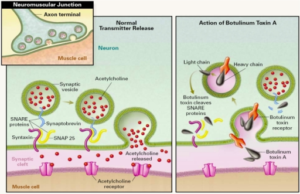
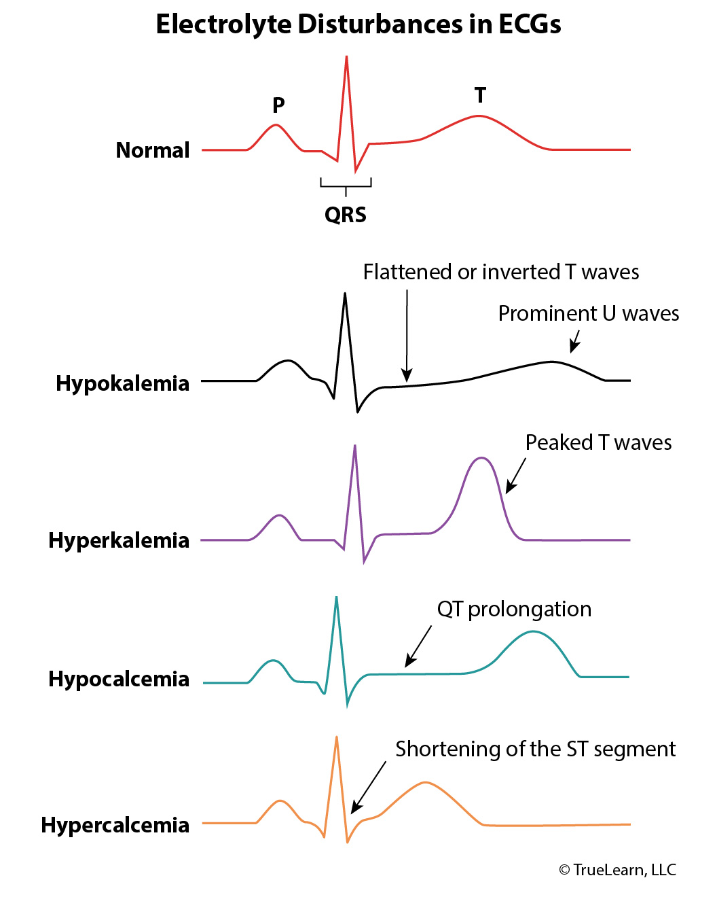
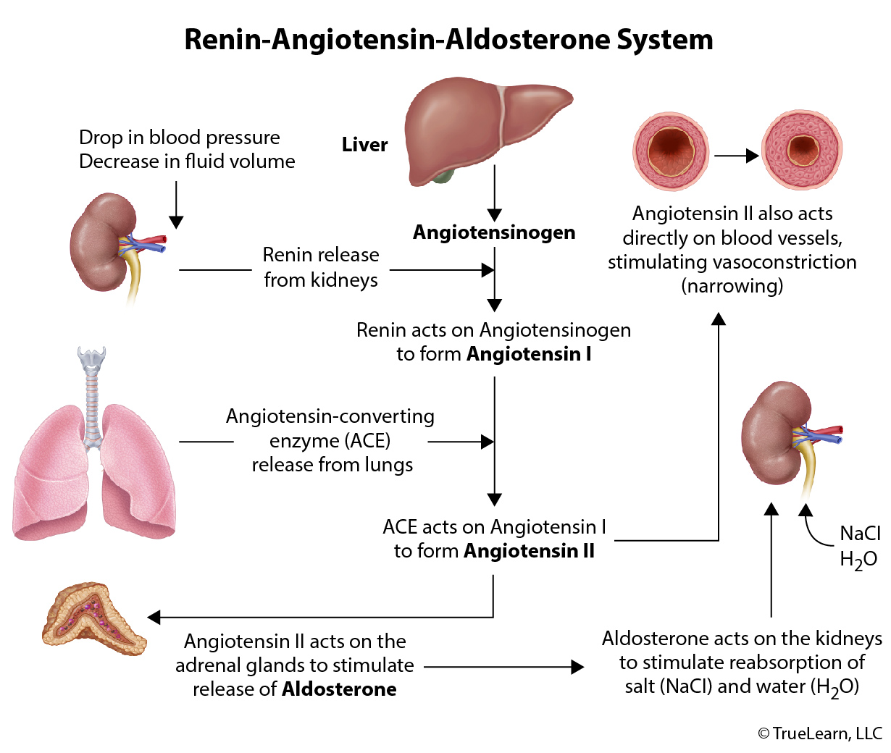
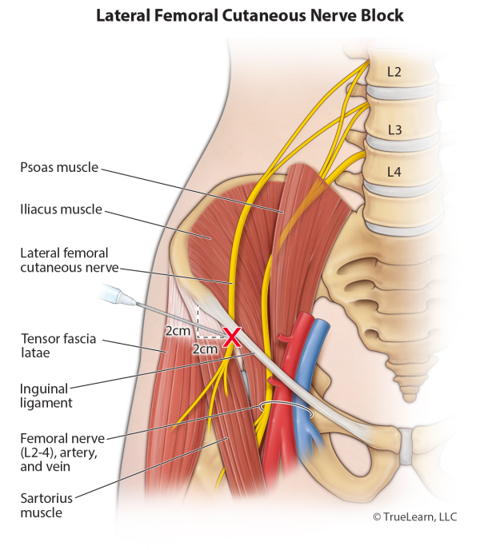

The case should not proceed until echocardiography has been obtained
About 20% of patients who present with omphalocele also have underlying congenital heart disease. Thus, it is imperative that any patient with an omphalocele undergo echocardiography prior to induction of general anesthesia. While gastroschisis malformation is not as well associated with congenital heart disease, it is common practice for these patients to have an echocardiogram prior to their repair surgery as well.
Both omphalocele and gastroschisis are defects in the anterior abdominal wall that result in evisceration of abdominal contents. In gastroschisis, this defect is formed by the occlusion of the omphalomesenteric artery, and the defect emerges periumbilical without a peritoneal covering. Omphalocele is the simple result of a failure of gut migration from the yolk sac back into the abdomen during development and is more common than gastroschisis. This defect is directly through the umbilicus and includes a peritoneal covering of the abdominal contents.
Neonates with either of these conditions are at very high risk of severe dehydration and heat loss and must be expeditiously cared for in order to reduce the risk of infection and to mitigate injury to the bowel. Early parenteral feeding is often implemented in these patient populations and has been shown to speed the return of bowel function, decrease the risk of infection, and improve wound healing. The primary intraoperative considerations for patients undergoing closure of these defects include perioperative ventilation and fluid management. While these cases represent a surgical urgency, optimization of fluid and electrolyte statuses should be accomplished prior to arrival in the operating room. Muscle relaxants are used liberally in these cases in order to facilitate closure of the defect, though even when used it is relatively common for the surgeon to defer primary closure of these defects due to excessive intra-abdominal pressures.
When the eviscerated gastric contents are returned to the abdomen, aortocaval compression resulting in hypotension is common. Increased intraabdominal pressures following primary closure can result in comprised blood flow to the liver and kidneys resulting in a relatively decreased metabolism and longer duration of action of circulating drugs. Postoperative ventilation is almost always required for these patients given the increased intra-abdominal pressures, and in cases where the surgeon delays primary closure, postoperative ventilation is absolutely required.
Bottom Line: Anesthetic considerations for the reduction of an omphalocele or a gastroschisis malformation include perioperative fluid losses, heat losses, and the sequelae of intra-abdominal hypertension following the return of the eviscerated abdominal contents to the abdominal cavity. All patients, but especially those with an omphalocele must obtain echocardiography prior to induction of anesthesia due to the 20% incidence of associated congenital heart disease in that patient population.
A 14-year-old girl presents to the operating room with a history of deep vein thrombosis. She has had three incidents of deep vein thrombosis in the past 2 years secondary to methylenetetrahydrofolate reductase deficiency. What agent should be AVOIDED in this patient?
Nitrous oxide
Nitrous oxide should be avoided in patients with methylenetetrahydrofolate reductase (MTHFR) deficiency. Nitrous oxide directly inhibits methionine synthetase. The MTHFR gene encodes a protein used in the folate pathway and synthesis of purines for DNA. When this pathway is inhibited, homocysteine levels rise. The use of nitrous oxide further increases the homocysteine level because of impaired mechanisms of metabolism. Elevated homocysteine increases the incidence of thrombosis and adverse coronary events.
Propofol is an induction agent that induces rapid anesthesia. Propofol is kept in a lipid emulsion of approximately 10% lipid. The emulsion contains egg and soy. Because of the lipid emulsion, a strict aseptic technique should be used, and open containers should not be kept for more than 12 hours. Propofol can inhibit mitochondrial function, so it is typically avoided in patients with mitochondrial disease but has not been shown to be detrimental in MTHFR deficiency. Direct mitochondrial respiratory chain inhibition is thought to be the mechanism behind propofol-related infusion syndrome.
OTHER AGENTS:
Etomidate is an induction agent that is relatively hemodynamically stable. However, etomidate has been shown to inhibit 11-beta-hydroxylase, which is used by the adrenal glands to produce corticosteroids. Because of this, etomidate has been linked to adrenal suppression and insufficiency, and it should be avoided in septic patients.
Succinylcholine is a depolarizing neuromuscular blocking agent and a trigger for malignant hyperthermia. Succinylcholine can also cause significant hyperkalemia in patients with muscular dystrophy or who have sustained denervation injuries.
Inspiratory stridor
A child who presents with inspiratory stridor should be considered to have an extrathoracic upper airway obstruction until proven otherwise. Causes of this obstruction include a foreign body in the upper airway, epiglottitis, or croup.
Foreign body aspiration is one of the leading causes of death among children today. Upon initial presentation, after ensuring that the patient can adequately ventilate and oxygenate, the most important diagnostic information that must be rapidly obtained is the location of the foreign body. Specifically, the determination of whether the foreign body is in the upper or lower airway is critical. Patients with an extrathoracic upper airway obstruction will tend to demonstrate obstruction on inspiration when the venturi effect of air moving through the upper airway will tend to cause collapse. This collapse can be mitigated by CPAP, however, the native respiratory drive should be maintained when caring for a patient with an upper airway obstruction whenever possible. An overly forceful ventilatory effort with positive pressure may drive the foreign body into the lower airway and further compromise ventilation. This dynamic airway collapse is why patients with croup, epiglottitis, and an upper airway foreign body will tend to have inspiratory stridor. Radiographic imaging may be helpful if the foreign body is radio-opaque, but this is often negative.
Patients with lower airway foreign bodies will typically present with expiratory stridor, as well as a markedly prolonged expiratory phase. It may be helpful to consider this pathology as being similar to asthma or other obstructive diseases of the small airway. During inhalation under negative pressure ventilation, the lungs airways are pulled open by the negative intrapleural pressure, allowing air to pass beyond the foreign body obstruction. During exhalation, however, the lungs experience positive pressure and the airways collapse onto the obstruction, impairing the exhalation past the obstruction. By prolonging the expiratory phase, the positive pressure on the lungs is mitigated and air may be able to move past the obstruction. Patients with an endobronchial obstruction will tend to present with choking and intractable coughing. If the foreign body remains in the trachea, the classic triad of asthmatoid wheeze, audible slap from the foreign body against the trachea during ventilation, and a palpable thud over the trachea are characteristic.
Regardless of the location of the foreign body, the anesthetic goals are reasonably similar. The agitation of the child should be minimized by any means possible. With an upper airway obstruction especially, the forced inhalation that occurs after a cry will result in the dynamic collapse of the airway and can significantly compromise ventilation. Procedures that upset the child such as venipuncture or arterial puncture must be minimized. Parent-present induction should be considered to avoid the distress that is likely to occur on parental separation. Provisions for an emergent surgical airway must be prepared should the above-mentioned airway obstruction occur and intubation/mask ventilation becomes impossible.
A gentle inhaled parent-present inhaled induction may be performed with emphasis on maintaining the native respiratory drive. Preoperative placement of a topical local anesthetic may facilitate IV catheter placement under a light plane of anesthesia. Once the IV catheter is placed, the anesthetic can be deepened safely and CPAP can be administered in the event of upper airway obstruction. At this point, the airway can be turned over to the surgeons who may perform direct laryngoscopy or rigid bronchoscopy depending on the location of the airway obstruction. Avoidance of neuromuscular blockade is crucial, particularly in upper airway obstruction as positive pressure can create a ball-valve effect and completely occlude the upper airway.
Bottom Line: Both drooling and inspiratory stridor are common presenting symptoms in an upper airway obstruction whether from a foreign body or infectious cause. The anesthetic plan for the removal of an upper airway obstruction should focus on minimizing the agitation of the patient as well as maintaining the native respiratory drive throughout the case. Positive pressure ventilation may be used cautiously if needed to stent open the upper airway. However, there is a concern for dislodging the foreign body and passing it into the lower airway with overly forceful ventilatory efforts. For upper airway obstructions, muscle relaxants are avoided as positive pressure can result in complete occlusion of the glottis and/or trachea.
2.5 mg/kg
The correct dose of dantrolene is 2.5 mg/kg for a suspected diagnosis of malignant hyperthermia.
Malignant hyperthermia (MH) is an anesthetic-related disorder of increased skeletal muscle metabolism. It is an autosomal dominant genetic condition and one of the most devastating anesthesia-related complications. The Malignant Hyperthermia Association of the United States (MHAUS) has issued an algorithm for the anesthesia provider's immediate and emergent steps during the treatment of an acute MH event.
- Notify the surgeon to stop the procedure
- Discontinue volatile anesthetic agents and succinylcholine
- If the surgery must be continued, maintain general anesthesia with intravenous (IV) anesthetic agents that are known not to be potential triggers of MH (eg, IV sedatives, narcotics, amnestic agents, and nondepolarizing neuromuscular blocking drugs.
- Hyperventilate with 100% oxygen at flows of 10 L/min to flush any volatile anesthetic and lower end-tidal CO2 (ETCO2)
- Place charcoal filters, if available, into the inspiratory and expiratory limbs of the breathing circuit
- Administer IV dantrolene 2.5 mg/kg rapidly through a large-bore IV
- Repeat as frequently as required until the patient responds with a decrease in ETCO2 and normalization of vital signs
- Large doses (> 10 mg/kg) may be required for patients with persistent contractures or rigidity
- If large doses (> 10 mg/kg) are administered without resolution of symptoms, consider other diagnoses
- Obtain blood gas (arterial or venous) levels to determine the degree of metabolic acidosis
- Consider sodium bicarbonate 1 to 2 mEq/kg dose for base excess greater than −8
- Rapidly cool the patient if the core temperature is > 39°C. Stop cooling when the temperature decreases to less than 38°C
- If hyperkalemia is present (potassium > 5.9 or less with electrocardiogram changes), treat with
- Calcium chloride 10 mg/kg or calcium gluconate 10 to 50 mg/kg for life-threatening hyperkalemia
- Sodium bicarbonate 1 to 2 mEq/kg
- IV Glucose/insulin
- For pediatric patients, give 0.1 units of regular insulin/kg IV and 2 ml/kg of 25% dextrose
- For adult patients, give 10 units of regular insulin IV and 50 ml of 50% dextrose.
Diuresis to > 1 ml/kg/hr urine output - If creatinine kinase or potassium levels rise, assume myoglobinuria and give a bicarbonate infusion of 1 mEq/kg/hr to alkalinize the urine.
- Indicators of stability:
- ETCO2 is declining or normal
- Heart rate is stable or decreasing with no signs of ominous dysrhythmias
- Hyperthermia is resolving
- Muscle rigidity (if it had been present) has resolved
Neuropathy of a sciatic nerve branch
The most commonly injured nerve in patients undergoing surgery in lithotomy position is the common peroneal nerve. It originates between L4-S2. It is due to stretching and/or compression of the nerve between the lateral head of the fibula and the bar holding the legs. The injury is associated with a low BMI and prolonged surgery. The common peroneal nerve is responsible for foot dorsiflexion and toe extension. The injury leads to isolated foot drop.
Piloerection over the affected area, Radiation of pain to the posterior shoulder upon palpation, Spontaneous activity noted on EMG of the affected area.
Myofascial pain syndromes are characterized by trigger points in skeletal muscles often secondary to repetitive use or trauma. The area of pain is localized but will cause radiation of pain in a characteristic non-dermatomal pattern upon palpation. The affected area will often have a taut band of muscle and can induce painful limitation of motion. The masseter muscle, levator scapulae, gluteus medius, and quadratus lumborum are frequent sites of involvement. Myofascial pain syndromes can become dormant with only tenderness to the site but reactivate with repeat trauma and stress.
Treatment includes application of cold sprays such as ethyl chloride to relax the muscle and allow for implementation of stretching exercises and physical therapy. Soft tissue therapy such as massage and ultrasound is also of benefit. Interventional management can include dry needling and injections of local anesthetic. During trigger point injections, reproduction of pain radiation pattern or muscle twitch are seen.
Autonomic dysfunction, such as piloerection and vasoconstriction can occur with myofascial pain syndromes.
Non-dermatomal radiation of pain is classic with myofascial pain syndromes.
Spontaneous activity of the affected muscle can be demonstrated in patients with myofascial pain syndromes.
Bottom Line: Myofascial pain syndromes are characterized by localized pain in an area of repetitive use or trauma with resultant trigger points that cause non-dermatomal pain radiation upon palpation. Autonomic dysfunction and spontaneous EMG activity can be seen in the affected region.
Inhibition of intracellular fusion of acetylcholine-containing vesicles

Botulinum toxin may be distributed from the gastrointestinal tract or lungs to cholinergic nerve endings where it blocks the release of acetylcholine at muscarinic and nicotinic receptors. It does this by inhibiting the intracellular fusion of acetylcholine-containing vesicles to the nerve-terminal membrane for release into the synaptic cleft. This leads to flaccid paralysis that progresses until the respiratory muscles cease to contract. After ingestion, symptoms of blurred vision, drooping eyelids, slurred speech, swallowing difficulty, dry mouth, constipation, muscle weakness, and shortness of breath, may occur within 18-36 hours.
OTHER TOXINS:
Sarin is a neurotoxin that potently inhibits acetylcholinesterase, causing continual transmission of nerve impulses and inability to control respiratory muscles. This is not the mechanism for botulinum toxin.
Non-depolarizing muscle relaxants such as rocuronium are competitive acetylcholine receptor inhibitors, effectively preventing the contraction of respiratory muscles. This is not the mechanism for botulinum toxin.
Tetrodotoxin inhibits fast sodium currents in myocytes, thus preventing contraction of respiratory muscles. This is not the mechanism for botulinum toxin.
Increased arterial carbon dioxide tension
Central nervous system depression, such as that observed in a patient with postictal stupor, often causes significant hypoventilation that produces hypoxemia and hypercapnia. This phenomenon can be modeled by the alveolar gas equation.
Postictal hypoxemia is a well-documented phenomenon that has been implicated as a potential cause of sudden unexpected death in epilepsy. Generalized tonic-clonic seizures in the setting of temporal lobe epilepsy appear to be particularly associated with postictal hypoxemia. The exact etiology of postictal hypoxemia is not completely understood, although an interplay of factors including central hypoventilation (and, to a lesser extent, increased systemic oxygen consumption) may be responsible for the acute reduction in blood oxygen content.
Hypoventilation produces hypoxemia primarily due to a significant increase in the arterial carbon dioxide tension (or partial pressure of carbon dioxide [PaCO2]), which is assumed to lie in direct equilibrium with the carbon dioxide tension in the alveoli. This relationship can be expressed via the alveolar gas equation
The alveolar partial pressure of oxygen (PAO2) is thus equal to the fraction of inspired oxygen (FiO2) multiplied by the difference between the ambient or local atmospheric pressure (Patm) and the partial pressure of water vapor (PH2O), with PaCO2 over the respiratory quotient (R) subtracted from this product (the respiratory quotient, also called the respiratory exchange ratio, is simply a function of the rate of carbon dioxide production divided by the rate of oxygen consumption.) As PaCO2 increases with the lack of active carbon dioxide removal in the hypoventilating patient, it is evident that PAO2 decreases—thus also reducing the availability of oxygen for effective gas exchange in the alveoli. Even with all other variables in the equation held equal, a substantial increase in the PaCO2 (eg, from 40 mm Hg to 70 mm Hg) could depress the PAO2 from normal to a hypoxemic value (eg, from 100 mm Hg to 60 mm Hg).
In the patient described in this question, a postictal state of depressed consciousness likely produced hypoventilation and consequently hypoxemia—even despite the absence of known lung disease. In most cases, postictal hypoxemia is quickly corrected with the administration of supplemental oxygen, although additional respiratory support may be warranted in a patient with a persistently depressed level of consciousness.
Bottom Line: Central nervous system (CNS) depression is frequently associated with hypoventilation, which produces hypoxemia primarily because of an increase in the arterial (and thus alveolar) partial pressure of carbon dioxide. This is evident from the alveolar gas equation. First-line therapies include supplemental oxygen and additional respiratory support as required while the underlying cause of CNS depression is addressed.
Ketamine
In the scenario presented in this question, ketamine represents the best option for analgesia because it has less respiratory depression compared with opioids and also provides anesthesia/sedation. Ketamine is an intravenous hypnotic drug that acts as an N-methyl-D-aspartic acid receptor antagonist and produces a dissociative state accompanied by analgesia. Ketamine increases systemic blood pressure, heart rate, and cardiac output and has minimal effect on ventilation. Because of the drug's bronchodilatory effects, it is the best choice for this patient because of his history of asthma. Ketamine causes increased salivation and can cause dissociative emergence delirium.
Monitored anesthesia care (MAC) is a specific anesthesia service for a diagnostic or therapeutic procedure, indications for which are determined by the nature of the procedure, the patient’s clinical condition, and the potential need to convert to a general or regional anesthetic. During MAC, various levels of sedation and analgesia are used, depending on the patient’s condition and the procedure being performed. The anesthesiologist provides or medically directs all aspects of anesthesia care encompassing a preprocedure visit, intraprocedure care, and postprocedure anesthesia management. Monitored anesthesia care enables safe administration of a depth of sedation beyond that provided during moderate sedation that could impair the patient’s respiratory function or ability to maintain the integrity of the airway.
Typically, balanced sedation and analgesia are achieved by using a variety of systemic medications and local anesthetics. Medications with rapid onset and short duration of action are preferred for sedation and analgesia because this allows for rapid titration and speeds recovery. Particular attention should be paid to avoiding cardiovascular and respiratory depression and ideally minimizing side effects such as postoperative nausea and vomiting and prolonged sedation.
Bottom Line: Monitored anesthesia care often requires a balance of sedation/anesthesia and analgesia. Benzodiazepines and propofol provide anesthesia but do not provide analgesia. Opioids provide analgesia but no anesthesia and have the side effect of respiratory depression, which can be potentiated by benzodiazepines. Ketamine provides both analgesia and anesthesia, but causes increased salivation and can cause dissociative emergence delirium.
Deliver rescue breaths
The most important initial step in managing a suspected drowning event after the airway, breathing, and circulation have been assessed is the delivery of two rescue breaths.
Although there is some controversy regarding the exact definition of drowning and the use of other terms to define drowning, the American Heart Association defines drowning as primary respiratory impairment from submersion or immersion in a liquid medium. Drowning typically begins when the patient attempts to stay above water. A period of panic ensues with the loss of normal breathing, breath-holding, and air hunger. After this initial period, the patient enters a period of hypoxemia due to aspiration of the water or reflex laryngospasm occurring when the water enters the respiratory tract. As hypoxemia worsens, it produces tissue hypoxia affecting the vital organs, and loss of consciousness occurs within two minutes.
After the person has been safely removed from the water, rescue breathing should immediately commence with two rescue breaths. If the patient does not respond to rescue breaths, chest compressions should be initiated immediately. The order of these steps is different from that for normal cardiopulmonary resuscitation for a patient with cardiac arrest because ventilation in drowning is the most important initial step. In hypothermic patients, carefully searching for pulses for one minute should occur because hypothermia can cause bradycardia or atrial fibrillation.
After the patient arrives at the hospital, the decision to either intubate or provide noninvasive positive pressure ventilation should occur. Patients who have signs of neurologic deterioration, are unable to protect the airway, or are unable to maintain adequate oxygenation despite use of high-flow oxygen or noninvasive ventilation should be intubated. In patients who do not meet the criteria for intubation, the use of noninvasive positive-pressure ventilation via continuous positive airway pressure or bilevel positive airway pressure to keep the oxygen saturation >94% should be initiated.
Diphenhydramine
This patient is most likely having an acute dystonic reaction due to dopamine antagonism from metoclopramide and prochlorperazine administration. This can quickly and reliably be treated with diphenhydramine (D).
Acute dystonic reactions (ADRs) are a type of neurologic movement disorder modulated by the extrapyramidal system involving involuntary muscle contractions, namely repetitive or twisting movements and abnormal posturing. The contractions can be intermittent spasmodic or sustained and can be generalized or only involve certain areas of the body. Acute dystonic reactions encountered perioperatively are usually reversible and the result of administration of antipsychotic (neuroleptic) drugs or dopamine antagonists (e.g., metoclopramide, prochlorperazine) since these medications can alter the dopaminergic-cholinergic balance in the basal ganglia. While rarely life-threatening and usually self-limited, medication-induced ADRs are usually disturbing and uncomfortable to patients.
The most common and usually effective treatment of medication-induced ADRs is administration of anticholinergics such as benztropine and diphenhydramine (D) (which is both anticholinergic and antihistamine). Anticholinergics help restore the dopaminergic-cholinergic balance and usually resolve symptoms within minutes of administration.
Bottom Line: Medications that disturb the dopaminergic-cholinergic balance in the basal ganglia (e.g., neuroleptics and dopamine receptor antagonists) can cause acute dystonic reactions. Treatment usually includes anticholinergic medications or benzodiazepines.
A 27-year-old patient presents for time-sensitive open cholecystectomy for recurrent cholelithiasis. The patient has a history of hypertension, obstructive sleep apnea with AHI of 30 on their most recent sleep study, obesity, and gastroesophageal reflux disease. The patient is extremely anxious and now is asking for sedation, approximately one hour prior to procedure start. The preoperative holding area does not have vital sign monitoring capabilities. What is a MOST APPROPRIATE premedication for this patient?
This patient should not be given pre-medication in the holding area
It is well known that patients with obstructive sleep apnea are susceptible to the central respiratory depressant effects of benzodiazepines, neuroleptics, and opioids. These medications may compound the symptoms of OSA by causing an enhanced relaxation of pharyngeal muscles resulting in more severe desaturation events. Thus patients should not be given intravenous premedication unless they can be safely monitored. Consideration for a small dose of an oral benzodiazepine may be given or to have the patient monitored if intravenous anxiolysis is really necessary.
In the last two decades, the number of patients with obstructive sleep apnea (OSA) has increased significantly, most likely due to the rise of obesity and chronic diseases. OSA is characterized as repetitive obstruction (apnea) or partial obstruction (hypopnea) of the upper airway resulting in abnormal ventilation during sleep. This causes a reduction of blood oxygen saturation and a termination of the obstruction through brief arousals. OSA places patients at risk for other comorbidities – systemic hypertension, pulmonary hypertension, coronary artery disease, cardiac arrhythmias (especially atrial fibrillation), cerebrovascular accidents, and type II diabetes mellitus. There are several underlying pathologic mechanisms, though obesity seems to be the highest correlation. Impaired airway anatomy, ineffective control of upper-airway muscles, and impaired ventilatory controls also play a role. OSA is diagnosed through polysomnography and the apnea-hypopnea index (AHI) is calculated. Different governing bodies have different cutoffs, an AHI > 10-15 suggests the diagnosis of OSA. The American Academy of Sleep Medicine defines mild OSA as an AHI between 5 and 15, moderate between 15 and 20, and severe > 30.
Patients with OSA in the perioperative period require some additional considerations because they have an increased risk for perioperative complications. Three important risks center around respiratory events, delirium, and atrial fibrillation. In the preoperative period, a thorough evaluation of their current OSA diagnosis and treatment regimen is warranted. An honest response on whether non-invasive ventilation has been used is important as some patients do not tolerate CPAP/BPAP and thus do not use it. Additionally, determining other comorbid conditions and the effects on organ systems is vital. Physical exam should look for signs of potential difficulty with mask ventilation or intubation since these patients often have several airway risks. Most important is planning for the type of anesthesia and post-operative pain preparation. This should likely include a well-thought-out opioid-sparing technique since these patients are at an increased risk for respiratory events. Continuous pulse oximetry and consider the use of non-invasive ventilation if the surgical team agrees. There are several new products that can help decrease the risk of postoperative respiratory events. One example is a patient-controlled analgesia pump that monitors end-tidal carbon dioxide and pulse oximetry. In this setup, the patient is unable to give a dose if significant abnormalities of either value are present.
A 28-year-old female is 39 weeks pregnant with her first child. She states she has pseudocholinesterase deficiency but is otherwise healthy. What medications can be used as usual, without significant change in pharmacokinetics?
Remifentanil is metabolized by nonspecific tissue and blood esterases (also known as red cell esterase), and thus, of all of the drugs listed above, only remifentanil would not be affected. Esmolol would also be unaffected.
Pseudocholinesterase (PChE), also known as plasma cholinesterase and butyrylcholinesterase (BChE), is a glycoprotein enzyme produced by the liver, circulating in the plasma. It specifically hydrolyzes exogenous choline esters; however, it has no known physiologic function. Pseudocholinesterase deficiency is typically an inherited enzyme abnormality that results in abnormally slow metabolic degradation of exogenous choline ester drugs such as succinylcholine, mivacurium, ester local anesthetics, cocaine, and heroin.
A variety of pathologic conditions, physiologic alterations, and medications also can lower plasma pseudocholinesterase activity (e.g. severe liver disease, plasmapheresis, AChE inhibitors, pregnancy). Genetic analysis may demonstrate a number of allelic mutations in the pseudocholinesterase gene, including point mutations resulting in abnormal enzyme structure and function with frameshift or stop codon mutations resulting in absent enzyme synthesis. Partial deficiencies in inherited pseudocholinesterase enzyme activity may be clinically insignificant unless accompanied by a concomitant acquired cause of pseudocholinesterase deficiency; for example, pregnancy. Clinically significant effects generally are not observed until the plasma cholinesterase activity is reduced to less than 75% of normal.
Dibucaine inhibits normal pseudocholinesterase to a far greater extent than the abnormal enzyme. This observation led to the development of the test for dibucaine number (DN). Under standardized test conditions, dibucaine inhibits the normal enzyme about 80 percent and the abnormal enzyme about 20 percent, thus the DN is the percent of PChE enzyme activity that is inhibited by dibucaine. Normal typical PChE enzyme activity yields a DN of 70-80; heterozygous atypical yields a DN of 50-60, homozygous atypical yields a DN of 20-30. Together, the DN and the PChE enzyme activity results can help to identify individuals at risk for prolonged paralysis following the administration of succinylcholine.
Decreased PChE enzyme activity in conjunction with a DN less than 30 suggests high risk for prolonged paralysis. Normal to decreased PChE enzyme activity in conjunction with a DN 30-79 suggests variable risk. Although decreased PChE activity in conjunction with DN greater than or equal to 80 suggests variable risk, these results may be caused by exposure to organophosphates, the presence of liver disease, pregnancy, or circulating succinylcholine. Specimens should be collected 48 hours after the administration of succinylcholine. A dibucaine number is not an expensive test and some feel routine ordering is cost-effective.
L5
The L5 dermatome (the L5 nerve root) innervates the skin over the middle buttock to the posterolateral aspect of the lower extremity wrapping anteriorly at the level of the knee to then innervate the skin over the anterolateral aspect of the lower extremity. Other areas innervated by the L5 dermatome include the dorsal and lateral aspects of the foot, lateral surface of the first toe, and toes 2 through 4.
Dermatomes can be used for the evaluation of sensory blocks or for the assessment of neurologic deficits. thirty-one pairs of spinal nerves compose the 30 dermatomes of the body (C1 does not have a dermatome). Each spinal nerve is composed of an anterior (motor) and posterior (sensory) root arising from individual spinal cord segments. The posterior roots provide sensory innervation to specific dermatomes which are named for the foramina through which they exit the vertebral column. Names of the spinal nerves in the cervical region are based on the lower vertebrae such as C3 which exits between C2-3. In the regions below the cervical vertebra, names of the dermatome levels are based on the upper vertebrae such as in L2 which exits between L2-3. The dermatomes on the trunk are organized horizontally in layers, whereas the extremities are organized more longitudinally.
Common dermatomes and anatomical landmarks that can be used to identify those dermatomes
| Dermatomes | Anatomical landmarks |
| C6 | Thumb |
| C7 | Middle finger |
| C8 | Little finger |
| T1 | Anteromedial forearm and arm |
| T2 | Medial forearm and arm to the axilla |
| T4 | Nipple |
| T6 | Xiphoid process |
| T10 | Umbilicus |
| L3 | Medial knee |
| L4 | Anterior knee and medial malleolus |
| L5 | Dorsal surface of the foot and first, second, and third toes |
| S1 | Lateral malleolus |
The 30 dermatomes of the 31 spinal nerves

A 3-month-old male infant presents for repair of an isolated cleft lip. At which of the following sites could local anesthetic be injected to produce the MOST effective postoperative analgesia?
Infraorbital foramen
The infraorbital nerve, which emerges from the infraorbital foramen and supplies sensation to much of the midface, can be blocked for postoperative analgesia in patients undergoing cleft lip repair.
Cleft lip is a common congenital abnormality resulting from the failure of the median, lateral, and/or maxillary nasal processes to fuse before eight weeks postconception. The abnormality may be associated with a cleft palate, which occurs due to a persistent defect between the embryonic palatal shelves. An isolated unilateral cleft lip is the most prevalent defect and is usually an isolated finding, although up to 30% of cleft lip cases may be syndromic. In addition to apparent cosmetic concerns, feeding difficulty and speech impediments may occur in children with uncorrected defects, so surgical correction of an isolated cleft lip is often performed before six months of age.
To provide postoperative analgesia to patients undergoing cleft lip repair, clinicians may elect to administer systemic analgesics, infiltrate local anesthetic to produce a field block at the operative site, or perform a targeted block of the infraorbital nerve. The last of these options is often selected for its relative simplicity and effectiveness in reducing opioid requirements and the associated risks of postoperative respiratory depression or apnea. The infraorbital nerve is a terminal branch of the maxillary division of the trigeminal nerve (cranial nerve V2) and emerges from the infraorbital foramen inferior to the orbital rim along with the infraorbital artery and vein. Because it provides pure sensory innervation to the skin and mucosal surfaces of the lower eyelid, lateral nose, cheek, and upper lip, blockade of the nerve is effective in eliminating most of the pain associated with cleft lip surgery.
An infraorbital nerve block can be performed via an extraoral or intraoral approach, although care must be taken to avoid damage to the globe in either case. The infraorbital foramen is palpated and protected by keeping a finger in place over the site. An extraoral approach is preferred because of its superior safety profile in younger children, and it involves cautious advancement of a small-bore needle in a superomedial orientation until bone is encountered; approximately 1 to 3 mL of local anesthetic may then be injected after negative aspiration. An intraoral approach involves insertion of the needle via the buccal mucosa at the level of the upper canines, with cephalad and lateral advancement. Significant complications are rare but may include hematoma formation, persistent paresthesias, or lasting damage to the infraorbital nerve or to the eye.
OTHER BLOCKS:
The base of the anterior tonsillar pillar is a common site of injection for targeted blockade of the glossopharyngeal nerve. This block is primarily used to dampen the gag reflex, provide anesthesia and analgesia for selected oropharyngeal surgeries, and improve patient tolerance of awake endotracheal intubation.
The ethmoidal foramen is the usual site of placement of a nasociliary nerve block, which can be performed bilaterally to provide complementary analgesia for procedures such as nasal septoplasty.
The stylomastoid foramen is the aperture at which the facial nerve (cranial nerve VII) emerges from the skull. Proximal blockade of the facial nerve (termed the Nadbath technique) may be performed at this site to reduce squinting and blinking during ophthalmic procedures, although more distal facial nerve blocks are now preferred to avoid adverse effects such as hemifacial paralysis, dysphagia, respiratory depression, and pain that may result from diffusion of anesthetic to sensitive structures near the stylomastoid foramen.
Methylergometrine 0.2 mg IM
Uterine atony is a common cause of post-delivery hemorrhage. In patients who have a diagnosis of preeclampsia (as this patient is presumed to have), administration of methylergometrine should occur only after all other options are exhausted and with extreme caution. Methylergometrine is an ergot alkaloid that is typically given intramuscularly. It has an effect within 10 minutes and lasts 3-6 hours. It can lead to intense vasoconstriction, especially if accidentally given intravenously. This can cause significant morbidity (e.g. stroke) in patients with preexisting hypertension or preeclampsia.
Uterine atony occurs more commonly after cesarean section and is more pronounced in patients who have been on oxytocin infusions for labor augmentation. Other risk factors include high parity, over distended uterus, prolonged labor, abnormalities in placentation and retained placenta.
Other reasonable treatments would be carboprost 0.25 mg IM, misoprostol 0.6 mg sublingual, or oxytoin 20 units given as an infusion
HR: 52 bpm
BP: 88/42 mm Hg
RR: 32 breaths/min
SpO2: 94%
During laryngoscopy HR falls to 22 bpm. What is the MOST likely mechanism of the bradycardia?
Unopposed vagal tone
Neurogenic shock following acute high spinal cord injuries (SCI) is associated with severe bradycardia and hypotension from unopposed vagal or parasympathetic activity and loss of cardiac accelerator fibers (if injury is above T1-T4).
During laryngoscopy, stimulation usually occurs above the level of SCI. Nerve transmission is therefore unable to descend and activate the thoracic sympathetic chain at T1-T4. Bradycardia should be treated with atropine, epinephrine, and/or pacing. Hypotension is also present from loss of sympathetic innervation to the vasculature.
Paradoxical shallow respirations usually imply the level of injury is between C4-C7. The diaphragm is still functional as loss of diaphragmatic movement usually occurs with injuries above C3 (recall: "C3, C4, C5 keeps the diaphragm alive").
OTHER NON-ANSWERS:
The Bainbridge reflex increases heart rate by inhibiting parasympathetic activity when stretch repectors located in the right atrial wall sense increased pressure.
The Hering-Breuer reflex prevents overinflation of the lungs. When subjected to excessive stretching (e.g. during CPAP or PEEP), pulmonary stretch receptors trigger the reflex which temporarily prevents inspiration and allows expiration to occur. There is no effect on heart rate.
Neurogenic shock is not associated with increased nerve sensitivity. There is a loss of sympathetic function, which cannot oppose vagal response during stimulation.
Bottom Line: Patients with acute spinal cord injuries may present with neurogenic shock, displaying bradycardia and hypotension from unopposed vagal activity. Loss of cardiac accelerator fibers may also occur if injury is above T1-T4.
Allodynia
This patient has neuropathic pain that is not in any particular distribution and is elicited by stimuli that are not normally painful, which is characteristic of allodynia.
Allodynia is a complex form of pain that is a form of peripheral sensitization. It can be of inflammatory origin (sensitization by inflammatory mediators such as bradykinin) and/or neuropathic. Examples include temperature allodynia in which changes in ambient temperature can invoke spontaneous pain due to decreased nociceptor threshold from inflammatory mediators. It is not this simple for tactile allodynia (which is what this patient is experiencing), which has not been shown to be of inflammatory origin. There has not been a decrease in threshold potentials in peripheral nociceptors noted in this form of allodynia to the level that would cause symptoms, and it has been postulated to occur from alterations in central processing of A-beta mechanosensitive nerve fibers and is thus a central sensitization and neuropathic process.
OTHER ABNORMAL SENSATIONS:
Anesthesia dolorosa is when pain is invoked a region that is denervated and should not have sensation at all and is considered a pain referral phenomenon.
Hyperesthesia ("increased feeling") is defined as increased sensitivity to stimulation, excluding the special senses. Hyperalgesia is a type of hyperesthesia. Hyperalgesia ("increased pain") is an increased response to a stimulus which is normally painful. Allodynia is also a type of hyperesthesia. Allodynia ("other pain") is pain due to a stimulus which does not normally provoke pain.
Arterial CO2 tension
Arterial CO2 tension/partial pressure decreases by ~10 mm Hg at term as a result of the increase in alveolar ventilation. Although there is an increase in CO2 production, the increased ventilation overcompensates for this and results in an overall reduction in the arterial partial pressure of CO2.
During the second and third trimesters, the uterus enlarges, exerting mechanical effects on the surrounding structures, notably the lungs. At term, many of the physiologic changes are at their peak (table) and have anesthetic implications.
The diaphragm is shifted in the cephalad direction due to the enlarging uterus. The anteroposterior and transverse diameters of the thoracic cavity increase, leading only to a slight decrease in total lung capacity. Starting at the fifth month of pregnancy, functional residual capacity, expiratory reserve volume, and residual volume decrease, while inspiratory reserve volume increases. The decrease in functional residual does not cause any clinically significant problems except in patients with preexisting conditions that alter the closing volume such as obesity, scoliosis, and smoking.
Hormonal effects from progesterone counteract the increase in airway edema due to the increased extracellular fluid, vascular engorgement, and hormonal changes by relaxing the bronchiolar smooth muscle. Progesterone also increases minute ventilation by increasing tidal volume with a minimal increase in respiratory rate. Ventilation returns to normal within 1 to 3 weeks of delivery.
Basal oxygen consumption and CO2 production increase starting at the beginning of pregnancy and peak at term secondary to the growing fetus. Despite the increase in CO2 production, there is an overall decrease in the partial pressure of CO2 to ~30 mm Hg and an increase in the partial pressure of O2 to ~105 mm Hg due to the increase in alveolar ventilation. Renal compensation for the respiratory alkalosis with increased bicarbonate excretion results in atypical pH near normal to slightly alkalotic (~7.42 to 7.44) in full-term gestation pregnant patients. Ventilation returns to normal within 1 to 3 weeks of delivery.
The increased alveolar ventilation and decreased functional residual capacity lead to the enhancement of uptake and elimination of inhalational anesthetics, resulting in a decreased minimum alveolar concentration.
Physiologic changes of pregnancy at term
| Variable | Change | Amount |
| Functional residual capacity | ↓ | 20%-30% |
| Expiratory reserve volume | ↓ | 15%-20% |
| Residual volume | ↓ | 20%-25% |
| Arterial CO2 tension | ↓ | 10 mm Hg |
| Minimal alveolar concentration | ↓ | 32%-40% |
| Minute ventilation | ↑ | 50% |
| Tidal volume | ↑ | 30%-50% |
| Respiratory rate | ↑ | minimal |
| Alveolar ventilation | ↑ | 70% |
| Oxygen consumption | ↑ | 20% |
| CO2 production | ↑ | 35% |
| Arterial O2 tension | ↑ | 10 mm Hg |
8 min
This healthy, nonobese patient who is preoxygenated with a fraction of inspired oxygen (FiO2) of 100% for 5.5 min can have an apneic period of up to ~8 min before the oxyhemoglobin desaturates to <90%. This period is often referred to as safe apnea time.
Preoxygenation involves replacing the nitrogen volume of the lungs with oxygen to create an apneic oxygen reservoir. Preoxygenate best occurs with a tight-fitting mask for >3 to 5 min of tidal volume breathing 100% oxygen at flows of 10 to 12 L/min until end-tidal oxygen reaches >90%. Other methods to save time include 4 continuous vital capacity breaths of 100% oxygen in a 30-sec period, but the desaturation times are shorter. An additional method of taking 8 breaths within a 60 second period can increase the time to desaturation.
In an otherwise healthy nonobese patient breathing ambient air (FiO2 21%), desaturation to <90% will occur after 1 to 2 min. If 100% oxygen is used to preoxygenate the patient, then it will take ~8 min before desaturation to levels <90% occurs. In general, the safe apneic time before desaturation can be estimated in a nonobese, healthy adult patient with 3 variables: the patient’s functional residual capacity (FRC), rate of oxygen consumption (VO2), and alveolar oxygen concentration (with the end-tidal oxygen percentage (etO2) often used as a proxy). This can be modeled according to the formula: safe apneic time (in minutes) = (FRC × etO2) / VO2. For example: after preoxygenation, an apneic 70-kg patient with an FRC of 30 mL/kg, an etO2 of 90%, and a VO2 of 250 mL/min would be predicted to desaturate within ~7.5 min. Theoretically, this time could be up to 10 min when calculated, which is in ideal conditions and not typically seen in clinical practice. In obese patients, the safe apnea time is reduced to an average of ~2.7 min due to a decrease in FRC.
A 31-year-old woman with myasthenia gravis is scheduled for a median sternotomy and is counseled on the likely potential for postoperative mechanical ventilation. What is MOST likely to suggest that the patient will require postoperative mechanical ventilation?
Oral pyridostigmine dose of > 750 mg/day
An oral pyridostigmine dose of > 750 mg/day is a risk factor that predicts the need for postoperative mechanical ventilation.
Myasthenia gravis is an autoimmune disorder involving antibodies that attack postsynaptic acetylcholine receptors within the neuromuscular junction. This leads to muscle weakness due to a decrease in the total number of functioning receptors. This muscle weakness is worsened by usage and improved with rest. The severity of myasthenia gravis is different in each patient and the type of muscle involvement can vary. Ocular involvement is very common, even during remission. Bulbar symptoms are slightly less common, and severe disease leading to proximal muscle weakness and respiratory failure is fairly uncommon. Reflexes are typically normal. Arrhythmias and cardiomyopathy can occur due to myocarditis. Treatment for myasthenia gravis includes oral anticholinesterases (e.g., pyridostigmine), steroids, immunosuppressants, and intravenous immune globulin. Plasmapheresis may be warranted in the acute setting and when vital capacity is < 2 L.
Extra care should be taken with myasthenic patients undergoing surgery due to the increased risk of developing postoperative respiratory failure. A classic scoring system was developed to predict the need for mechanical ventilation in patients undergoing median sternotomy for thymectomy. Risk factors that predicted the need for mechanical ventilation included the following:
- Disease duration > 6 years
- Chronic respiratory illness
- Pyridostigmine dosage > 750 mg/day (newer data suggest > 250 mg/day)
- Vital capacity < 2.9 L
- Advanced stage of myasthenia gravis (bulbar involvement)
- Body mass index > 28 kg/m2
- History of prior myasthenic crisis
- Associated with pulmonary resection
- Intraoperative blood loss > 1,000 mL
- Serum anti-acetylcholine receptor titer > 100 nmol/mL
- Pronounced decremental response (18-20%) on low-frequency repetitive nerve stimulation
CO2 insufflation
Abdominal insufflation with CO2 can decrease pulmonary compliance, increasing peak inspiratory (PIP) and plateau pressures (Pplateau).
To understand peak inspiratory and plateau pressures, the discussion must start with lung resistance. Lung resistance can be divided into airway resistance and elastic resistance.
Airway resistance affects airflow into the lungs. Peak inspiratory pressure directly varies with flow resistance. If resistance to flow increases, PIP increases as the peak inspiratory pressure measures resistance from the ventilator tubing to the segmental bronchi.
Elastic resistance affects the expansion of the lungs. This can also be thought of as the inverse of pulmonary compliance. When elastic resistance increases, pulmonary compliance decreases. Changes in elastic resistance cause changes in both peak inspiratory pressure and plateau pressure.
Situations that increase airway resistance (or decrease airflow) will increase PIP. These include bronchospasm, kinked endotracheal tube (ETT), airway secretions, and mucus plugs. Pplateau will remain unchanged.
Situations that increase the elastic resistance (or decrease compliance) will increase PIP and PPlateau. These include intrinsic pulmonary diseases, ascites, abdominal insufflation, tension pneumothorax, and Trendelenburg position.
In the event of a ventilator alarm for high airway pressures, an increased PIP with an unchanged PPlateau can help rule out several diagnoses. Consider bronchospasm high on the differential in this scenario, particularly after evaluating the ETT for kinks and passing a suction catheter down the ETT.
| Airway Resistance | Pulmonary Compliance (Elastic Resistance) |
| Increased PIP, Unchanged Pplateau | Increased PIP, Increased Pplateau |
| Airway compression Bronchospasm Foreign body Kinked endotracheal tube Mucus plug Secretions | Abdominal insufflation Ascites Intrinsic lung disease Obesity Pulmonary edema Tension pneumothorax Trendelenburg position |
Liver function tests
Patients who use oral dantrolene chronically should be assessed periodically with liver function tests (LFT). This patient's LFTs should be assessed to ensure that there is no hepatotoxicity caused by dantrolene.
Dantrolene is the only medication known to treat malignant hyperthermia. Although the exact mechanism is not fully understood, dantrolene functions by attenuating the myoplasmic calcium concentrations, restoring the calcium balance and reversing the signs of malignant hyperthermia. Although dantrolene does not block neuromuscular transmission, it does cause muscle weakness by acting directly on the muscle. Other indications for dantrolene use include neuroleptic malignant syndrome and muscle spasticity disorders (US Federal Drug Administration approved) such as spinal cord injury, cerebral palsy, multiple sclerosis, and stroke.
Patients who were treated for malignant hyperthermia with dantrolene experienced muscle weakness, phlebitis, respiratory failure, gastrointestinal discomfort (nausea and vomiting), dizziness, and confusion.
When it is taken chronically, oral dantrolene can cause hepatotoxicity and carries a black box warning. Thus, hepatic function as assessed with LFTs should be performed before dantrolene is started and should be monitored periodically. Other side effects of oral dantrolene therapy include diarrhea, constipation, gastric irritation, anorexia, abdominal cramps, enuresis, visual disturbances, and an acne-like rash. Contraindications to the use of oral dantrolene include liver diseases such as cirrhosis, hepatitis B or C infections, and nonalcoholic steatohepatitis. Dantrolene therapy should be ceased if LFTs become elevated or the patient experiences signs of hepatic symptoms such as jaundice or right upper quadrant pain.
Preoperative administration of phenytoin
Phenytoin is useful for treating and preventing myotonic crises in patients with myotonic dystrophy.
Myotonic dystrophy is a group of hereditary (usually autosomal dominant) diseases resulting in persistent contracture of skeletal muscle (myotonia) following voluntary contraction or external stimulation. This occurs because, following release, calcium does not efficiently return to the sarcoplasmic reticulum and remains available for sustained muscle contraction. In addition to skeletal muscle involvement, certain types of myotonic dystrophy (including the most common, myotonia dystrophica) also affect multiple organ systems. Symptoms and associated findings include: muscle degeneration, cataracts, diabetes mellitus, thyroid dysfunction, adrenal insufficiency, gonadal atrophy, and cardiac abnormalities (e.g. conduction dysfunction, cardiomyopathy, and mitral valve prolapse). Respiratory muscle weakness can lead to a restrictive respiratory pattern and cause mild arterial hypoxemia, reduced ventilatory response to hypoxemia and hypercapnia, and ineffective coughing. Gastrointestinal muscle weakness can lead to delayed gastric emptying, intestinal hypomotility, and pharyngeal muscle weakness. Each of these can contribute to an increased risk of aspiration.
Triggers of myotonic episodes should be avoided where possible. These include, but are not limited to: shivering due to hypothermia, neostigmine, succinylcholine, and direct surgical stimulation of muscle (especially via electrocautery). To note, neostigmine theoretically can induce myotonia although there is little clinical evidence of this effect, but its use should still be avoided when possible.
Treatment of myotonia or myotonic crises includes phenytoin, quinine, and procainamide. These drugs may also be effective as perioperative prophylaxis against perioperative myotonic crises. The drugs work by decreasing sodium influx into skeletal myocytes and delaying the return of membrane excitability following an action potential. In addition, muscle contraction may also be relieved by direct infiltration of the affected muscle with local anesthetic or administering a high concentration of volatile anesthetic (but consider that the myocardial depressant effects may not be well-tolerated). It is important to note that neuromuscular blocking drugs do NOT treat myotonia since they act at the level of the neuromuscular junction, not within the myocyte where the abnormality occurs.
Patients with myotonic dystrophy are particularly sensitive to the respiratory- and CNS-depressant effects of anesthetic medications; the smallest effective doses should be given. Similarly, patients with myotonic dystrophy can have an exaggerated response to muscle relaxants. If their use is necessary, small doses of short-acting nondepolarizing drugs should be used. Use of regional anesthesia is effective at reducing or avoiding the above complications, but will not prevent myotonia.
Bottom Line: Perioperative myotonia triggers include shivering from hypothermia, succinylcholine, neostigmine, and direct surgical stimulation of muscle. A myotonic episode can be treated with phenytoin, quinine, procainamide, direct infiltration of the affected muscle with local anesthetic, or a high concentration of volatile anesthetic. Paralytics are not effective for treating myotonia. Patients with myotonic dystrophy are sensitive to the CNS- and respiratory-depressant effects of anesthetic medications and may have exaggerated responses to neuromuscular blockers.
There is a subset of patients that have asthma triggered by aspirin and nonsteroidal anti-inflammatory drugs (NSAIDs). This occurs in approximately 8-20% of adult patients with asthma. Nasal polyps are commonly seen in this patient population, but it is also common for patients without aspirin sensitivity to have nasal polyps. It would be safest to avoid nonsteroidal drugs such as ketorolac in a known asthmatic with nasal polyps.
Other drugs that are associated with bronchospasm are related to histamine release. Histamine release associated with morphine and atracurium can potentially induce bronchospasm in patients with reactive airway disease.
Reactive airway disease, such as asthma, is a major risk factor for bronchospasm during anesthesia. Optimal treatment for asthma includes a β2-agonist inhaler, such as albuterol, and if needed an inhaled corticosteroid such as fluticasone. In addition to these two drugs, cromolyn (a mast cell stabilizer) and/or a leukotriene receptor antagonist such as montelukast can be added for additional anti-inflammatory activity since leukotrienes promote inflammation, especially within the airway. Anticholinergics may also be administered via an inhaler to promote bronchodilation. The treatment of severe persistent asthma can even include chronic oral glucocorticoid administration, but the systemic effects are limiting.
Currently, there are no absolute guidelines for the optimal administration of preoperative oral glucocorticoids in patients with asthma. Recommendations indicate that benefit may be obtained with a three-day course of oral steroids in patients with moderate to severe symptoms.
Bottom Line: Histamine release drugs, such as morphine and atracurium, increase the risk of bronchospasm in patients with reactive airway disease such as asthma. There is a subset of patients with asthma (who classically also have nasal polyps) who have an exacerbation of symptoms, including bronchospasm, with the use of aspirin or non-steroidal anti-inflammatory drugs.
Decrease in cerebral metabolic rate of oxygen
Induction doses of etomidate decrease the cerebral metabolic rate of oxygen (CMRO2) by nearly 50%. Because of this, there is a subsequent decrease in cerebral blood flow (CBF) and intracranial pressure (ICP). Due to the preservation of systemic mean arterial pressure (MAP), the cerebral perfusion pressure (CPP) is usually maintained or even increased.
Etomidate is an intravenous anesthetic that is a GABAA agonist commonly used in patients who are hemodynamically unstable (trauma, cardiac, and hypovolemic) because it results in a hemodynamically stable induction. Etomidate is used for induction at doses between 0.2 and 0.6 mg/kg. Common side effects of etomidate include postoperative nausea and vomiting, adrenocortical suppression, myoclonus, hiccups, thrombophlebitis, and pain on injection (due to the propylene glycol it is dissolved in). Etomidate is metabolized primarily in the liver and excreted in urine (80%) and bile (20%).
Etomidate administration results in a decrease in CBF, ICP, and CMRO2, with CPP maintained or slightly increased with the reduction in ICP. Cerebral perfusion pressure is calculated by using the MAP, ICP, and/or central venous pressure (CVP): CPP = MAP − CVP or CPP = MAP − ICP if ICP > CVP.
In addition, etomidate has minimal effects on MAP, CVP, pulmonary artery pressure, pulmonary artery wedge pressure, stroke volume, cardiac index, systemic vascular resistance, and pulmonary vascular resistance.
Binding of acetylcholine to M3 muscarinc receptors results in airway constriction
Activation of M3 muscarinic receptors on airway smooth muscle will tend to cause an influx of intracellular ionized calcium resulting in an increase in myosin light-chain kinase activity. This, in turn, results in an increase in smooth muscle tone and contractile force, resulting in bronchoconstriction.
Bronchiolar smooth muscle tone is the primary means by which dynamic airway resistance is increased or decreased in the lungs. Asthma, a pulmonary disease characterized by airway hyperreactivity and extreme sensitivity to the bronchospasm reflex, is very common and will be encountered frequently in clinical practice. That said, only half of the cases of bronchospasm resulting in a malpractice claim reported by the ASA's Closed Claims Project were in patients with underlying reactive airway disease, and bronchospasm can occur in any patient. Predisposing factors to develop bronchospasm include a history of asthma, heavy tobacco smoking, or active bronchial infection such as bronchitis.
Airway smooth muscle encompasses terminal bronchioles and is innervated by the autonomic nervous system. The mechanisms underlying the regulation of smooth muscle tone are highly complex and interconnected though a few general principles are important to understand. The basal tone in bronchiolar smooth muscle is regulated by parasympathetic nerves within the vagal centers of the central nervous system. These cholinergic neurons course back to the airway via the vagus nerve and exert their influence on smooth muscle tone via the M3 muscarinic receptor. As above, activation of this receptor results in smooth muscle contraction. Other nonadrenergic, noncholinergic (NANC) mechanisms which are activated by bronchopulmonary sensory C fibers without the bronchopulmonary tree. These mechanisms include the presence of circulating tachykinins, vasoactive intestinal peptide, and other bronchoconstrictive hormones. The role of the NANC mechanisms in non-pathologic states is relatively minimal in humans, though an increased amount of these circulating hormones can result in profound bronchospasm.
The release of histamine in the airways results in a profound increase in vagal activity and therefore bronchoconstriction as described above. Interestingly, when bronchospasm is mediated by a pure reflexive vagal stimulus, the bronchoconstriction tends to be in the larger airways and more central. When this same activity is stimulated by an antigen mediated histamine response the bronchoconstriction tends to be in the more distal bronchioles in the periphery of the lung.
While both alpha-1 and beta-2 adrenergic receptors have been characterized in bronchial smooth muscle, the alpha receptor tends to have little clinical importance. In contrast, the beta-2 adrenergic receptor plays a very important role in bronchiolar smooth muscle relaxation. By stimulating this receptor, there is an efflux of ionized calcium from the cell and into the sarcoplasmic reticulum causing rapid muscle relaxation.
Cranial nerve X
Due to its anatomical location, recurrent laryngeal nerve (A) injury can occur during surgical repair of a patent ductus arteriosus. The recurrent laryngeal nerve is a branch of the vagus (CN X).
The ductus arteriosus is a structure in the fetus that connects the main pulmonary artery to the aorta. Its purpose is to divert blood flow from the lungs to the aorta in utero. The ductus is kept open by a low arterial oxygen saturation and prostaglandin (specifically PGE-2), which is produced mainly by the placenta. At birth, the rise in arterial oxygen and drop in prostaglandin causes constriction of the ductus. In 0.03-0.08% of infants, the ductus arteriosus does not close, and they are declared to have a patent ductus arteriosus. After birth, the direction of the shunt shifts from a right-to-left shunt to a left-to-right shunt. The symptoms of a PDA are based on the size of the ductus and degree of shunting and can range from asymptomatic to heart failure and respiratory distress.
Treatment of patients with a PDA is either pharmacologic, using NSAIDs such as indomethacin or ibuprofen, or surgical closure. Surgical closure can either be performed via percutaneous occlusion or thoracotomy (either video assisted thoracoscopy or open thoracotomy). Left recurrent laryngeal nerve injury is one of the more common complications of the thoracotomy approach surgical repair. Cranial nerve X travels up through the thorax before giving rise to the recurrent laryngeal nerve, which travels inferior and then posterior to the arch of the aorta to ascend into the neck between the trachea and esophagus. Post-operative stridor should alert the anesthesiologist to possible recurrent laryngeal nerve injury.
Pneumothorax
A pneumothorax is an accumulation of air or gas in the space between the lung and chest wall. The disruption in the pleural space can be in the parietal pleura (external penetrating injury) or visceral pleura (tear or rupture in the lung parenchyma). With a supraclavicular and infraclavicular approach to the brachial plexus, a potential risk is a pneumothorax because of the proximity of the pleura. Recognition of a pneumothorax is based largely on the clinical presentation. A pneumothorax may occur immediately during block placement or it may present later.
Patients with a pneumothorax who are being ventilated with volume-controlled ventilators present with increased peak and plateau pressures, whereas those ventilated with pressure-controlled ventilators have reduced tidal volumes. A pneumothorax is a restrictive lung process, which is characterized by decreases in all lung volumes, decreased lung compliance, and preserved expiratory flow rates. The chest may have a tympanic sound during percussion and breath sounds may be decreased or absent on the affected side. To diagnose a pneumothorax a radiograph is often ordered, although bedside ultrasound is an option. Radiographs obtained at the end of expiration allow easier visualization because the pneumothorax takes up a greater portion of the hemithorax during this part of the respiratory cycle.
A tension pneumothorax occurs when the positive pressure of inspiration forces more air into the pleural space than exits during expiration. This can result in a rapid deterioration in the patient’s cardiopulmonary status. A tension pneumothorax is a medical emergency. A large-bore catheter should be inserted into the pleural space through the second intercostal space, along the midclavicular line.
Decreased cardiac output
Dexmedetomidine can cause a decrease in cardiac output. Some studies have provided evidence of up to a 35% decline in cardiac output from baseline with high plasma concentrations of dexmedetomidine.
Dexmedetomidine is a selective α2 agonist with sedative, anxiolytic, analgesic, hypnotic, and sympatholytic properties, with a selectivity that is 8 times greater than that of clonidine for the α2 receptor. It is commonly used for sedation in the intensive care unit in patients who are mechanically ventilated, for procedural sedation, and as part of total intravenous anesthesia. Dexmedetomidine acts on α2 receptors in the brain and the spinal cord primarily at the locus coeruleus. When an electroencephalogram (EEG) is performed in patients receiving sedation via dexmedetomidine, it resembles non–rapid eye movement (REM) sleep.
The most common cardiovascular side effects of dexmedetomidine include bradycardia, hypotension, and hypertension. Classically, bolus or loading doses were associated with bradycardia and hypertension, while infusions were associated with bradycardia and hypotension. However, recent studies have provided evidence that the most common response to bolus doses, loading doses, and infusions is bradycardia and hypotension. For unknown reasons, some patients develop initial hypertension with higher plasma concentrations of dexmedetomidine, while others do not. Extremes of hypertension, hypotension, and bradycardia all appear to be more likely with bolus or loading doses. When researchers examined the overall response in study groups, dexmedetomidine infusions resulted in a decrease in mean arterial pressure, heart rate, and cardiac output. Because of the reduction in cardiac output, dexmedetomidine should be used with caution in patients who cannot tolerate bradycardia or a decreased cardiac output.
Anesthesia dolorosa
Anesthesia dolorosa is pain in an area that lacks sensation, often involving the face.
Anesthesia dolorosa is a feared complication of neurolytic blocks for the treatment of trigeminal neuralgia (eg, radiofrequency rhizotomy). It can also be in the distribution of one of the divisions of the trigeminal nerve or the occipital nerve. Anesthesia dolorosa is difficult to treat and is generally considered to be nonreversible. Anticonvulsants, antidepressants, opiates, and psychological support are the mainstays of management. Motor cortex stimulation has been shown to, have some promise in preliminary studies. Anesthesia dolorosa after the neurolytic treatment of trigeminal neuralgia is often accompanied by eye pain.
NON ANSWERS:
Allodynia is the perception of an ordinarily nonnoxious stimulus as being painful (eg, pain from the touch of clothing).
Hyperalgesia is described as an increased pain response to noxious stimulation or pain out of proportion to physical findings. Primary hyperalgesia occurs in the area of damaged tissue, while secondary hyperalgesia occurs in surrounding nondamaged tissue. Opioid-induced hyperalgesia may occur in patients who are receiving chronic opioid treatment.
Hypoalgesia (also called hypalgesia) is a decreased response to a noxious stimulus. It is often associated with peripheral neuropathies such as diabetic neuropathy or postradiation neuropathy.
Minimizing pressure at the fibular head
The patient in this question is complaining of tingling in the lateral surface of the lower leg and dorsum of the feet and toes with weakness of eversion of the foot and most likely has an injury to the common peroneal nerve while in the lithotomy position. The risk of injury can be reduced by minimizing the pressure at the fibular head or using padding when boot stirrups are used.
The common peroneal nerve can be injured when a patient is in the lithotomy position when there is compression of the common peroneal nerve at the fibular head. The incidence of lower extremity neuropathies with lithotomy was previously as high as 1.5%, with the common peroneal nerve representing over 40% of these injuries; however, because of increased awareness, the rate of injury has decreased significantly. Reducing the risk of injury to the nerve requires ensuring that there is no compression at the fibular head and that padding is used when the patient is in the lithotomy position when boot stirrups are used. Injuries to the common peroneal nerve present with paresthesias in the lateral surface of the lower leg and dorsum of the feet and toes as well as foot drop, steppage gait, and impaired eversion of the foot.
Other nerve injuries seen when patients are in the lithotomy position include femoral nerve injury resulting from flexion at the hip causing impingement of the nerve by the inguinal ligament, obturator nerve injury resulting from hip flexion causing stretching of the nerve as it exits the obturator foramen, sciatic nerve injury resulting from hip flexion past 90º in the high lithotomy position, and saphenous nerve injuries with compression against the medial condyle of the tibia with improper padding or positioning.
Bottom Line: The common peroneal nerve can become injured when a patient is in the lithotomy position when there is excessive pressure at the fibular head compressing the nerve. To minimize injury to the nerve, pressure at the fibular head should be minimized and padding should be used when boot stirrups are used. The lithotomy position can also result in positional nerve injuries to the femoral, obturator, sciatic, and saphenous nerves.
A 54-year-old male is in the ICU after an esophagectomy complicated by an anastomotic leak and hemorrhage. He is kept on maintenance fluids for 7 days and is started on total parenteral nutrition. What is TRUE regarding hypophosphatemia?
Causes a left shift in the oxygen-hemoglobin dissociation curve
In hypophosphatemia, levels of 2,3-biphosphoglycerate decrease causing a left shift in the oxygen-hemoglobin dissociation curve. This results in an increase in the affinity of hemoglobin for oxygen preventing the release of oxygen at the tissue level.
Hypophosphatemia occurs when levels drop below 2.5 mg/dL. At levels < 1.0 mg/dL, severe hypophosphatemia ensues leading to organ dysfunction. Abnormal granulocytic chemotaxis, phagocytosis, and bactericidal activity results, increasing the susceptibility to sepsis. Neurologic symptoms stem from adenosine triphosphate depletion and include paresthesias, encephalopathy, delirium, seizures, and coma. Respiratory dysfunction results from impaired muscle contraction leading to difficulty weaning from mechanical ventilation. Weakness and rhabdomyolysis can occur. For a complete list of symptoms see the table below.
| System | Symptoms |
| Respiratory |
|
| Hematologic |
|
| Neurologic |
|
| Musculoskeletal |
|
Table illustrating the symptoms associated with hypophosphatemia.
Hypophosphatemia can occur in the critically ill who have been malnourished and are restarted on a carbohydrate-rich diet. The hypophosphatemia results from the insulin-induced uptake of phosphate and anabolic processes depleting the patient of phosphate. Other causes of hypophosphatemia include renal losses (i.e., hyperparathyroidism, hypomagnesemia, diuretic therapy, and renal tubular defects) gastrointestinal losses (i.e., phosphate-binding antacids or malabsorption syndromes), or with anticancer medications.
Repletion of phosphate is dependent on the level of phosphate. Phosphate < 1 mg/dL requires intravenous phosphate. Once levels are > 2 mg/dL, oral repletion can begin and should be continued for 5-10 days to replete total body phosphate levels. Repletion of patients who are hypocalcemic should be performed with caution as it can result in severe hypocalcemia. In patients who are hypercalcemic, phosphate repletion can cause calcification of tissues. Additionally, patients who have renal insufficiency should be repleted with care due to decreased excretion.
A 56-year-old male presents with acute small bowel obstruction with severe nausea and vomiting. He is hypotensive and tachycardic. What laboratory abnormality is MOST LIKELY to be observed?
Hypokalemia
Fluid, electrolyte, and acid-base abnormalities are very common in intestinal obstructions due to hypovolemia, fluid losses from the gastrointestinal tract, and possible tissue ischemia. Hypokalemia is commonly seen due to potassium loss from gastrointestinal fluids due to nausea and vomiting and nasogastric tube suction.
Both metabolic acidosis and alkalosis can be seen, however, the most common acid-base disturbance is metabolic acidosis because of lactic acidosis from tissue ischemia, dehydration, starvation, ketosis, and loss of alkaline secretions. Metabolic alkalosis is actually less common but can be seen with a marked loss of acidic gastric fluid without major hypovolemia and subsequent tissue malperfusion leading to acidosis.
Several simultaneous mechanisms account for fluid and electrolyte loss during a small bowel obstruction. The bowel becomes overly secretory instead of absorptive, and vomiting as well as nasogastric tube suctioning further compound fluid loss from the central vascular space. As the obstruction continues, there is a gradual decrease in plasma sodium and chloride. This loss can lead to hypovolemic hyponatremia, and hypokalemia depending on the amount of gastrointestinal fluid lost through vomiting or diarrhea. In early obstruction, 1500 mL of fluid can accumulate in the surrounding tissues outside of the central vascular space, and by the time vomiting occurs, 3000 mL may be present. Once the patient is hypotensive and tachycardic, as much as 6000 mL can be in the abdomen. It is important to watch the hemodynamics carefully when the peritoneum is opened as significant hypotension can be seen as fluid leaks out of the abdomen after a surgical incision.
Other physiologic changes include a reduction in functional residual capacity by the distended bowel and stomach producing pressure on the diaphragm and limiting its downward movement which results in a low PaO2 and elevated PaCO2. A distended abdomen can also impair venous return by decreasing the negative intrathoracic pressure by compressing the lungs, and direct inferior vena cava compression from intraperitoneal fluid.
Ratio of forced expiratory volume in 1 second to forced vital capacity
In individuals with obesity, forced expiratory volume in 1 sec (FEV1) and forced vital capacity (FVC) are slightly decreased and similarly affected, resulting in a normal to slightly elevated FEV1/FVC ratio. The pulmonary function test results of obesity are best characterized by the pattern of restrictive pulmonary disease.
Obesity can lead to significant medical complications in nearly every organ system. In the respiratory system, the excessive adipose tissue accumulates in the thorax and abdomen, decreasing the compliance of the lung and chest wall. Positioning can also affect respiratory function such that, in the supine position, the compliance is further decreased, resulting in shallow breaths, increased work of breathing, and a limited maximum ventilatory capacity.
The decreased compliance due to obesity results in decreased values in functional residual capacity and tidal volume, with a slight tendency to reduce total lung capacity. The expiratory reserve volume (ERV) is reduced, which, ultimately, is the reason that FRC is reduced, while the residual volume remains relatively unaffected. A reduced FRC can lead to lung volumes below the closing capacity with normal tidal ventilation, which can worsen up to 50%, depending on positioning (upright, supine, and Trendelenburg). This reduction can cause small airway closure, ventilation-perfusion mismatch, right-to-left shunting, and hypoxemia. Inspiratory capacity is 1 value that is increased. Spirometry values such as FEV1 and FVC are slightly decreased with increasing BMI, and the ratio FEV1/FVC remains relatively preserved or slightly increased.
The decreased compliance due to obesity results in decreased values in functional residual capacity and tidal volume, with a slight tendency to reduce total lung capacity. The expiratory reserve volume (ERV) is reduced, which, ultimately, is the reason that FRC is reduced, while the residual volume remains relatively unaffected. A reduced FRC can lead to lung volumes below the closing capacity with normal tidal ventilation, which can worsen up to 50%, depending on positioning (upright, supine, and Trendelenburg). This reduction can cause small airway closure, ventilation-perfusion mismatch, right-to-left shunting, and hypoxemia. Inspiratory capacity is 1 value that is increased. Spirometry values such as FEV1 and FVC are slightly decreased with increasing BMI, and the ratio FEV1/FVC remains relatively preserved or slightly increased.
There is toxicity from digoxin which normally increases myocardial contractility.
The patient described in this question with atrial fibrillation is experiencing nausea, vomiting, and abdominal pain and has an ECG with downsloping ST-segment depressions in most leads. This patient is most likely experiencing digoxin toxicity, which likely occurred in the setting of medication noncompliance and then increasing his dosage in an attempt to treat his heart palpitations several days ago.
Digoxin is a digitalis glycoside with positive ionotropic and negative dromotropic and chronotropic effects that is used in the treatment of atrial fibrillation and congestive heart failure. Digoxin functions to increase myocardial contractility, increase phase 4 of depolarizations, and shorten the action potential. This results in a decrease in the atrioventricular (AV) node conduction velocity and prolongs the refractory period of the AV node.
Digoxin toxicity increases in the setting of advanced age, worsening renal function, hypokalemia, low body weight, and medication noncompliance. Mild symptoms of toxicity include nausea, vomiting, diarrhea, abdominal pain, and anorexia. Visual changes include yellow to green-tinted vision (xanthopsia), blurry vision, and photopsia. As digoxin levels rise above therapeutic levels (0.8-2 ng/mL), digoxin becomes proarrhythmic, resulting in ventricular tachyarrhythmias and atrial tachycardia with AV block. Changes in electrocardiogram results that are seen in digoxin treatment include downsloping ST-segment depressions, decreased QT interval, increased PR interval, and T-wave inversion or flattening. These changes in ECG results do not result from digoxin toxicity but are seen in normal digoxin treatment.
Bottom Line: Electrocardiogram result changes seen in digoxin treatment include downsloping ST-segment depressions, decreased QT interval, increased PR interval, and T-wave inversion or flattening.
24-hour urinary 5-HIAA
Carcinoid syndrome can be diagnosed by measuring 24-hour urinary 5-HIAA.
Carcinoid syndrome is a constellation of symptoms that occurs from the release of serotonin from metastatic carcinoid tumors into the systemic circulation. Carcinoid tumors are usually slow-growing, benign, tumors that arise from neuroendocrine cells, usually in the small intestine, and evolve to secrete an excess amount of the neurotransmitter 5-hydroxytryptamine (5-HT), better known as serotonin. The GI tract is the most common site of origin for these tumors.
Carcinoid tumors are usually asymptomatic; patients may have vague symptoms of abdominal pain, intestinal obstruction, diarrhea, and GI bleeding. Once carcinoid tumors have metastasized, either into the hepatic or pulmonary circulation, they release vasoactive peptides into the systemic circulation, which causes patients to have signs and or symptoms of carcinoid syndrome. Symptoms of carcinoid syndrome include cutaneous flushing, vomiting, diarrhea, hypotension or hypertension, abdominal pain, dizziness, palpitations, and bronchoconstriction.
Carcinoid heart disease can be seen in as many as 60% of patients with carcinoid syndrome. Cardiac involvement is usually right-sided and more commonly affects the tricuspid valve with or without pulmonary valve involvement. Two dimensional echocardiography can demonstrate plaque-like deposits of fibrous tissue on the endocardium of right-sided valve cusps and leaflets as well as the atrium and ventricle. Tricuspid regurgitation is the most predominant cardiac finding in patients with carcinoid heart disease. Cardiac failure is the cause of about half of all deaths from carcinoid syndrome. Surgical excision of these tumors can often times offer a complete and permanent cure.
The diagnosis of carcinoid syndrome can be confirmed by urinary excretion of 5-hydroxy-indole-acetic-acid (5-HIAA). 5-HIAA is a metabolite of serotonin. A 24-hour urine sample containing 30mg or more of 5-HIAA suggests carcinoid syndrome. Normal urinary levels of 5-HIAA in a 24-hour period are between 3 to 15 mg. Following serial levels of 5-HIAA can help to monitor tumor progression.
Extensive hypercarbia
Subcutaneous emphysema is a relatively common complication of laparoscopic and robotic surgery (incidence of ~2%). Common presenting signs of subcutaneous emphysema include more extensive hypercarbia than would be expected from insufflation and crepitus. Minor subcutaneous emphysema is frequently not detected unless a postoperative x-ray or CT scan is obtained.
Abdominal insufflation is used in laparoscopic surgeries to improve surgical exposure and visualization which is most commonly performed with CO2 gas. With proper port positioning and short case lengths, the peritoneum prevents CO2 from traversing into the surrounding tissues. Subcutaneous emphysema can occur due to laparoscopic port malposition resulting in direct subcutaneous tissue insufflation or leakage around ports cause accumulation over time. Risk factors for subcutaneous emphysema include longer operative times, a greater number of ports, higher insufflation pressures or flow rates, retroperitoneal (vs. transperitoneal) laparoscopy, lower BMI, and older age.
If detected intraoperatively, treatment of subcutaneous emphysema aims at preventing further worsening of CO2 extravasation. This includes a discussion with the surgeon, who can lower insufflation pressures, stop insufflation temporarily, tie sutures around or reposition ports to prevent CO2 gas leakage, or convert to an open procedure. Minute ventilation should also be increased to compensate for hypercarbia. If significant neck subcutaneous emphysema is detected, care should be taken with extubation as CO2 emphysema, especially in combination with steep Trendelenburg, can contribute to airway edema. Otherwise, treatment is supportive and subcutaneous emphysema usually resolves within 24 hours.
Obesity
Obesity is a risk factor for postoperative ischemic optic neuropathy after spinal fusion in the prone position.
Postoperative vision loss (POVL) is a rare but devastating complication. POVL can be caused by retinal artery occlusion, ischemic optic neuropathy, and acute glaucoma. Ischemic optic neuropathy (ION) is the most common cause of POVL and may be either anterior or posterior. Anterior ION most commonly occurs following cardiac surgery. Whereas posterior ION is more common following surgeries that occur in the prone position (e.g. spine surgery). The approximate incidence of POVL following spine surgery is 0.02%. Risk factors include: prone positioning, long surgical length (5 or more hours), obesity, male sex, significant blood loss, Wilson frame use, and external ocular compression.
Deliberate hypotension was once considered to be associated with the development of ION, however more recent data does not support this association. Hypotension as a result of significant blood loss greater than 1 liter is associated with the development of ION. Deliberate hypotension used to prevent blood loss is not associated with ION.
Partial thromboplastin time (PTT)
When using unfractionated heparin (UFH), partial thromboplastin time (PTT) is used to monitor the therapeutic effect as UFH will predictably prolong the PTT correlating with the level of anticoagulation. UFH dosing can then be adjusted based on the PTT to be within the desired therapeutic range.
UFH functions to indirectly inhibit thrombin and factor Xa via binding to ATIII causing a conformational change enhancing the degradation of thrombin and factor Xa. UFH is still used for immediate anticoagulation as a drip for pulmonary embolism, cardiopulmonary bypass, and acute coronary artery syndrome. UFH is monitored with PTT or activated clotting time (ACT). UFH is preferred in cases of renal insufficiency as renal function does not affect elimination at therapeutic doses unlike low molecular weight heparin (LMWH) which relies on renal clearance for up to 40% of its elimination.
T10
A sensory block to the T10 level will provide satisfactory anesthesia for transurethral resection of the prostate (TURP).
Spinal anesthesia relaxes the pelvic floor and perineum creating acceptable surgical conditions and provides a sensory block that covers the prostate and bladder neck. It also eliminates the uncomfortable sensation of bladder distension during the procedure when copious amounts of irrigation are used. Spinal anesthesia offers the benefit of allowing the patient to be awake. This permits the anesthesiologist to recognize mental status changes due to TURP syndrome resulting from large amounts of irrigation solution that can cause hyponatremia leading to restlessness, confusion, convulsions, coma, and, ultimately, death.
| Sensory levels required for spinal anesthesia for various procedures |
Obstetrics
|
Orthopedics
|
Urology
|
General surgery
|
A 65-year-old woman is undergoing total right hip arthroplasty. She is given 10 mg/kg of tranexamic acid over 20 min before incision. What is the mechanism of action of tranexamic acid?
Inhibits conversion of plasminogen to plasmin
Tranexamic acid (TXA) inhibits the conversion of plasminogen to plasmin decreasing the overall rate of fibrinolysis.
Tranexamic acid and aminocaproic acid (ACA) are lysine analog antifibrinolytics. These 2 medications are synthetic derivatives of lysine that competitively inhibit the binding site on plasminogen required to activate into plasmin. Plasmin is essential for the breakdown of fibrin clots. Through inhibition of fibrinolysis via inhibition of the conversion of plasminogen to plasmin, the lysine analogs reduce blood loss. Both TXA and ACA have similar efficacy and are used to decrease perioperative blood loss in trauma, orthopedic, liver, obstetric, and cardiac surgeries. The use of these antifibrinolytics has been shown to be relatively safe, with no reports of increased risk of thrombotic or renal complications. The only side effect associated with TXA is seizures at high doses.
OTHER MEDICATIONS:
Protamine is a heparin reversal agent. It is a positively charged protein that binds to the negatively charged heparin, forming inactive complexes.
Alteplase is a fibrinolytic agent that is a synthetic tissue plasminogen activator that converts plasminogen to plasmin, promoting the breakdown of fibrin clots.
Unfractionated heparin (UFH) binds to antithrombin III, resulting in a conformational change and activation. This activated antithrombin III works as an anticoagulant through the inactivation of thrombin and factor Xa.
Lack of reflex bradycardia
Neuronal mediated heart rate reflexes, such as bradycardia from phenylephrine, will no longer function in a transplanted heart due to denervation of the cardiac autonomic plexus necessary for the efferent limb of the reflexes.
During heart transplantation, the autonomic cardiac plexus is transected, resulting in a denervated heart. As a result, the denervated donor heart will function in isolation from the recipient's nervous system. The donor heart will respond to direct activation of myocardial adrenergic receptors, and all intrinsic myocardial reflexes will continue to function (eg, Starling mechanism). Direct-acting agents such as isoproterenol, epinephrine, and dobutamine will continue to function similarly in both normal and denervated hearts. β-Blockade will also slow the donor sinoatrial node, leading to a decrease in heart rate. The donor heart will no longer respond to agents such as atropine by increasing the heart rate because the parasympathetic system no longer innervates the heart.
OTHER EFFECTS OF DONOR HEART TRANSPLANTS:
The denervated donor heart will have no response to hypovolemia. As a result of the severing of the autonomic cardiac plexus, the baroreceptors are no longer operant, and the recipient can no longer respond to hypovolemia or exercise by increasing the heart rate.
The resting heart rate in a denervated donor heart is between 90 and 110 bpm. The loss of the parasympathetic tone results in a heart rate that is faster than normal.
A 65-year-old woman with stage I chronic kidney disease and hypertension is administered lisinopril. Which of the following side effects is MOST likely to occur in this patient with this class of medications?
Hyperkalemia
This patient is being treated with lisinopril, an angiotensin-converting enzyme (ACE) inhibitor. Hyperkalemia is a side effect that occurs in patients treated with ACE inhibitors, and the risk is increased in patients with chronic kidney disease.
Angiotensin-converting enzyme inhibitors function by inhibiting the conversion of angiotensin I to angiotensin II by blocking the ACE. This leads to a decrease in angiotensin II and a decrease in the breakdown of bradykinin, resulting in
- Decrease in vasoconstriction which results in lowering of the blood pressure
- Decrease in aldosterone secretion, leading to a reduction in water and sodium reabsorption further lowering blood pressure
- Dilation of efferent renal arterioles, increasing renal plasma flow
- Increase in the production of arachidonic acid metabolites, leading to increased vasodilation lowering blood pressure
Sacroiliac pain
Low back pain (LBP) is a very common medical problem and a cause of disability and absenteeism from work. Nearly 85% of people will experience back pain at some time in their lives. Often back pain can be treated conservatively and will resolve in 2-4 weeks. However, there are several causes of LBP and being able to distinguish the etiology is important.
Sacroiliac pain is pain which develops from the sacroiliac joint. Pain can develop from inflammation, restriction, or abnormal motion. Sacroiliac pain is described as LBP that is dull and constant. Pain can be aggravated by sustained position and standing. Pain can either radiate or remain in one area.
The most reliable method to distinguish sacroiliac pain from other etiologies of LBP is the use of provocation tests. Provocation tests include compression and distraction tests, as well as the Gaenslen test (significant hip flexion) and posterior pressure on sacrum. The presence of 2 positive provocation tests has an 88% sensitivity for sacroiliac dysfunction.
OTHER SOURCES OF LBP:
Discogenic pain develops from intervertebral disks. The pain often develops from degenerative disc disease. Discogenic LBP worsens with spine flexion and when intraabdominal pressure increases (e.g. cough or sneeze). Increased intraabdominal pressure worsens pain because the increased pressure is transmitted to the disc.
Facet pain develops from the facet joints between vertebra. The facet joint, like any joint, can become inflamed and develop dysfunction. Facet pain is often characterized as non-radiating pain occurring in patients over age 65 that is relieved when lying down and not worsened by flexion or extension. Facet loading techniques typically exacerbate the symptoms. Facet pain is often responsive to a medial branch block.
Spinal stenotic pain occurs when the spinal canal narrows, compressing nerves. Spinal stenosis causes back pain that is worse with spinal extension and often causes radicular symptoms. After an appropriate history and physical, an MRI can confirm the diagnosis.
Bladder
Bladder temperature will vary the greatest from cerebral temperature during active rewarming. Temperature-sensing Foley catheters are commonly and reliably used to monitor core temperature while patients are under general anesthesia. However, during dynamic temperature changes such as the rewarming phase of cardiopulmonary bypass (CPB), bladder temperature is an unreliable indicator of core or cerebral temperature. In fact, it can underestimate cerebral temperature by up to 2°C to 4°C. This discrepancy is attributed to decreased kidney perfusion and urine output during CPB along with the increased distance from the aortic cannula where the warmed blood is entering the body.
During hypothermic CPB, the body is deliberately cooled to induce cerebral protection with hopes of minimizing adverse neurologic outcomes. Hypothermia confers cerebral protection by decreasing cerebral metabolic rate (CMRO2) and creating a favorable balance of oxygen supply and demand. For each degree Celsius < 37, CMRO2 decreases by ~6% to 7%. Results of animal studies have also provided evidence that hypothermia decreases excitotoxic neurotransmitter transmission and protects the blood-brain barrier from disruption.
Prior to separation from CPB, the body must be rewarmed to a normothermic range. During the rewarming period, the brain is at risk of hyperthermia, defined as a temperature >37°C. Hyperthermia increases cerebral metabolic rate and perfusion, making the brain susceptible to ischemic reperfusion injury as well as microemboli. Because brain parenchyma temperature cannot be measured directly during cardiac surgery, it is important to understand which temperature monitoring sites are accurate surrogates of cerebral temperature.
Jugular bulb venous temperature is considered to be the “gold standard” indicator of cerebral temperature. Because 99% of jugular bulb blood flow comes from cerebral circulation, it reliably predicts brain surface temperature during rewarming. The validity of jugular bulb temperature monitoring has been confirmed by several neurosurgical studies in patients undergoing profound hypothermia. Despite its accuracy, it is rarely used in cardiac surgery because of the invasive nature of the monitoring technique. Positioning the monitor in the jugular bulb requires that a temperature-capable venous catheter be placed in the internal jugular vein and then advanced cranially to the correct location.
Nasopharyngeal temperature monitoring is an easy, noninvasive technique used in most cardiac surgeries. Because of its proximity to the aortic cannula and great vessels, the nasopharynx remains relatively well perfused during CPB. Nevertheless, it has still been found to underestimate cerebral temperature by 0.5 to 2°C during rewarming. Although this discrepancy is less significant than that of the bladder, it should be understood so that cerebral hyperthermia can be avoided. The accuracy of nasopharyngeal temperature measurements is further limited by the variation in the positioning of the temperature probe. Results of recent studies have provided evidence that nasopharyngeal temperature is a more reliable predictor of core temperature when the thermometer is positioned 10 to 20 cm beyond the nares.
Oxygenator arterial outlet temperature measures the temperature of the arterial blood leaving the CPB circuit and entering the body via aortic cannula. Because of the proximity of the aortic cannula to the brain and ease of measurement, the arterial outlet temperature is frequently used as a surrogate for cerebral temperature. Nevertheless, researchers have found small discrepancies on the order of ±0.5°C between arterial oxygenator and jugular bulb temperatures. Because of a small but potential cerebral temperature underestimation, it is recommended that the temperature of the oxygenator arterial outlet does not exceed 37°C.
Bottom Line: Hypothermia is often used for cerebral protection during cardiopulmonary bypass. However, it is important to be aware of limitations of specific temperature monitoring sites. During dynamic temperature changes, bladder temperature will most significantly underestimate cerebral temperature.
Oxycodone
This patient in this question has a history of overdose with codeine despite having taken a normal dose, providing evidence that he is probably a cytochrome P450 2D6 (CYP2D6) ultrametabolizer. Cytochrome P450 2D6 ultrametabolizers can experience toxicity with oxycodone because CYP2D6 metabolizes oxycodone to an active metabolite with greater potency.
Oxycodone is a semisynthetic opioid commonly used to treat acute and chronic pain conditions. It is metabolized by cytochrome P450 3A4 (CYP3A4) into inactive metabolites, but another metabolic pathway exists that produces an active metabolite. Metabolism by CYP2D6, a minor pathway metabolizing 11% of oxycodone, results in the production of oxymorphone. Oxymorphone is eightfold more potent than oxycodone. In theory, CYP2D6 ultrametabolizers can metabolize a larger proportion of oxycodone, generating more oxymorphone and potentially causing an overdose. In addition, if a patient is taking a CYP3A4 inhibitor, more oxycodone will be metabolized by CYP2D6, resulting in more of the potent oxymorphone metabolite.
Codeine is also metabolized by CYP2D6, but it is a prodrug that must be metabolized to morphine to have a clinical effect. Patients who are slow CYP2D6 metabolizers have poor analgesia, whereas patients (especially children) who are ultrametabolizers can experience toxicity and overdose. The US Food and Drug Administration (FDA) has warned against the use of codeine in children because of the increased risk of respiratory depression.
Tramadol is also a prodrug that is metabolized by CYP2D6 and CYP3A4 into both active and inactive metabolites. Metabolism by CYP2D6 produces the active metabolite O-desmethyltramadol, which produces analgesia. Patients who are slow metabolizers will have poorer analgesic effects from tramadol compared to those with normal CYP2D6 metabolism.
OTHER OPIOIDS:
Fentanyl is a substrate for CYP3A4, not CYP2D6, and would be unaffected by CYP2D6 ultrametabolizers.
Morphine is a hydrophilic opioid that is primarily metabolized via conjugation by the liver into morphine-3-glucuronide and morphine-6-glucuronide (M6G). Morphine-3-glucuronide has little to no analgesic effect, but M6G is a more potent mu-opioid receptor agonist compared with morphine. Morphine would not be affected by CYP2D6 ultrametabolism.
Remifentanil is an ultrashort opioid that is primarily metabolized by blood and tissue esterases and would be unaffected by CYP2D6 ultrametabolizers.
Nitrous oxide may have an effect on surgical visualization if the procedure is prolonged
Using nitrous oxide during laparoscopic surgery can lead to difficult surgical visualization in prolonged (>60 minutes) surgeries.
Nitrous oxide reduces the requirements for inhaled volatile anesthetics and opioids. Nitrous oxide is cheap and reliable and provides some degree of analgesia. Nitrous is known to expand air-containing spaces. Nitrous oxide diffuses from the blood into air-containing spaces much faster than nitrogen can diffuse back out, resulting in the expansion of the space. Some clinicians will avoid nitrous oxide as part of their anesthetic for fear of intestinal/colonic distention, which may obstruct surgical visualization, decrease intestinal contractility, and increase the risk of leakage and anastomotic breakdown. This practice was based on results of studies conducted in dogs in the 1960s in which the intestinal gas was measured before and after nitrous oxide was administered for several hours. There was an increase in the gas volume of 100% to 300%.
Results of subsequent studies have confirmed that nitrous oxide does not alter surgical conditions during short-duration laparoscopic cholecystectomy. There is evidence that the use of nitrous oxide during intestinal and colonic surgery may make surgery more difficult due to bowel expansion from nitrous oxide diffusion. According to the results of a donor nephrectomy study, one in four procedures required the cessation of nitrous oxide because it interfered with the progress of surgery. For short-duration bariatric surgery and laparoscopic cholecystectomy surgery, results of two studies provided no evidence of significant effect on visualization. This provides evidence that the duration of surgery is a major factor for nitrous oxide affecting surgical visualization.
Bottom Line: Nitrous oxide can affect surgical visualization during prolonged procedures. Its effect on postoperative nausea and vomiting depends on exposure duration, with exposures of greater than one hour in high-risk patients having the greatest risk.
A. 182 mOsm/kg
B. 263 mOsm/kg
C. 295 mOsm/kg
D. 380 mOsm/kg
E. 454 mOsm/kg
E. 454 mOsm/kg
A urine-to-plasma osmolar ratio (UOSM : POSM) >1.5 indicates prerenal oliguria (generally secondary to hypovolemia). In this patient, the urine osmolality would need to be >441 mOsm/kg (294 mOsm/kg x 1.5)
Antibody treatment
The patient described in this questions with atrial fibrillation who presented after an overdose is most likely being treated with digoxin. The classic symptom of visual changes, such as objects having a yellow to green tint to them, is pathognomonic for digoxin toxicity. The ECG results revealed the classic finding of downsloping ST-segment depressions and bradycardia, with the most common rhythm disturbance, premature ventricular contractions, being present. The definitive treatment for digoxin overdose and toxicity is antibody treatment with digoxin-specific antibody fragments.
Mild symptoms of digoxin toxicity include nausea, vomiting, diarrhea, abdominal pain, anorexia, and bradycardia. The classic visual changes include yellow- to green-tinted vision (xanthopsia), blurry vision, and photopsia. Neurologic symptoms include confusion and weakness. Electrolyte abnormalities such as hyperkalemia are a marker of toxicity and a predictor of mortality. Despite its atrioventricular (AV) nodal blocking properties, when digoxin levels rise above therapeutic levels (0.8-2 ng/mL), digoxin becomes proarrhythmic. Digoxin toxicity results in an excessive amount of intracellular calcium, which can result in delayed after-depolarizations. This can then lead to premature contractions triggering arrhythmias. Additionally, digoxin shortens repolarization and decreases the refractory period of the myocardium, which, in turn, increases automaticity, raising the risk of arrhythmias. The most common rhythm disturbance in digoxin toxicity is premature ventricular contractions.
The definitive treatment, if it is available, for digoxin overdose or toxicity is digoxin-specific antibody (Fab) fragments. They are highly effective because they bind digoxin, forming complexes that are then excreted in the urine. Treatment with Fab fragments has minimal side effects.
Glycine solution may cause transient blindness
Hyperglycinemia may cause transient postoperative visual syndrome (transient blindness) and is a known complication of glycine irrigation solutions during transurethral resection of the prostate (TURP). The postulated mechanism is based on glycine’s role as an inhibitory neurotransmitter on the brain stem and cranial nerves. Glycine also structurally resembles aminobutyric acid, an inhibitory neurotransmitter within the spinal cord and retina. In addition, glycine is metabolized to glyoxylic acid and ammonia. Hyperammonemia may cause encephalopathy, nausea, and vomiting. This may be treated with the exogenous administration of arginine, which promotes urea formation from ammonia and excretion.
See below for a summary of complications of TURP based on organ system:
Bottom Line: The different types of irrigation fluids used for TURP each have specific disadvantages. Glycine irrigating solution may cause transient blindness. Distilled water has the highest risk for intravascular hemolysis, hypervolemia, and dilutional hyponatremia. Balanced salt solutions (such as normal saline) cause electrical current dispersion during TURP but significantly reduce the risk of TURP syndrome. Sorbitol and mannitol solutions may lead to hyperglycemia (sorbitol), intravascular fluid expansion with absorption (mannitol) and an osmotic diuresis (sorbitol and mannitol).
A 74-year-old man with a history of exploratory laparotomy for distal pancreatic resection presents for open epigastric incisional hernia repair just below the xiphoid process. The surgeon requests a regional technique to help with postoperative pain control. What nerve groups, were it blocked, would BEST provide adequate analgesia to the surgical area?
Thoracoabdominal intercostal nerves
The thoracoabdominal intercostal nerves, which are branches of the lower thoracic spinal nerves, innervate the upper abdomen.
The upper abdominal wall muscles, skin, and parietal peritoneum are innervated by branches of the lower thoracic spinal nerves, including the intercostal nerves at levels T7-T11. These nerves originate from the anterior rami of the thoracic spinal nerves and travel in the transversus abdominis plane between the transversus abdominis and the internal oblique muscles as they wrap around the abdomen. The lateral cutaneous branch of the lower thoracic spinal nerves provides sensory innervation to the skin from the lateral border of the rectus abdominis to the midaxillary line as well as posteriorly via a posterior branch to innervate the area of the latissimus dorsi. The subcostal (T12), iliohypogastric (L1), and ilioinguinal (L2) nerves also originate in the lower thoracic or upper lumbar spinal cord and travel in the transversus abdominis plane.
The transverse abdominal plane (TAP) block is a regional technique that directs the injection of local anesthetic and other adjuncts into the space between the transversus abdominis and internal oblique muscles to block the cutaneous nerves innervating the abdomen. Which nerve is blocked, however, depends on the level of the local anesthetic injection. An injection that targets the subcostal (T12), ilioinguinal (L1), and iliohypogastric (L2) nerves may not be sufficient to provide adequate analgesia to an epigastric hernia just below the level of the xiphoid (T7).
Regional techniques that target the thoracoabdominal intercostal nerves include thoracic epidural, erector spinae plane block, paravertebral nerve block, and modified TAP blocks.
The traditional TAP block is performed at or posterior to the midaxillary line below the rib cage to target the subcostal (T12), iliohypogastric (L1), and ilioinguinal (L2) nerves. In this case, the surgical incision and repair will be performed just below the level of the xiphoid process (T7), and blockade of these nerves would be insufficient to provide surgical analgesia.
The long thoracic and thoracodorsal nerves originate in the brachial plexus and provide motor innervation to the serratus anterior and latissimus dorsi muscles, respectively.
The supraclavicular, medial pectoral, and lateral pectoral nerves originate in the brachial plexus. The supraclavicular nerve provides sensory innervation to the supraclavicular area as well as to the upper chest. The medial and lateral pectoral nerves provide motor innervation to the pectoralis muscles.
Bottom Line: The upper abdominal wall is innervated by the branches of the lower thoracic spinal nerves, including the thoracoabdominal intercostal nerves at levels T7-T11. The lower abdominal wall is innervated by the subcostal (T12), iliohypogastric (L1), and ilioinguinal (L2) nerves. A traditional transverse abdominal plane (TAP) block may not be sufficient to cover the upper abdomen, so other regional techniques such as a thoracic epidural, erector spinae plane block, paravertebral nerve block, or modified TAP block may be required.
Females have a higher risk of post-dural puncture headache (PDPH) than males. Other risk factors for PDPH are younger age, pregnancy, use of cutting needles, larger gauge needles, multiple dural punctures, and needle bevel aligned perpendicular to the long axis of the spine. Of note, pencil-point needles do not have a bevel, and, thus, alignment with the axis of the spine is irrelevant.
PDPH is a complication following neuraxial anesthesia, which is characterized by a positional headache that is worse when sitting upright and better when recumbent. PDPH is also associated with neck stiffness, photophobia, tinnitus, and nausea. Onset is usually delayed 12-48 hours after the dural puncture and usually will present within 5 days of neuraxial anesthesia.
There are two proposed mechanisms for PDPH, both involving loss of cerebrospinal fluid (CSF) into the epidural space. The first is that loss of CSF results in a loss of cushioning effect of CSF on the brain, and the second is that CSF loss results in cerebral vasodilation to maintain intracranial volume, leading to increased blood flow and headache.
Loss of motor function in the lower extremities
The artery of Adamkiewicz supplies the anterior two-thirds of the spinal cord starting at T9-12 through the caudal extent of the spinal cord. If this artery is blocked, there will be a loss of motor function in the lower extremities (corticospinal tract and anterior horns), loss of pain and temperature (spinothalamic tract) 1 level below the lesion, sexual dysfunction, and urinary and fecal incontinence (descending autonomic tracts). Proprioception, fine touch, and vibrations remain intact because they are in the posterior spinal cord supplied by the posterior spinal arteries.
The spinal cord is supplied by 1 anterior and 2 posterior spinal arteries. The anterior spinal artery is derived from 6 to 8 radicular arteries that originate from the aorta and supply the anterior two-thirds of the spinal cord. The largest of these radicular arteries is the artery of Adamkiewicz, which usually arises around T9-12 on the left side of the aorta (but with wide anatomical variation because of unique embryological development) and supplies the anterior two-thirds of the spinal cord from T9-12 to the caudal extent of the spinal cord. The posterior spinal arteries originate from the posterior cerebral circulation from the circle of Willis supplying the posterior third of the spinal cord.
Disruption of the anterior spinal cord circulation is the most common cause of spinal cord infarcts. Causes of hypoperfusion and occlusion of the anterior spinal artery include aortic surgery, atherosclerotic disease, thoracoabdominal aortic dissection, vasculitis, cardiac arrest, and vertebral fractures. The tracts located in the anterior spinal cord include the lateral spinothalamic, anterior spinothalamic, lateral corticospinal, and anterior corticospinal tracts. When the anterior spinal blood circulation is affected causing an infarct to the anterior spinal cord, there will be bilateral lower extremity paresis or paraplegia, loss of pain and temperature sensation, and autonomic dysfunction. Because the posterior spinal cord will be spared, there will be the preservation of proprioception, vibration, and fine touch.
Bottom Line: The artery of Adamkiewicz arises around T9-12 on the left side of the aorta (but with wide anatomical variation) and supplies the anterior two-thirds of the spinal cord from T9-12 to the caudal extent of the spinal cord. Occlusion would result in loss of blood supply to the anterior two-thirds of the spinal cord, leaving the posterior spinal cord intact because it is supplied by the 2 posterior spinal arteries.
| Blood Pressure | Cardiac Output | Pulmonary Artery Pressures | LVEDP | |
| A | ↓ | ↑ | ↑ | ↑ |
| B | ↓ | ↓ | ↑ | ↓ |
| C | ↓ | ↑ | ↑ | ↓ |
| D | ↓ | ↓ | ↑ | ↑ |
B. Decrease BP, decrease CO, increase PAP, decrease LVEDP
There are three types of protamine reactions:
Type I: Most commonly mediated by histamine release due to rapid administration of protamine causing systemic hypotension. Treatment includes vasopressor support and slowing the administration protamine.
Type II: Anaphylactoid like or anaphylaxis. Presents very similar to anaphylaxis with systemic hypotension, increased airway pressures, and bronchoconstriction. This is more common in patients with a history of protamine exposure, previous use of NPH insulin, fish allergy, or vasectomy. Epinephrine would be the first line therapy since this increases SVR, ionotropy, and causes bronchodilation.
Type III: Caused by heparin-protamine complexes that are found in the pulmonary circulation, causing a release of arachidonic acid byproducts such as thromboxane A2 which causes pulmonary vasoconstriction, systemic hypotension, and can lead to right ventricle failure. Treatment includes stopping protamine administration, right ventricular support including epinephrine or milrinone if blood pressure will allow. The patient may require re-heparinization to decrease the number of heparin-protamine complexes and ultimately re-institution of cardiopulmonary bypass.
Bottom Line: Protamine is used to reverse the effects of heparin-induced coagulopathy, however, its use and side effects should always be considered when administering. Epinephrine is a useful medication for most reaction. In a type III protamine reaction, mediated by thromboxane A2, systemic hypotension is typically seen with right heart failure.
Endotracheal intubation
The patient described in this question with symptoms of an upper respiratory infection (URI) is at an increased risk of developing respiratory complications. The risk is increased with the use of endotracheal intubation because it increases the risk of laryngeal irritation, laryngospasm, and bronchospasm. Although some surgeries require endotracheal intubation, careful consideration of its necessity should be used, with alternatives considered in the setting of a URI.
A URI is nasopharyngitis secondary to a viral infection and is a cause of bronchial hyperreactivity. Patients will present with nasal congestion, rhinitis, sore throat, cough, fever, and malaise. The symptoms are primarily in the upper respiratory tract, but the lower respiratory tract is involved, as revealed by an increase in bronchial reactivity and bronchoconstriction. Pediatric patients with a URI with severe features are at increased risk of developing perioperative respiratory complications such as bronchospasm, laryngospasm, severe coughing, and oxygen desaturation during or up to 4 weeks after a URI. Not every patient will have these complications, but identifying patients who are at increased risk is important. Factors that increase perioperative respiratory complications in the setting of a URI include
- Reactive airway disease
- Prematurity
- Airway surgery
- Endotracheal intubation in patients <5 years of age
- Laryngeal mask insertion
- Presence of copious secretions and nasal congestion
- Secondhand smoke
At least 24 hours
Apnea is the absence of breathing greater than 15 to 20 seconds. The primary cause of apnea in these infants is central, though some infants can have mixed (both central and obstructive) apneas. Post-operative apnea is of great concern in the premature neonate population, prompting a prolongation of monitoring following episodes of anesthesia.
The current recommendation is that formerly premature infants who are between under 45 weeks post-conceptual age should be admitted for overnight observation following general anesthesia, whereas those formerly premature infants who are between 45 and 60 weeks post-conceptual age should be evaluated for admission on a case-by-case basis and also depends on the institutional policy. Risk factors that mandate an overnight stay include episodes of apnea at home and anemia defined as hematocrit < 30. However, since apnea has been demonstrated in premature infants as old as 60 weeks post-conceptual age, many institutions have implemented more conservative policies to keep all such infants overnight in the hospital for observation following procedures performed under general anesthesia. Some institutions have developed algorithms for determining the possibility of ambulatory surgery for all infants undergoing procedures performed under general anesthesia; an adaptation of one such algorithm followed by a specialized children's hospital is as follows:
Figure. Adapted from Complications in Anesthesia.
Note that for full-term infants, case reports of apneic episodes have been noted at birth so guidelines generally recommend waiting until post-natal age of greater than 4 weeks prior to discharging without observation. Additionally, full-term patients under 12 weeks post-natal age who are at high risk for apnea (family history, high opioid requirement in the PACU) should be admitted overnight for observation.
T test
Paired t-test
This study evaluates the effect of a novel anti-hypertensive medication on blood pressure within the same group at two different times. The best test to assess statistical significance is the paired t-test.
There are three different types of groups of statistical tests: parametric, nonparametric, and categorical. Parametric statistical tests are used to determine statistical significance between groups when they have a normal distribution and large sample size. Nonparametric statistical tests are used when the distribution is nonnormal and there is a small sample size. Categorical statistical tests evaluate the difference between groups with categorical values or when values do not have a mean.
The t-test is a parametric statistical test that calculates the differences between the means of two groups that differ from each other, but both groups have to be from the same population and have the same variance. Additionally, the difference between the observations must follow a normal distribution. There are two types of t-tests: the one-sample t-test and the two-sample t-test. The one-sample t-test determines whether there is a difference between the sample and the population mean. The two-sample t-test calculates whether the means of two groups differ from each other.
Within the two-sample t-test, there are two types: unpaired and paired. The unpaired t-test, also known as the independent samples t-test, assesses two different groups and measures the means between these two groups. The paired t-test, also known as the dependent samples t-test, assesses the same group's mean but is sampled at two different times.
As soon as possible
In one large observational study of in-hospital cardiac arrest with nonshockable rhythms, early administration of epinephrine (1 to 3 minutes) was associated with a higher probability of return of spontaneous circulation, survival in hospital, and neurologically intact survival. There is also evidence that when epinephrine is administered for out-of-hospital cardiac arrest, the early administration of epinephrine is associated with better outcomes compared with late administration (although whether there is any role for epinephrine in out-of-hospital cardiac arrest is controversial).
American Heart Association (AHA) guidelines for CPR state that "It may be reasonable to administer epinephrine as soon as feasible after the onset of cardiac arrest due to an initial nonshockable rhythm."
Note that the "as soon as feasible" recommendation does not apply to shockable rhythms. The algorithm for shockable rhythms calls for defibrillation, then 2 min of CPR, then defibrillation again, then epinephrine. Furthermore, a recent study found that in patients with in-hospital cardiac arrest with initial shockable rhythm, administration of epinephrine within the two minutes after the first defibrillation was associated with worse outcomes.
OTHER NOTES:
Pulseless electrical activity is not a shockable rhythm.
Epinephrine should be administered as soon as possible in non-shockable rhythms.
Bottom Line: AHA guidelines recommend epinephrine to be administered "as soon as feasible" for non-shockable cardiac arrest. The algorithm for shockable rhythms, on the other hand, calls for defibrillation then 2 min of CPR then defibrillation then epinephrine.
Restrictive lung disorder
This patient is likely experiencing abdominal compartment syndrome which creates a restrictive lung disorder causing a reduction in lung compliance.
Restrictive lung disease involves a reduction in total lung capacity, with pulmonary function tests typically demonstrating a proportional decrease in forced expiratory volume in one second (FEV1) and forced vital capacity (FVC) resulting in an essentially normal FEV1/FVC ratio of greater than 0.7. The etiologies of restrictive lung disease are broad and can be grouped into five categories:
1) Neurologic: CNS depression, spinal cord dysfunction, myasthenia gravis, phrenic nerve paralysis
2) Musculoskeletal: muscular dystrophies, kyphoscoliosis, chest wall trauma, obesity
3) Parenchymal: atelectasis, pneumonia, interstitial pneumonitis, pulmonary fibrosis, acute respiratory distress syndrome, bronchopulmonary dysplasia
4) Pleural and Mediastinal: bronchopleural fistula, chylothorax, empyema, hemothorax, pleural effusion, pneumothorax, mesothelioma
5) Other: Abdominal distension (ascites, abdominal compartment syndrome, abdominal insufflation), pain
Abdominal distension limits diaphragmatic excursion and reduces total lung capacity, making it a restrictive disease process. Examples of abdominal distension include abdominal compartment syndrome, insufflation of the abdomen during laparoscopic surgery, and ascites. For patients who have an acute change such as compartment syndrome or insufflation, one might see a decrease in compliance (defined as the change in volume divided by change in pressure) meaning higher pressures will be required to deliver the same tidal volumes.
16%
Standard deviation is a measure of data spread. The majority of data falls closely to the median value in a bimodal pattern, which means equal amounts of data points fall above and below the median value. In a normal distribution, bimodal coverage of 1, 2, and 3 standard deviations are represented by 68%, 95%, and 99% coverage of a population, respectively.
When evaluating the size of the population above a certain standard deviation, one must account for the inclusion of the 0-50th percentile. This means that at a threshold of 1 standard deviation, all values below the median are added to the unimodal data within the standard deviation. At 1 standard deviation, the formula is:
68% / 2 + 50% = 34% + 50% = 84%
These values can be calculated in a similar manner for 2 and 3 standard deviations, resulting in 97.5% and 99.5%, respectfully.
Intravenous nitroglycerin
The initial treatment of choice to induce rapid uterine relaxation during an obstetric emergency in a patient who is not under general anesthesia is nitroglycerin. Nitroglycerin administration is the preferred agent because it results in uterine relaxation within 40 to 90 seconds and has a very short duration of action (half-life of ~1-3 min).
During obstetric emergencies, there is often a requirement for rapid and transient relaxation of the cervix and the uterus to allow obstetric maneuvers. Examples of useful indications include facilitation of vaginal delivery of a twin in an abnormal position, breech presentations to deliver the fetal head, cesarean delivery of a fetus with an abnormality (such as hydrocephalus), inverted uterus, removal of retained placenta, and oxytocic overdose. In the past, uterine relaxation was obtained with potent volatile anesthetics that required general anesthesia, introducing the possibility of difficult airway, aspiration, and hypoxia. High concentrations of volatile anesthetics are not as easily titratable as nitroglycerin, which is also a potent uterine relaxant. Intravenous or sublingual nitroglycerin provides rapid onset of uterine relaxation and has a very short duration of action. If intravenous or sublingual nitroglycerin does not provide adequate relaxation, rapid induction of general anesthesia should occur, followed by administration of a high concentration of a volatile halogenated agent.
Nitroglycerin results in the release of nitric oxide, which mediates the relaxation of smooth muscle. It should be noted that the cervix contains less than 15% smooth muscle cells; however, nitroglycerin relaxes this muscle, allowing the maneuvers to be performed. Intravenous doses of nitroglycerin range from 50 to 1,500 mcg while sublingual sprays are given in metered doses of 400 to 800 mcg, depending on the manufacturer. Nitroglycerin administration may result in transient maternal hypotension. For this reason, nitroglycerin should not be given to patients with uncorrected hypovolemia, and a rapidly running IV catheter should be in place in case vasopressors are required. In addition, the patient may develop a severe headache, which, should hypotension occur, can be treated with a vasopressor such as phenylephrine.
Other pharmacologic options for uterine relaxation include inhaled amyl nitrite and beta-adrenergic agonists (IV ritodrine, IV salbutamol, IV terbutaline).
Febrile non-hemolytic
Soluble antigens (proteins) in transfused blood products may result in mild allergic reactions causing urticaria.
Pre-storage leukoreduction of packed red blood cells (pRBCs) results in the removal of white blood cells from whole blood prior to the separation of the blood into individual components. White blood cells will tend to release inflammatory mediators in storage, and their removal before storage results in a pRBC product that is much less likely to result in either a febrile non-hemolytic or allergic transfusion reaction. Leukoreduced pRBCs have a lower concentration of exogenous proteins that the patient's immune system can react with to cause an allergic reaction. Likewise, there is a very limited time for the white blood cells in the donor's whole blood to release the inflammatory mediators that cause a febrile non-hemolytic transfusion reaction following transfusion into the patient. Pre-storage leukoreduction of pRBCs can be augmented by washing the pRBCs of their supernatant prior to transfusing them into the patient, further minimizing the concentration of soluble inflammatory mediators or residual white blood cells that are transfused into the patient.
The practice of leukoreduction of pRBCs is largely universal throughout most of Europe and Canada, though universal leukoreduction is not yet standard practice in the United States. Leukoreduction refers to the use of filters to remove leukocytes from blood products. This practice is performed to decrease the risk of alloimmunization, febrile transfusion reactions, and transfusion-transmitted cytomegalovirus (CMV) infections.
HLA alloimmunization occurs when the patient is exposed to host antigens. By minimizing the cellular component of a transfusion that has not been specifically crossmatched to a patient's circulating antibodies, there is a decreased risk of both febrile transfusion reaction and the formation of new antibodies. The prevention of the formation of new autoantibodies is incredibly important in patients who are awaiting organ transplantation and the increased presence of autoantibodies increases the risk of transplant rejection. The reduction in the transmission of intracellular CMV which resides within leukocytes to an immunocompromised host is another benefit of leukoreduction. There are no major risks or downsides to leukoreduction outside of a modest cost for the physical filters, and thus many have argued for its universal use on all units of pRBC's given the theoretical benefits. While these theoretical benefits have not been definitively demonstrated in practice, most hospital systems even in the United States have adopted the practice of universal leukoreduction for their pRBC's.
Other blood products are not routinely leukoreduced because pRBC's have the highest concentration of cellular components of any of the other blood products. When whole blood is centrifuged initially to separate packed red blood cells from platelet-rich plasma, the vast majority of the leukocytes in the serum are centrifuged off of the plasma along with the erythrocytes. When platelets are centrifuged off of the platelet-rich plasma to form platelets and fresh frozen plasma, any remaining leukocytes are centrifuged off with the platelets, leaving the largely acellular plasma. Thus, because pRBCs have the highest concentration of leukocytes, they are the blood product that is most likely to benefit from leukoreduction.
OTHER REACTIONS:
Acute hemolytic reactions occur when ABO-incompatible blood is transfused into a patient and is not prevented by leukoreduction.
Delayed hemolytic reactions occur when ABO-compatible but otherwise uncrossmatched blood is transfused into a patient and is not prevented by leukoreduction.
Septic reactions: While the transmission of the intracellular pathogen cytomegalovirus (CMV) is all but eliminated through the use of leukoreduction, the major risk of CMV infection is in immunocompromised adults. While this patient is undergoing evaluation for a renal transplant, he is not currently immunocompromised, and thus this risk is relatively low. More common causes of septic transfusion reactions occur due to improper storage and handling of component blood products and are very rare with modern blood banking practices.
Bottom Line: Packed red blood cells are almost universally leukoreduced at most hospitals within the United States, though this is not yet the standard of care. Because packed red blood cells contain the vast majority of leukocytes from the donor whole blood, they are the component blood product that is most likely to benefit from leukoreduction. Pre-storage leukoreduction is useful to protect against HLA alloimmunization, febrile transfusion reactions, allergic transfusion reactions, and transfusion-transmitted CMV infections. Soluble antigens (proteins) in transfused blood products may result in mild allergic reactions causing urticaria.
Retrograde cardioplegia
Retrograde cardioplegia, which refers to the delivery of cardioplegia solution into the cardiac veins via the coronary sinus, offers superior myocardial protection in the setting of severe obstructive coronary artery disease (CAD), aortic insufficiency (AI), or surgeries involving significant manipulation of the aortic valve or coronary ostia.
The administration of a potassium-enriched cardioplegia solution during cardiopulmonary bypass (CPB) serves 2 primary functions, ensuring a motionless surgical field and reducing myocardial metabolic demand. As extracellular potassium concentrations rise, electromechanical activity ceases, and the heart is arrested in diastole. Cooling the cardioplegia solution prior to administration allows the heart’s metabolic activity to be reduced by up to 97%, allowing up to 40 minutes of relatively protected perfusion-free time. After completion of the surgical procedure, the heart can be restarted via reperfusion with warmed, normokalemic blood.
Traditionally, cardioplegia solution was administered only via a small-bore catheter or needle in an antegrade fashion at the aortic root or directly into the coronary arteries. While this anatomically logical technique allows for effective circulation of cardioplegia solution to the myocardium in most patients, various limitations of this technique rapidly became apparent. Patients with distorted aortic valvular or coronary arterial anatomy, those with severe AI, and those with substantial CAD often developed inadequate cardioplegia for full myocardial protection. Aortic insufficiency poses a particularly strong contraindication to reliance on antegrade cardioplegia delivered to the aortic root because backflow of cardioplegia solution into the left ventricle through the incompetent valve may produce myocardial distention and, thus, increase metabolic demand. In these patient populations, an approach involving the infusion of potassium-enriched cardioplegia solution into the coronary sinus through a balloon-tipped catheter resulted in superior outcomes. This method of retrograde cardioplegia remains in widespread use today for patients with significant AI, those with CAD, and those undergoing complex procedures involving the proximal coronary arteries or aortic root.
Notable limitations of retrograde cardioplegia compared to an antegrade approach include relatively poor distribution of cardioplegia solution to the right coronary artery territory, particularly the anterior free wall, as well as relative capillary hypoperfusion. Patients must, therefore, be judiciously selected for this technique. In addition, it is now increasingly accepted that a combination of antegrade and retrograde cardioplegia may allow for a superior degree of myocardial protection relative to either approach in isolation. Thus, the techniques are now frequently coupled during cardiac surgery with CPB.
Cryoprecipitate
This patient with an increased K time and alpha angle is likely deficient in fibrinogen, which could be corrected with cryoprecipitate or fibrinogen concentrate.
Thromboelastography (TEG) is a point-of-care test that provides a quick and quantitative graphic evaluation of clotting function in < 30 minutes. It provides information on initial fibrin formation, speed of fibrin deposition, clot consistency, rate of clot formation, and time for clot retraction and lysis. In TEG, the process occurs as follows:
- An aliquot of blood is placed into a vessel with a stationary pin attached to a torsion wire immersed in the blood
- The vessel oscillates at a set speed as the clot formation begins
- As the fibrin and platelet aggregates form, they connect the vessel to the pin resulting in the pin oscillating with the magnitude related to the strength of the clot
- The pin oscillation is converted into a graphical tracing known as the thromboelastogram
The values generated from a TEG include the reaction time (R), kinetics/coagulation time (K), maximum amplitude (MA), α angle, and percent lysis at 30 minutes (LY30).
- R is the value measured from T=0 to the initial formation of the clot as defined as an amplitude of 2 mm. This phase is dependent on clotting factors. The normal range is 5-10 minutes.
- K is the strength of clot formation. It is the time from an amplitude of 2 mm to 20 mm. This phase is dependent on fibrinogen. The normal range is 1-3 minutes.
- α angle measures the speed of clot formation and is the angle between the baseline and a line tangential to the TEG at 2 mm in amplitude. This phase is dependent on fibrinogen. The normal α angle is 50-70°.
- MA measures the strength of the clot and is the maximum width of the TEG. This phase is dependent on platelet number, function, and fibrin cross-linking. The normal width is 50-70 mm.
- LY30 is the percent lysis at 30 minutes. The normal values are 0-9%.
OTHER EFFECTS:
Desmopressin is used when there is a functional issue with platelets, which would be evident by a decreased MA on TEG. Desmopressin causes the release of endothelial cell stores of factor VIII and von Willebrand factor as well as increases platelet membrane glycoprotein expression. It is more commonly used for uremic bleeding or von Willebrand disease.
Fresh frozen plasma would be most useful in correcting an increased R time.
A decrease in MA would suggest dysfunctional platelets or thrombocytopenia, which could be corrected with a platelet transfusion.
Left anterior descending artery
The transesophageal echocardiography (TEE) image displayed in the question is a transgastric short-axis view of the left ventricle (LV) at the midpapillary level. The red arrow is pointing toward the anterior wall of the LV, which is most commonly perfused by the left anterior descending (LAD) artery.
Two views commonly reviewed during TEE are the transgastric midpapillary short-axis view and the midesophageal (ME) 4-chamber view.
Diagram of the transgastric midpapillary short axis view of the left ventricle and the right ventricle
Abbreviations: LV, left ventricle; RV, right ventricle; TG mid SAX, transgastric midpapillary short axis.
The TEE transducer sits in the esophagus or stomach. The top of the image represents structures closest to the probe, while structures at the bottom of the image are farthest away from the probe. The inferior wall of the LV lies at the top of the image closest to the probe in the transgastric short axis view, and the anterior wall of the LV lies at the bottom of the image farthest away from the probe. The anterior wall of the LV is nearly always supplied by the LAD.
It is imperative to understand the correlation of regional wall motion abnormalities to their respective coronary distributions as illustrated in the diagram below. The inferolateral and inferior walls may be supplied by the left circumflex artery in the setting of left dominant circulation. In left dominant circulation, the posterior descending artery (PDA) is supplied by the left circumflex artery. Left dominant circulation occurs in 15% of the general population, while shared perfusion occurs in 20% of the population. Perfusion of the PDA by both the circumflex and the right coronary artery (RCA) is known as shared circulation. Right dominant circulation (the PDA is supplied by the RCA) exists in approximately 65% of the general population.
Regional biventricular blood supply in the transgastric midpapillary short axis view
Regional biventricular blood supply in the ME 4-chamber view
Abbreviations: LA, left atrium; RA, right atrium.
Lidocaine
Lidocaine crosses the placenta and may accumulate to toxic levels due to the effect of ion trapping from fetal acidosis.
A healthy fetus has a relatively low pH compared with its mother. Normal fetal pH is between 7.32 and 7.38, while maternal pH is about 7.43 due to chronic respiratory alkalosis. In the setting of decreased uterine blood flow, such as from significant maternal blood loss, fetal pH will decrease further. The difference in pH can produce a phenomenon known as ion trapping, which results in the accumulation of certain basic drugs in the fetus.
A basic drug, such as a local anesthetic, that crosses the placenta in the un-ionized form accepts a hydrogen ion in the more acidic environment and becomes ionized. This occurs because lidocaine has a pKa of 7.8, meaning that more of the drug exists in its ionized fraction as pH decreases below 7.8. The drug can then accumulate because ionized drugs (charged, nonlipophilic) are less likely to cross over the placenta back into the maternal circulation.
Four main factors determine the placental transfer of drugs:
- Size: drugs with a molecular weight < 500 Da more readily cross the placenta, while drugs > 1,000 Da (eg, heparin, protamine, insulin) do not readily cross the placenta
- Degree of lipid solubility: drugs that are highly ionized (eg, succinylcholine and non-depolarizing muscle relaxants) do not easily cross the placenta; lipophilic drugs (eg, fentanyl) cross more readily
- Protein binding: drugs that are highly bound to plasma proteins are less likely to cross the placenta. Unbound fractions may still cross; however, the mother has 50% more plasma proteins compared with the fetus and, therefore, will maintain a higher concentration of protein-bound drugs (eg, bupivacaine and ropivacaine)
- Maternal drug concentration: the higher the concentration of a drug in the maternal circulation, the greater the rate of transfer through the placenta
Some important drugs that do not cross the placenta include: Heparin, Insulin, Glycopyrrolate, Nondepolarizing muscle relaxants, and Succinylcholine ("He Is Going Nowhere Soon").
OTHER MEDICATIONS:
Atropine is a lipid-soluble tertiary amine that crosses the placenta because it is uncharged. Atropine does not exhibit any significant ion trapping, so this acidotic fetus is at no greater risk than a healthy fetus of harm from drug accumulation. In the setting of fetal bradycardia, atropine may prove beneficial.
Volatile anesthetics do cross the placenta, but, in the setting of fetal distress, the amount of sevoflurane that crosses is diminished. Also, in the patient in this question, the cesarean section should be performed rapidly, minimizing the time for placental transfer. After delivery occurs, sevoflurane is rapidly eliminated, and minimal fetal depression should occur.
Bottom Line: Drug characteristics that facilitate placental transfer include small size (< 500 Da), nonionized/lipid soluble, poorly protein bound, and high maternal concentration. Drugs that undergo ion trapping (most importantly local anesthetics) can accumulate more quickly in the setting of fetal acidosis.
NSAIDS (e.g. ketorolac)
Nonsteroidal anti-inflammatory drugs (NSAID), such as ketorolac, are effective therapies for a pain crisis in patients with sickle cell anemia; however, NSAIDs are contraindicated in parturient patients after 32 weeks gestation because of an increased risk of premature closure of the ductus arteriosus in the fetus.
Sickle cell anemia is due to a polymorphism (valine substitution for glutamic acid in the sixth amino acid) in the β-chain in hemoglobin. As a result of this polymorphism, erythrocytes sickle when they are deoxygenated, causing aggregation and occlusion in small vessels. Other factors that can lead to sickling include dehydration (increases blood viscosity), hypotension (causes vascular stasis), hypothermia, acidosis, and sickle cell hemoglobin concentrations >50%. After having been reoxygenated, the erythrocytes can unsickle. If multiple sickling cycles occur, the erythrocytes can become irreversibly damaged, causing sickling regardless of the conditions.
Pain events are more common in patients with sickle cell anemia during pregnancy compared to nonpregnant patients. The mainstays for treatment include acetaminophen for mild pain and opioids for severe pain. If a patient is in labor, a lumbar epidural can also be helpful in reducing overall pain symptoms, but supplemental opioids are often required.
| FVC | FEV1 | FEV1/FVC | |
| A | 1.24 L (48% predicted) | 1.11 L (55% predicted) | 113% predicted |
| B | 2.16 L (55% predicted) | 1.82 L (57% predicted) | 84% predicted |
| C | 3.45 L (76% predicted) | 1.38 L (40% predicted) | 52% predicted |
| D | 4.40 L (107% predicted) | 2.39 L (76% predicted) | 54% predicted |
C
The pulmonary function tests (PTF) listed in the question are diagnostic for chronic obstructive pulmonary disease (COPD) due to a forced expiratory volume in 1 second/forced vital capacity (FEV1/FVC) ratio of <70% predicted. The PFTs also provide evidence of severe disease based on a postbronchodilator forced expiratory volume in 1 second (FEV1) of <50% predicted.
The formal diagnosis of COPD is confirmed by spirometry demonstrating airflow limitation with an FEV1/FVC ratio of less than 70% of predicted that is incompletely reversible after the inhalation of a bronchodilator. The Global Initiative for Chronic Obstructive Lung Disease (GOLD) staging is commonly used to assess the severity of COPD.
- Stage 1 (mild): FEV1 80% or greater of predicted
- Stage 2 (moderate): FEV1 50%-79% of predicted
- Stage 3 (severe): FEV1 30%-49% of predicted
- Stage 4 (very severe): FEV1 less than 30% of predicted
Patients with severe COPD with FEV1 <50% of predicted usually have dyspnea on exertion and are at significant risk of postoperative complications. These patients are most likely to require postoperative ventilation, especially after abdominal or thoracic procedures.
Amniotic fluid embolism
Of the classically described embolic syndromes, the etiology of pulmonary thromboembolism and venous air embolism is one of mechanical obstruction with the lungs and heart respectively. The etiology of fat embolism syndrome is primarily mechanical clogging of capillaries in the end organs of the body by fat droplets and bone marrow debris that is showered into the circulation during a bony trauma. The etiology of an amniotic fluid embolism syndrome is primarily the vasoactive and coagulopathic response to factors that are present in amniotic fluid that is forced into systemic circulation during a disorderly labor process.
Glucagon
After an overnight fast during which the individual is asleep and not ingesting nutrition containing glucose or that can be converted to glucose, glucagon is secreted by the α-cells of the pancreas to increase glucose in the blood.
Glucagon is a polypeptide hormone secreted by the α-cells of the pancreas in response to hypoglycemia and elevated levels of alanine. Additionally, the secretion of glucagon is stimulated by epinephrine and cortisol but inhibited by hyperglycemia, insulin, somatostatin, and glucagon-like peptide. The primary response of glucagon is to increase the amount of available glucose in the blood by stimulating gluconeogenesis, glycogenolysis, and lipolysis, which produces substrates that can be used for gluconeogenesis. Glucagon also inhibits glycogenesis, preventing the consumption of glucose for storage.
Ghrelin is a hormone secreted by the gastrointestinal tract that stimulates appetite and hunger sensed by the lateral hypothalamus. It promotes the release of growth hormone in the anterior pituitary. Its secretion is stimulated by fasting and sleep deprivation and is inhibited by the intake of food. Though ghrelin is secreted in states of fasting to increase appetite, it is not directly responsible for the increase of blood glucose.
Insulin is an anabolic hormone secreted in response to hyperglycemia, not hypoglycemia. Its function is to increase the uptake of glucose into the skeletal muscles and adipose tissue. Additionally, insulin functions to increase the production of glycogen, lipid synthesis, protein synthesis, uptake of potassium into the cells, and decrease lipolysis.
Somatostatin (also called growth hormone-inhibiting hormone) is a hormone that is secreted by both the hypothalamus and δ-cells of the pancreas and other digestive organs to inhibit the secretion of insulin, glucagon, growth hormone, and thyroid-stimulating hormone. Additionally, it decreases gastric acid and pepsinogen secretion, pancreatic and small bowel fluid secretion, and gallbladder contraction. Somatostatin secretion is stimulated by a low pH in the stomach and inhibited by the vagus nerve.
Bottom Line: Glucagon is a polypeptide hormone secreted by the α-cells of the pancreas in response to hypoglycemia. The primary purpose of glucagon is to increase the availability of glucose for utilization by the body by stimulating gluconeogenesis, glycogenolysis, and lipolysis.
pH: 7.35
pCO2: 39 mm Hg
PaO2: 216 mm Hg
HCO3: 18 mEq/L
BE: -4
SaO2: 100%
Which of the following is the first BEST treatment option?
Methylene blue
Methylene blue (1-2 mg/kg) is the primary pharmacologic treatment of methemoglobinemia, which was most likely caused by prilocaine or benzocaine use.
Prilocaine and benzocaine are local anesthetics known to induce methemoglobinemia. These agents can be used for upper airway topicalization prior to awake flexible bronchoscopy and intubation. Standard pulse oximetry SpO2 readings of 85-88% are commonly noted in the setting of methemoglobinemia. Methylene blue (1-2 mg/kg) is the primary pharmacologic treatment of methemoglobinemia.
Lowering core body temperature
Lowering the patient’s body temperature should be avoided as it is likely to worsen the oncoming attack. Hypothermia should be avoided in both hyperkalemic and hypokalemic periodic paralysis. Hypothermia alone causes a degree of muscle weakness and is a known trigger for paralysis.
Hyperkalemic periodic paralysis is a unique channelopathy which causes periodic muscle weakness. Respiratory and cardiac muscle is not affected because they lack the mutated channel. Hyperkalemic periodic paralysis is inherited in an autosomal dominant fashion, and has complete penetrance. Attacks often begin in childhood and involve weakness to the point of near paralysis. The weakness is accompanied by hyperkalemia often with potassium levels up to 6mEq. To treat or prevent hyperkalemic periodic paralysis methods to suppress hyperkalemia can improve symptoms or abort an attack. Methods to prevent an attack of hyperkalemic periodic paralysis include: avoid potassium containing solutions, avoid hypothermia, administer glucose or insulin, and performing mild exercise. Hydrochlorothiazide is a potassium wasting diuretic and often given prophylactically.
For this infant, a volume of 140 to 280 mL of lactated ringers, normal saline or Plasmalyte would be appropriate.
In the past several decades, pediatric perioperative fluid management has evolved from the historic "4-2-1 rule" (4 mL/kg/hr for the first 10 kg of weight, 2 mL/kg/hr for the next 10 kg, and 1 mL/kg/hr each kg thereafter using hypotonic, dextrose-containing fluids) due to increased morbidity and mortality associated with perioperative hyponatremia. The etiology of hyponatremia with this fluid management strategy is thought to be twofold. First, hypotonic fluids result in excess free water and should be replaced with isotonic fluids. Second, excess ADH causes and/or exacerbates hyponatremia and the 4-2-1 rule under resuscitated patients resulting in increased ADH secretion. Thus, a larger fluid bolus, particularly at the beginning of the perioperative period, is now recommended.
ADH works on the collecting duct of the nephron to insert aquaporins and reabsorb water, thereby diluting the serum osmolality and worsening hyponatremia. In a fasting child, ADH is increased in an attempt to maintain intravascular volume. It is then further increased in the perioperative period due to acute illness, pain, and surgical stress. The recommended way to reduce ADH excretion is a 20-40 mL/kg bolus of isotonic solution over 2-4 hours from the start of the perioperative period. This recommendation was made in reference to healthy children and should be adjusted appropriately in the case of heart or kidney disease.
Maintenance rates in the 12 hours immediately post-operatively should be reduced to 2-1-0.5-mL/kg/hr and then only returned to 4-2-1 mL/kg/hr if the patient is not tolerating PO.
| The Evolution of Perioperative Fluid Management Strategies | ||
| Classic 4-2-1 rule | 4-2-1 rule with isotonic fluids | 20-40 mL/kg bolus |
| Hypotonic solutions | Isotonic solutions | Isotonic solution |
Perioperative and postoperative infusion rates:4 mL/kg/h x first 10 kg + 2 mL/kg/h x second 10 kg + 1 mL/kg/h for > 20 kg | Perioperative infusion rates:20-40 mL/kg over 2-4 h | |
| Postoperative infusion rates:2 mL/kg/h x first 10 kg + 1 mL/kg/h x second 10 kg + 0.5 mL/kg/hr for > 20 kg, and daily serum sodium check | ||
Recommendations for the intraoperative use of glucose-containing solutions have also changed in recent decades. The surgical stress response results in a physiological increase in serum glucose. As a result, hypoglycemia is rarely seen clinically in healthy children even after 8 hours of fasting. Additionally, rapid administration of dextrose solutions can lead to hyperglycemia and hyperosmolality and therefore should not be used to replace fluid deficits.
In populations at risk for hypoglycemia including neonates and infants < 6 months old, malnourished children, and those undergoing cardiac surgery, glucose-containing solutions of 1-2.5% dextrose may be beneficial. It is also recommended to monitor blood glucose levels intraoperatively in this population.
Talk with the patient's wife and decide what resuscitation options to use perioperatively.
Generally, four outcomes exist for this type of discussion:
1) Fully uphold advanced directives and orders (this may make general anesthesia impossible)
2) Full attempt at resuscitation (i.e., full suspension of advanced directives and orders)
3) Limited resuscitation defined with regard to specific procedures (i.e., patient specifies which interventions s/he will accept and refuse)
4) Limited resuscitation defined with regard to patient’s goals and values. (The patient allows the anesthesiologist and surgeon to use their clinical judgment to choose which interventions are congruent with the patient’s goals and values. For example, the patient may want interventions that treat easily reversible events but does not want treatment for events that may result in significant loss of function or quality of life.)
Leaving the immediate area for an extended period of time would not allow the physician to meet CMS requirements for payment at the medically directed rate.
CMS publishes manuals regarding how claims will be paid to physicians and non-physician practitioners. Although CMS payments cover Medicare and Medicaid patients, the rules for concurrency take into account all patients under the care of the medical professionals, regardless of the patient’s insurance or lack thereof.
When a physician anesthesiologist and a CRNA provide care for a patient, certain requirements must be met to provide proper payment. A physician is said to “medically direct” or “medically supervise” one or more CRNAs depending on these conditions. Under medical direction, CMS pays the physician and the CRNA each 50 percent of the total claim for each case. For example, if a physician covers two rooms each with a CRNA under medical direction, the physician is reimbursed 50 percent of each case’s claim, while each CRNA is reimbursed the remaining 50 percent of the respective case. Under medical supervision, CMS may only allow 3 base units per procedure, or in certain cases 1 additional if the physician documents presence at induction.
Given the potentially substantially lower payment under medical supervision, an anesthesiology department and clinical or staffing director must pay close attention to which requirements are met for direction or supervision. The first requirement is the concurrency number. A physician may medically direct no more than 4 rooms with CRNAs. Regardless of which conditions are met, if a physician is attempting to furnish services for 5 rooms concurrently, then the payment would automatically be at the lower “medically supervised” rate.
To satisfy the requirements for medical direction, the physician must:
- perform a preanesthetic examination and evaluation;
- prescribe the anesthetic plan;
- personally participate in the most demanding procedures in the anesthesia plan, including, if applicable, induction and emergence;
- ensure that any procedures in the anesthesia plan that he or she does not perform are performed by a qualified individual;
- monitor the course of anesthesia administration at frequent intervals;
- remain physically present and available for immediate diagnosis and treatment of emergencies; and
- provide indicated post-anesthesia care.
While generally, the physician cannot furnish services to additional patients, certain exceptions are allowed. The physician may still:
- address an emergency of short duration in the immediate area,
- administer an epidural or caudal anesthetic to ease labor pain,
- periodically (rather than continuously) monitor an obstetrical patient
- receive patients entering the operating suite for the next surgery,
- check or discharge patients in the recovery room, or
- handle scheduling matters.
It is important to understand these requirements, as well as their interpretation. The same physician does not have to perform all of the requirements. For example, in a group practice, one physician may evaluate the patient preoperatively, another direct the CRNA during the case, and another attends to the patient post-operatively. The physician may decide which portions of the anesthetic plan are the most demanding. While the start and end of the case may meet this criterion, they may not always do so. For example, ending a mild sedation case may not be demanding whereas managing the hemodynamic changes after the release of an aortic cross-clamp may be. Leaving the immediate area of the operating suite and devoting extensive time to an emergency case such as providing real-time TEE guidance for difficult ECMO placement in the emergency department would not meet the requirements for payment at the medically directed rate. Another example would be going to the trauma intensive care unit to perform a thoracic epidural for rib fracture pain, which again would not meet the requirements for payment at the medically directed rate regarding payment of the cases in the operating room.
More important to understand is that CMS manual lists the requirements for certain types of payment, but it does not take the place of medical judgment. In certain cases, at certain times of the day, or in certain situations, the physician may have to leave the responsibilities associated with medical direction because another emergency is considered higher acuity. Doing so does not automatically cause the physician to be judged negligent, only the payment rate is changed. One example would be an obstetrical facility with an anesthesiologist and CRNA overnight. If a surgery is underway and being medical directed, then an emergency cesarean section is called, the best option would be for the physician to start the emergency procedure instead of waiting for their backup colleague to arrive from home. Per CMS rules, they would not be able to bill for medical direction of the first procedure that was already underway, though this would be the most appropriate clinical care for the patients involved.
More important to understand is that CMS manual lists the requirements for certain types of payment, but it does not take the place of medical judgment. In certain cases, at certain times of the day, or in certain situations, the physician may have to leave the responsibilities associated with medical direction because another emergency is considered higher acuity. Doing so does not automatically cause the physician to be judged negligent, only the payment rate is changed. One example would be an obstetrical facility with an anesthesiologist and CRNA overnight. If a surgery is underway and being medical directed, then an emergency cesarean section is called, the best option would be for the physician to start the emergency procedure instead of waiting for their backup colleague to arrive from home. Per CMS rules, they would not be able to bill for medical direction of the first procedure that was already underway, though this would be the most appropriate clinical care for the patients involved.
Bottom Line: To satisfy the requirements for medical direction, the physician must:
- perform a pre-anesthetic examination and evaluation;
- prescribe the anesthetic plan;
- personally participate in the most demanding procedures in the anesthesia plan, including, if applicable, induction and emergence;
- ensure that any procedures in the anesthesia plan that he or she does not perform are performed by a qualified individual;
- monitor the course of anesthesia administration at frequent intervals;
- remain physically present and available for immediate diagnosis and treatment of emergencies; and
- provide indicated post-anesthesia care.
Clotting factors
An increased R time is an indicator of an issue with clotting factors and should be treated with fresh frozen plasma or coagulation factor concentrates.
Thromboelastography (TEG) provides a quick and quantitative graphic evaluation of clotting function in < 30 minutes. The process beings with a sample of blood that is placed in a vessel that will oscillate at a set speed. A stationary pin is attached to a torsion wire that is immersed in the sample. As the vessel oscillates, the clot will begin to form connecting the vessel wall to the torsion wire. The magnitude of the oscillation of the torsion wire correlates with the strength of the clot. This will then be translated into a graphical tracing providing information on to coagulation function.
The values generated from a TEG are listed in the table below.
| Values | Measurement | Problem | Normal Range | Treatment |
| R | Initial clot formation (2 mm) | Clotting factors | 5-10 min | Fresh frozen plasma or coagulation factor concentrates |
| K | Time to reach certain clot strength (20 mm) | Clotting factors and/or fibrinogen | 1-3 min | Fresh frozen plasma coagulation factor concentrates, cryoprecipitate or fibrinogen concentrate |
| α angle | Speed of clot formation Angle between baseline and line tangential to TEG at 2 mm in amplitude | Clotting factors and/or fibrinogen | 50-70º | Fresh frozen plasma coagulation factor concentrates, cryoprecipitate or fibrinogen concentrate |
| MA | Strength of clot Maximum width of TEG | Platelet count, platelet function and/or fibrinogen | 50-70 mm | Platelets and/or cryoprecipitate or fibrinogen concentrate |
| LY30 | Fibrinolysis Percent lysis at 30 min | Plasmin | 0-9% | Tranexamic acid or aminocaproic acid |
Table demonstrating the values generated from a TEG include the reaction time (R), kinetics/coagulation time (K), maximum amplitude (MA), α angle, and percent lysis at 30 minutes (LY30).
Chi-square test
The best statistical test to assess the differences between the 2 groups and the categorical variable of the presence of diabetes as posed in this question is the chi-square test.
The chi-square test is a categorical test that is used to evaluate the statistically significant differences between groups with categorical variables (no mean values). A chi-square test is used to calculate the difference between the frequencies in these groups to compare the observed results with the expected results. The chi-square test is used to assess whether the difference between the observed and expected results is from chance or from the relationship of the categorical variable(s).
T10-12
An incision right above the pubis (T12) to the level of the umbilicus (T10) will cross the T10, T11, and T12 dermatomes. The truncal dermatomes are particularly important to understand when the level of neuraxial or regional anesthesia for perioperative analgesia is planned.
Dermatomes can be used for the evaluation of sensory blocks or for the assessment of neurologic deficits. Thirty-one pairs of spinal nerves compose the 30 dermatomes of the body (C1 does not have a dermatome). Each spinal nerve is composed of an anterior (motor) and posterior (sensory) root arising from individual spinal cord segments. The posterior roots provide sensory innervation to specific dermatomes, which are named for the foramina through which they exit the vertebral column. Names of the spinal nerves in the cervical region are based on the lower vertebrae such as C3 which exits between C2-3. In the regions below the cervical vertebra, the names of the dermatome levels are bases on the upper vertebrae such as in L2 which exits between L2-3. The dermatomes on the trunk are organized horizontally in layers, whereas the extremities are organized more longitudinally.
Common dermatomes and anatomical landmarks that can be used to identify those dermatomes
| Dermatomes | Anatomical landmarks |
| C6 | Thumb |
| C7 | Middle finger |
| C8 | Little finger |
| T1 | Anteromedial forearm and arm |
| T2 | Medial forearm and arm to the axilla |
| T4 | Nipple |
| T6 | Xiphoid process |
| T10 | Umbilicus |
| L3 | Medial knee |
| L4 | Anterior knee and medial malleolus |
| L5 | Dorsal surface of the foot and first, second, and third toes |
| S1 | Lateral malleolus |
The 30 dermatomes of the 31 spinal nerves
Bilateral, fluffy infiltrates - from negative pressure pulmonary edema
Following an episode of laryngospasm, this patient is likely experiencing negative pressure pulmonary edema, also referred to as post-obstructive pulmonary edema. This pulmonary edema is demonstrated on the chest radiograph as bilateral, fluffy infiltrates.
Pulmonary edema in the perioperative period is can be cardiogenic, post-obstructive edema related to negative pulmonary pressure, or transfusion-associated lung injury (TRALI). Post-obstructive pulmonary edema occurs when negative intrathoracic pressure is generated in the setting of upper airway obstruction. This can be due to laryngospasm, upper airway edema, or biting down on an endotracheal tube. The negative intrathoracic pressure generated against the upper airway obstruction combines with an increased venous return to create a hydrostatic gradient across the pulmonary vasculature, resulting in a transudative edema from fluid movement down the gradient.
The ability to generate significant inspiratory force is necessary to cause this phenomenon, thus young, healthy, muscular patients are at a higher risk of this complication. Hypoxemia and chest x-ray findings typically occur within 90 minutes of the inciting event. The treatment for post-obstructive pulmonary edema is supportive and consists of supplemental oxygen as needed, diuresis, and positive pressure ventilation in severe cases.
At which location would local anesthetic injection provide anesthesia to the medial ankle?
Around the great saphenous vein
The saphenous nerve provides sensory innervation to the medial ankle and foot. The saphenous nerve can be blocked by injecting local anesthetic around the great saphenous vein. Superiorly and medially to the medial malleolus, a needle is inserted and directed posteriorly toward the Achilles tendon. Local anesthetic is then injected around the great saphenous vein to block the saphenous nerve.
The ankle block is not just 1 block but 5 separate blocks and is a purely sensory block used for surgery on the foot and toes. Four nerves are derived from the sciatic nerve (the superficial peroneal, deep peroneal, tibial, and sural nerves), and 1 nerve is derived from the femoral nerve (saphenous nerve). Each nerve must be blocked individually.
| Nerve | Sensory distribution | Location of block |
| Deep peroneal |
|
|
| Superficial peroneal |
|
|
| Posterior tibial |
|
|
| Sural |
|
|
| Saphenous |
|
|
Image: A = saphenous nerve, B = deep peroneal, C: superficial peroneal, D: sural nerve, E/F/G: branches of the posterior tibial nerve.

A
Lusitropy is defined as the rate of active myocardial relaxation. Positive (increased) lusitropy may be represented by a downward and rightward shift in the end-diastolic pressure-volume relationship (EDPVR) curve of a pressure-volume loop, which is best illustrated by the curve corresponding to point A. In this state, increased myocardial compliance is demonstrated by an increased left ventricular end-diastolic blood volume for a given end-diastolic pressure.
Pressure-volume (PV) loops may be used to illustrate the operating conditions of the heart by plotting the pressures within a ventricular chamber as a function of the volume within the ventricle throughout the cardiac cycle. The PV loop changes its shape and position in response to certain physiologic parameters, such as afterload, preload, inotropy, and lusitropy.
A state of positive (or increased) lusitropy is observed when a more compliant ventricle with a greater rate of relaxation tolerates a higher end-diastolic volume at a lower end-diastolic pressure. This relationship is illustrated on the PV loop via a downward and rightward shift of the slope at the end of diastole (end-diastolic pressure-volume relationship or EDPVR). By contrast, an increase in preload would be indicated by rightward movement of the PV loop along the same EDPVR slope, as greater blood volume is subject to slightly higher pressures given the same degree of lusitropy. Meanwhile, an upward shift of the entire EDPVR curve would indicate decreased compliance or negative lusitropy.
The end-systolic pressure-volume relationship (ESPVR) is represented by the upper left curve and is linear under physiologic conditions. The slope of the ESPVR serves as an index of myocardial contractility (inotropy). Accordingly, a decrease in inotropy would be represented as a downward and rightward shift of the ESPVR. This is not to be confused with an increase in afterload, which would be associated with greater end-systolic pressures and a higher end-systolic volume, causing the PV loop to translate upward and to the right along the same ESPVR curve.
As an example, congestive heart failure with pure left ventricular systolic dysfunction would be seen as a downward shift in the ESPVR, signifying decreased contractility or negative inotropy. To maintain stroke volume, sympathetic activation and fluid retention would cause an increase in left ventricular volume, and end-diastolic pressures might increase as a result (producing a rightward translation of the PV loop along EDPVR slope). An individual can also exhibit decreased left ventricular contractility and decreased compliance simultaneously, which would substantially reduce stroke volume. For instance, such conditions may arise in the event of an acute myocardial infarction involving a large portion of the left ventricular wall, which would place the patient at risk of cardiogenic shock.
Bottom Line: Pressure-volume loops can be used to illustrate changes in cardiac work due to changes in ventricular pressure as a function of ventricular volume. Positive lusitropy is depicted by a rightward and downward shift of the end-diastolic pressure-volume relationship curve, which illustrates a more compliant ventricle that can accommodate larger volumes at decreased pressures.
Compared with adult patients who fast from clear liquids for > 4 hours, those who fast between 2-4 hours have:
Equivocal gastric volumes and equivocal gastric pH
According to the American Board of Anesthesiology (ASA) Practice Guidelines for Preoperative Fasting, a meta-analysis of randomized controlled trials comparing fasting times of 2 to 4 hour versus more than 4 hours before a procedure or operation report equivocal findings for gastric volume and gastric pH values in adult patients in the former compared to the latter group.
Clear liquids include water, juices without pulp, carbonated beverages, clear tea, and black coffee. Alcohol is not considered a clear liquid. The volume of liquid is less important than the type of liquid ingested. When discussing NPO (nil per os) guidelines, it is important to ensure that patients understand the implications of adding milk or cream to their coffee. It is advisable to fast from intake of clear liquids at least 2 hours before elective procedures requiring general anesthesia, regional anesthesia, or sedation/analgesia.
In 2017, the American Board of Anesthesiology updated their 2011 "Practice Guidelines for Preoperative Fasting and the Use of Pharmacologic Agents to Reduce the Risk of Pulmonary Aspiration." In these guidelines, preoperative or preprocedural fasting is defined as a prescribed period of time before an operation or procedure when patients are prohibited from oral intake of liquids or solids. Perioperative pulmonary aspiration is defined as aspiration of gastric contents occurring after induction of anesthesia, during a procedure, or in the immediate postoperative period.
Notably, the volume is less important than the type of liquid ingested. Whereas the 2011 guidelines found that a meta-analysis of randomized controlled trials comparing fasting times concluded that giving adults clear liquids 2-4 hours prior resulted in smaller gastric volumes and higher gastric pH values as compared to those given clear liquids more than 4 hours prior, in 2017, the update found that both groups were equivocal. As in 2011, in 2017, findings for gastric pH values > 2.5 remained equivocal in both groups.
Gastric emptying of liquids is an exponential process, meaning the emptying rate is proportional to the amount left in the stomach. The half time for water is approximately 10 minutes; thus, 95% of ingested clear liquid is emptied in one hour. Additionally, several other factors may influence gastric emptying: pain, diabetes, obesity, pregnancy, smoking, alcohol or drug abuse, use of opioid medications, and gastrointestinal pathologies such as tumors or other obstructing lesions.
The ASA recommends fasting from clear liquids for 2 hours, 4 hours for breast milk, 6 hours for liquid formula or a light meal, and 8 hours for foods that delay gastric emptying, such as fatty foods.
During a liver transplant, what electrolyte derangement would likely to occur immediately after liver reperfusion?
Hyperkalemia
Hyperkalemia is most likely to occur during reperfusion due to the large release of potassium ions during the reperfusion of the donor graft liver and the elevated potassium in the cold storage solution used to preserve the donor graft.
Liver transplantation is divided into three stages: preanhepatic, anhepatic, and neohepatic. Reperfusion begins the neohepatic stage which is the most precarious stage during liver transplant as there is a large release of potassium and hydrogen ions into the systemic circulation leading to acidosis and hyperkalemia. These metabolic changes can lead to arrhythmias and hemodynamic instability. During reperfusion, there is also an increase in preload and inflammatory mediators which leads to systemic hypotension, pulmonary hypertension, and right heart strain. These symptoms related to reperfusion of the graft are called postreperfusion syndrome when severe and occur within 5 minutes of reperfusion. Patients are also at an increased risk of developing hypothermia as the graft is minimally warmed prior to infusion to avoid worsening ischemia. Finally, patients can be especially coagulopathic after reperfusion due to the washout of the accumulated tissue plasminogen activator (tPA) resulting in significant fibrinolysis.
Sodium bicarbonate is often given to neutralize the acid load from the graft during reperfusion. Calcium chloride is administered to stabilize the myocardial membranes due to the elevated potassium levels which may be seen as peaked T-waves on electrocardiogram (ECG).
Electromyography
Intraoperative nerve monitoring can provide real-time information about the function of the recurrent laryngeal nerve. Direct visualization by the surgeon is also important but it cannot demonstrate nerve function. Newer techniques such as continuous nerve monitoring or the use of motor-evoked potentials may help reduce RLN injuries in the future.
Immediately following delivery

Maternal cardiac output is highest immediately following delivery.
Cardiac output immediately following delivery often peaks at 2.5x prepregnancy cardiac output (i.e., an increase of 150%). There is a sudden increase in preload following delivery (delivery of the baby removes some vena cava compression and uterine contraction causes autotransfusion) and less demand for blood flow to the uterus and fetus.
Maternal cardiac output increases significantly throughout pregnancy, please see figure below. In the first trimester, maternal heart rate increases and accounts for the 35-40% rise in cardiac output seen by the end of the first trimester. During the second and third trimester, stroke volume increases. At the end of the second trimester, cardiac output is 50% greater than the prepregnant state and will remain at this level during the third trimester, just prior to the onset of labor. The onset of labor induces further progressive increases in cardiac output which amounts to an increase of as much as 110% above the prepregnant state.
Calcium channel α2-δ subunit
Gabapentin reduces the release of glutamate by binding to the α2-δ subunit of voltage-gated calcium channels.
Decreased glutamate release decreases the production of the pain mediator substance P, thereby decreasing neuronal transmission of pain signals. There is also decreased activation of alpha-amino-3-hydroxy-5-methylisoxazole-4-propionate (AMPA) receptors on noradrenergic synapses, which attenuates the sympathetic response to pain.
Multimodal analgesia aims to reduce the use of opioids. Many classes of drugs have been shown to decrease opioid requirements, including NSAIDs, acetaminophen, anticonvulsants, ketamine, magnesium, systemic corticosteroids, α2-adrenergic receptor agonists, and local anesthetics.
OTHER RECEPTORS:
NMDA receptors are antagonized by ketamine. NMDA antagonism reduces the release of glutamate. Magnesium is another NMDA antagonist.
Approximately 25-30% of rocuronium is renally excreted. It is cleared primarily by hepatic uptake and hepatobiliary excretion.
The half-lives of vecuronium and pancuronium are significantly prolonged due to the accumulation of active metabolites that are renally excreted. In fact, 80% of pancuronium is renally excreted unchanged in the urine. By contrast, the half-life of rocuronium is only slightly prolonged (1.2-1.6 hours in normal patients vs 1.6-1.7 hours in patients with end-stage renal disease) since there are no active metabolites. There is conflicting evidence as to whether the clearance of rocuronium is slightly reduced or unaffected by renal failure. Similarly, the duration to spontaneous recovery has been reported as both similar and prolonged compared to patients without renal failure. More importantly, rocuronium is primarily excreted through the hepatobiliary system and prolonged paralysis can be seen in patients with cirrhosis and liver failure.
75% of total hepatic blood flow
Bottom Line: The liver has a dual blood supply. It receives approximately 75% blood flow from the portal vein and 25% blood flow from the hepatic artery, each of which provides approximately 50% of the total oxygen content to the liver.
Positive pressure ventilation
A neonate with persistent cyanosis and heart rate less than 100 beats per minute (bpm) requires positive pressure ventilation.
Initial stimulation of the newborn starts with warming, drying, and stimulation. Following these actions, if the neonate is cyanotic, provide supplemental oxygen and suction and open the airway. If the neonate is apneic or has a heart rate < 100 bpm, initiate positive pressure ventilation and later insert an endotracheal tube or supraglottic airway if necessary. Pulse oximetry can be used to target a preductal oxygen saturation (pulse oximeter is placed on the right upper extremity) of 60-65% by 1 minute of life and 85-95% by 10 minutes of life. In addition to these interventions, if the heart rate is below 60 bpm, start chest compressions using the thumbs-encircling-hands technique with a ratio of 3 compressions to every 1 breath. Following positive pressure ventilation, intubation, and chest compressions, if the neonate fails to improve, pharmacologic therapy with epinephrine can be considered. If intravenous (IV) access is unobtainable, it is recommended that intraosseous (IO) access be attempted. While resuscitation is ongoing, underlying causes such as hypovolemia, pneumothorax, and maternal drug transfer should be considered and addressed.
Note, consideration of the infant’s Apgar score was not necessary to answer this question. However, a discussion of Apgar scoring is relevant as this is a frequently encountered topic. The Apgar score can provide a basis for the uniform assessment of the condition of an infant at specific time periods after birth. It provides a common basis for communication between care providers and may serve as an index of successful adaptation of the fetus to the newborn state. The Apgar score successfully provides a comfortable structure upon which there are established indications for resuscitation and indices for the assessment of the efficiency of resuscitation. The Apgar score has proved to be helpful in identifying the neonatal effects of drugs used during labor, obstetrical interventions, intrauterine asphyxia, and changes in the maternal environment.
As a descriptor of the clinical condition at specific time intervals, the Apgar score is a great success. The score is not a successful predictor of long-term outcome. Apgar scores should not be used to “predict” outcomes or direct termination of care. Lower Apgar scores are simply “correlated” with worse outcomes.
| Apgar Score | 0 | 1 | 2 |
| Heart rate | 0 bpm | < 100 bpm | >100 bpm |
| Respiratory effort | No effort | Slow, irregular | Normal, crying |
| Reflex irritability | None | Grimace | Cough, sneeze |
| Muscle tone | Flaccid | Flexion only | Active motion |
| Color | Cyanotic and/or pale throughout | Pink body, cyanotic extremities (acrocyanosis) | No cyanosis, pink throughout |
| Answer choices | Afferent | Efferent |
| A | Vasodilate | Vasodilate |
| B | Vasoconstrict | No effect |
| C | Vasoconstrict | Vasodilate |
| D | No effect | Vasoconstrict |
B
Use of nonsteroidal anti-inflammatory drugs (NSAID), such as ketorolac, results in vasoconstriction of the afferent renal arterioles, leading to a decrease in renal perfusion with no change in the efferent arteriole in patients with chronic kidney disease. More precisely, NSAIDs prevent vasodilation of the afferent renal arterioles due to inhibition of prostaglandin synthesis.
Nonsteroidal anti-inflammatory drugs can be nephrotoxic because they prevent the renal autoregulatory response to a decrease in renal blood flow. In patients with preexisting renal insufficiency, the use of NSAIDs can cause renal failure from a decrease in prostaglandin production. Nonsteroidal anti-inflammatory drugs inhibit cyclooxygenase (COX) 1 and 2, which are important for the production of prostaglandins. Cyclooxygenase 1 is especially important because it produces prostaglandins that lead to the vasodilation of the renal afferent arterioles, promoting renal perfusion. This vasodilation of the afferent arteriole does not play a significant role in renal perfusion in healthy patients under normal conditions but is required to maintain glomerular perfusion and filtration rate in patients with renal insufficiency, patients being treated with vasopressors, and patients with hypotension. When NSAIDs are given to these types of patients, they decrease prostaglandin production, leading to vasoconstriction of the afferent arteriole, causing decreased renal perfusion.
| Time, hours | Concentration, mg/dL |
| 0 | 100 |
| 1 | 50 |
| 2 | 25 |
| 3 | 12.5 |
What elimination kinetics BEST describes the change in concentration?
First-order kinetics
The concentration of medication X is decreasing by a constant fraction (50%) per unit of time (1 hour), which best describes first-order kinetics.
Drugs can be eliminated by either zero-order or first-order kinetics. Zero-order kinetics will eliminate a constant amount of drug per unit time regardless of the plasma concentration. The drug concentration decreases linearly with time. First-order kinetics will eliminate a constant fraction of the drug per unit of time. The drug concentration decreases exponentially with time. The elimination will increase proportionally as the plasma concentration increases. Thus, the higher the concentration the faster the clearance, whereas zero-order elimination is independent of concentration. Most medications in use are eliminated by first-order kinetics. The few drugs that are eliminated by zero-order kinetics are ethanol, cisplatin, phenytoin, and salicylates (at high doses).
Illustration © TrueLearn, LLC
Ocular administration of which drug causes pupillary dilation?
Phenylephrine
Ocular phenylephrine causes pupillary dilation.
Phenylephrine is an agonist of the alpha-1 receptor in the autonomic nervous system. Alpha-1 receptor agonism generally causes smooth muscle contraction resulting in effects such as vasoconstriction and mydriasis. Mydriasis occurs due to the contraction of the radial smooth muscle in the iris. Phenylephrine ocular drops may also cause vasoconstriction of the conjunctival blood vessels.
Potential side effects of phenylephrine include systemic effects such as elevated blood pressure. Ocular phenylephrine is often co-administered with muscarinic antagonists to create a state of pupillary dilation and cycloplegia which causes side effects of temporary photophobia, visual impairment, and blurry vision. The pupillary dilation of phenylephrine can cause acute angle-closure glaucoma in patients with narrow-angle glaucoma, which can be an emergency and may lead to visual changes and ocular pain.
From a practical standpoint, phenylephrine is used as a nasal spray or nasal application prior to nasal intubation. Splashing of phenylephrine into the eye during this process can cause unilateral pupil dilation, which could be misconstrued as a central neurologic adverse event.
OTHER MEDICATIONS:
Phentolamine is an alpha-1 receptor antagonist, which would inhibit sympathetic activity and prevent pupillary dilation, not cause it.
Physostigmine is an acetylcholinesterase inhibitor. This causes parasympathetic stimulation which would result in pupillary constriction rather than dilation.
Pilocarpine is an M3 muscarinic receptor agonist that pupillary constriction, also known as miosis.
α error
A type I error, or α error, occurs when the investigator rejects the null hypothesis and states that there is an association when there is no association.
A type II error, or β error, occurs when the investigator accepts the null hypothesis when it is false.
Power = 1 - β is the probability of observing a difference in the population if a difference exists.
P value represents the probability, if the null hypothesis is true, that the result is from chance alone. P value is typically set at 0.05. If P > α, then the null hypothesis is accepted. If P < α, then the null hypothesis is rejected.
Cohort study
Bottom Line: Authors of cohort studies seek to determine the incidence rate and whether an exposure or risk factor is associated with the outcome or disease of interest. Cohort studies help to determine whether an exposure plays a role in the outcome of interest. Relative risk can be calculated in cohort studies.
OTHER TYPES OF STUDIES:
A case series is a type of descriptive study. It is typically a report of a disease or treatment response in which several patient cases are analyzed. In case series, there are no control groups, and selection bias is an issue. Case series do not generally use detailed statistical analyses; their intent is usually to identify or characterize a particular observation or effect. Authors of case series may, for example, suggest a particular way to diagnose or treat a disease, identify risk factors of a disease, or detect drug side effects. Frequently, case series are educational and are published or reported to share a particular finding or invite additional research. Although considered the lowest form of evidence, case series are a major source for new ideas or new issues to investigate in medicine.
Researchers in a case-control study seek to determine whether an exposure is associated with an outcome or disease of interest. Patients are selected with the outcome as the case group, and those without the outcome are the control group. The data are then analyzed to identify which percentage has been exposed and which has not been exposed. An odds ratio is then calculated from the data. A case-control study is used to determine whether patients with the outcome are more likely to be exposed to the risk factor compared with those without the outcome of interest. Case-control studies are especially used in rare diseases or diseases with long latent periods. Case-control studies cannot be used to determine prevalence or incidence.
A meta-analysis is a type of study that combines relevant data from multiple similar studies to develop a single conclusion with more statistical power compared with an individual study. The idea is that, by combining multiple similar studies, the overall analysis includes an increased number of or greater diversity among subjects. However, a meta-analysis is only as good as its constituent studies; the inclusion of poorly designed studies or those with extensive bias will produce a meta-analysis with a poor or potentially flawed conclusion.
Acceleromyographic train-of-four ratio < 0.90
Quantitative nerve monitoring techniques such as acceleromyography (AMG) are highly sensitive and thus superior in the detection of inadequate reversal of neuromuscular blockade compared to clinical maneuvers and qualitative metrics which are relatively specific but insensitive for residual blockade.
Neuromuscular blockade is an essential component of general anesthesia because of its utility in optimizing conditions for endotracheal intubation, facilitating mechanical ventilation, and rendering the patient motionless for surgery. However, these benefits may come at a significant cost if neuromuscular blockade is not adequately reversed prior to emergence from general anesthesia as residual neuromuscular blockade remains the most commonly identified cause of adverse respiratory events in the immediate postoperative period.
Several means of detecting residual neuromuscular blockade are widely used, though these techniques are far from equal in their sensitivity:
- Clinical maneuvers used to detect residual blockade include a sustained head lift, a sustained handgrip, ability to speak or swallow, spontaneous ventilation with high tidal volumes, and other demonstrations of strength recovery. While a patient’s inability to perform maneuvers such as a sustained head lift is relatively specific for residual blockade, numerous studies have shown that patients with inadequate reversal may still be able to effectively complete such maneuvers (resulting in a high false-negative rate for residual blockade). Therefore, the sensitivity of these clinical signs for residual blockade is poor.
- Qualitative peripheral nerve stimulation is another common technique. A visual or tactile train-of-four (TOF) pattern is most often used, in which four fixed, high-amplitude stimuli are delivered at 0.5-second intervals along the course of a peripheral nerve (such as the ulnar or facial nerve) to elicit muscle contractions (twitches). However, sustained (tetanic) and double-burst stimulation patterns are also employed. When nondepolarizing neuromuscular blocking agents are used to achieve muscle relaxation, the percentage of nicotinic acetylcholine receptors at the neuromuscular junction that are competitively occupied by the drug can be approximated via the degree of “fade” and the number of detectable twitches. Unfortunately, while these qualitative metrics are useful in detecting early recovery from deep levels of neuromuscular blockade, they remain insensitive for small but significant degrees of residual paralysis.
- Quantitative peripheral nerve stimulation techniques require more sophisticated equipment but provide objective and thus more sensitive metrics of residual blockade. Mechanomyography (MMG) is a form of quantitative neuromuscular monitoring that is acknowledged as the gold standard for the measurement of blockade, though it is reserved primarily for research settings. Acceleromyography (AMG), by contrast, is more widely available and remains the most common quantitative technique used clinically. By applying an accelerometer to a point that will move with nerve stimulation—such as the pad of the thumb, which will twitch when the ulnar nerve is triggered—the acceleration at that site will correlate with the force of muscle contraction. When AMG is used, the magnitude of the acceleration is measured with each stimulus to yield a numerical TOF ratio from 0-1, with values approaching 1 indicating full neuromuscular recovery. Most sources now recommend that a TOF ratio > 0.90 to 0.95 be used as a marker of adequate reversal. Though subject to its own limitations, AMG is the most sensitive technique for the assessment of residual blockade when compared to qualitative assessments or clinical maneuvers.
Prophylactic administration of uterotonic agents after delivery, regardless of the type of delivery
The American College of Obstetricians and Gynecologists (ACOG) recommends prophylactic administration of uterotonic agents to prevent uterine atony. This is also recommended by the World Health Organization (WHO). Expectant management of hemorrhage is not advisable; instead, actively managing the third stage of labor with both uterine massage and oxytocin administration is recommended (regardless of the type of delivery).
After delivery, endogenous oxytocic substances are released, providing the primary mechanism for hemostasis and uterine contraction. This uterine contraction helps to separate the placenta from the uterine wall and to constrict the spiral arteries and placental veins, stopping blood flow and minimizing blood loss. Following placental separation, hemostatic mechanisms also occur to decrease bleeding. These include fibrous tissue fortification of clots, platelet aggregation, and local vasoconstriction. Postpartum hemorrhage is most commonly defined as blood loss of > 1000 mL after vaginal delivery or cesarean section. Postpartum hemorrhage is a common cause of maternal mortality, particularly after cesarean section, and the incidence is approximately 3% in the United States. There has been a rise in postpartum hemorrhage, which may be attributed to an increase in uterine atony, more assisted births, and a higher cesarean section rate.
Uterine atony accounts for 80% of postpartum hemorrhage and has a variety of risk factors: cesarean delivery, induction of labor, augmented labor, multiple gestations, macrosomia, polyhydramnios, prolonged labor, advanced maternal age, hypertension or diabetes in the mother, and the use of tocolytic medications. Oxytocin is the first-line drug recommended for prophylaxis against uterine atony in the third trimester due to the high number of oxytocin receptors that develop near term. Alternative uterotonics are more effective in the first and second trimester.
The synthetic analog of oxytocin, typically administered IV, has a very short half-life (approximately six minutes) and a variety of side effects; most common are hypotension, tachycardia, and myocardial ischemia. Death has also been associated with oxytocin administration, though this occurs very rarely. Lower doses than previously thought may be just as effectively while decreasing the risk of side effects. Giving an intravenous bolus of oxytocin is not recommended; instead, constant infusion provides better response due to the side effects and the short half-life.
Oxytocin has a mild vasoconstrictive effect in renal, splanchnic, and skeletal muscle arteries. However, it has a powerful vasoconstrictive effect in umbilical arteries and veins and in coronary vessels. A combination of hypotension, tachycardia, and coronary vasoconstriction after oxytocin administration can cause a mismatch between myocardial oxygen demand and supply, leading to myocardial ischemia even without co-existing coronary disease. The multiple mechanisms for systemic hypotension caused by oxytocin will not be reviewed here.
The ergot alkaloids (ergonovine and methylergonovine) can be used for uterine atony if oxytocin is not effective. These medications are given intramuscular and have a much longer duration of action (2-4 hours). Ergot alkaloids produce significant uterine contraction but the mechanism for this is poorly understood. Side effects include nausea, vomiting, hypertension, myocardial ischemia, and cerebrovascular accidents. Patients at highest risk for serious side effects are those with preexisting hypertension or with gestational induced hypertension (including preeclampsia). Prostaglandins (15-methyl prostaglandin F and misoprostol) can also be used for uterine atony. They act by increasing free calcium concentration in the myometrial tissue leading to increased uterine contractions. Side effects include nausea, vomiting, fevers, bronchospasm, and increased intrapulmonary shunting. 15-methyl prostaglandin F should be used cautiously in patients with bronchospastic disease.
Bottom Line: Uterotonic agents, specifically oxytocin should be used prophylactically in the third stage of labor to prevent development of uterine atony. When oxytocin does not work, other agents should be considered. Failure of pharmacologic agents can occur and more invasive techniques such as uterine compression sutures, embolization of the uterine arteries by an interventional radiologist, or even cesarean hysterectomy may be required to prevent massive hemorrhage.
The larynx extends from the epiglottis to the level of which of the following structures?
Cricoid cartilage
The larynx extends from the epiglottis to the inferior border of the cricoid cartilage and sits at the level of the sixth cervical vertebra. The cricoid cartilage is connected to the thyroid cartilage via the cricothyroid membrane and is the only circular cartilaginous ring in the airway.
The larynx begins at the epiglottis and extends to the trachea, ending at the inferior border of the cricoid cartilage. The larynx is composed of nine cartilages (thyroid and cricoid cartilages, the paired arytenoid, corniculate, cuneiform cartilages, and epiglottis) and vocal cords. These structures are all suspended from the hyoid bone by the thyrohyoid membrane and ligament. The sensory innervation of the larynx is via the internal branch of the superior laryngeal nerve above the vocal cords and below and including the vocal cords is via the recurrent laryngeal nerve.
Laryngeal anatomy in the anterior and right lateral view
In addition to the larynx, the upper airway includes the pharynx. The pharynx is further subdivided into the nasopharynx, oropharynx, and hypopharynx. The nasopharynx extends from the nasal cavity anteriorly, superiorly by the base of the skull, posteriorly by the posterior pharyngeal wall, and inferiorly by the soft palate. The function of the nasopharynx is to filter and humidify air, and it contributes to voice resonance. The nasopharynx continues on to the oropharynx, which is located between the soft palate and hyoid bone. Anteriorly, the nasopharynx is bordered by the oral cavity. The oropharynx continues on to the hypopharynx, which is the part of the pharynx below the hyoid bone. The hypopharynx connects the oropharynx to the esophagus and larynx, beginning at the level of the epiglottis and ending at the level of the cricoid cartilage.
Bicarbonate ion
The majority of carbon dioxide (CO2) in the blood is carried as bicarbonate.
CO2 exists in blood in three forms: bicarbonate, dissolved carbon dioxide, and with protein as carbamino compounds. Bicarbonate exists in blood in concentrations of 24-26 mmol/L, whereas dissolved CO2 exists in concentrations of 1.4-1.6. Carbamino compounds are found in relatively negligible amounts.
Sevoflurane
Emergence delirium most commonly occurs with volatile anesthetics and is most common with sevoflurane.
Emergence delirium is a transitory state of agitation that occurs during the recovery from anesthesia. It is self-limited, occurs in 20% to 80% of children aged 2 to 6 years, and lasts between 10 and 20 min. Emergence delirium is characterized by hyperactive behavior, disturbances of awareness, and hypersensitivity. The condition is similar to night terrors that occur in children.
The two main risk factors for developing emergence delirium are patient age (2-6 years) and type of anesthetic, although many other risk factors have been identified. With regard to anesthetic agents, emergence delirium occurs most commonly with volatile anesthetics (sevoflurane and desflurane), and the use of propofol total intravenous anesthesia is associated with a significant reduction in risk. Emergence delirium is terminated either spontaneously or after the administration of midazolam, propofol, clonidine, dexmedetomidine, fentanyl, or ketamine. These medications may also reduce the risk of emergence delirium when they are used preemptively. Although the exact cause of emergence delirium has not been fully elucidated, results of animal studies provide evidence that the excitation of the locus ceruleus is a potential mechanism because α2-agonists acting on the locus ceruleus can reduce the risk of emergence.
This lung ultrasound belongs to a patient with what diagnosis?
Pulmonary edema
Although 1 to 2 B-lines can be part of a normal lung ultrasound result, the presence of numerous B-lines in an ultrasound image is evidence of pathology and may be indicative of pulmonary edema. This ultrasound image most likely was taken in a patient with pulmonary edema.
Lung ultrasonography can be used to assess for pleural effusion, lung consolidation, pneumothorax, and pulmonary edema. When a lung ultrasound is performed, the ribs are first identified as hyperechoic lines with resultant shadows. The pleura can be visualized next, about 0.5 to 1 cm deep to the ribs, as a bright, slightly curved line. Lung sliding can be seen as the visceral pleura moves on the parietal pleura. Beneath the pleural, hyperechoic horizontal reverberation artifacts can be seen at regular distances referred to as A-lines. B-lines are another artifact; they are vertical hyperechoic reverberation artifacts that arise from the pleural line, extend to the bottom of the screen, and move with the lung. When B-lines occur alone, they are normal findings; however, when there are increased numbers of B-lines, they can be evidence of pathology. Pulmonary edema is characterized by the presence of multiple B-lines (>3 lines in at least 2 fields; each field is defined by the area between 2 ribs). Lung ultrasound can reveal the presence of pulmonary edema before other radiologic abnormalities are observed. Furthermore, the number of B-lines indicates the severity of pulmonary edema.
Answer A: Normal ultrasound results would provide evidence of the presence of lung sliding, the presence of A-lines, and the possible presence of 1 to 2 B-lines. When viewed in the M mode, a normal lung that is sliding will exhibit the "seashore" sign. The stationary chest wall will have a superficial, linear appearance. The underlying mobile lung will appear granular like the "sand on the beach."
Image at left: Normal ultrasound illustrating ribs with the corresponding shadows (vertical down-facing arrows), the pleural line (large horizontal arrows), and A-lines (small horizontal arrows). Image at right: Image in the M mode illustrating the "seashore sign." Black arrows: pleural line.
Answer B: An anechoic space can be seen between the parietal and visceral pleura when a pleural effusion is present. In addition, in the M mode, respiratory movement of the lung can be seen within the effusion, which is called the sinusoid sign. If there is an echogenic material within the effusion, it can be indicative of exudate or hemorrhage.
Image at left: An anechoic space between the visceral pleura (horizontal white arrows) and parietal pleura. Middle image: The quad sign can be seen by drawing lines parallel to the rib shadows. Lines drawn adjacent to the visceral and parietal pleura will intersect those with rib shadow lines, forming a quad. Image at right: When the image is viewed in the M mode, a sinusoidal pattern can be seen. White arrows, lung movement; black arrows, parietal pleura; E, expiration. Expiration is the troughs, and inspiration is the peaks on the M mode image with a sinusoidal pattern.
Answer C: When a pneumothorax is present, it will disrupt the normal lung sliding and the pleural line will be static vs the dynamic lung sliding. When there is a pneumothorax, the lung will be stationary, and the granular appearance will be replaced with continued parallel horizontal lines often referred to as the stratosphere or barcode sign when the image is viewed in the M mode. Other findings that can be seen in ultrasound images are the absence of B-lines, increased A-lines, and presence of lung points.

Image at left: Ultrasound image of the lung in a patient who has a pneumothorax. Image at right: the absence of B-lines and increased A-lines. When the M mode (right image) is used, it will demonstrate the stratosphere or barcode sign due to the stationary lung.
Analysis of variance
When comparing means of normally distributed data from more than two groups, the analysis of variance is the statistical test to use.
Upon induction of general anesthesia, a drop of sterile water is applied to the cornea with no response. Which of the following are the afferent and efferent limbs (CN = cranial nerves) of the reflex that was lost?
| Answer Choices | Afferent | Efferent |
| A | II | III |
| B | V | V |
| C | V | VII |
| D | IX | X |
C
The sensory aspect of the corneal reflex is mediated by the ophthalmic division of the trigeminal nerve (CN V), and the motor aspect is mediated by the facial nerve (CN VII).
During the induction of general anesthesia, the first two reflexes to be lost are the oculocephalic and corneal reflex.
- The corneal reflex is the body's mechanism to prevent corneal damage by protecting the eye when the cornea is stimulated. Sensory stimulus activates CNV1 sending a signal to the trigeminal nucleus in the brainstem. The signal is then sent to the facial nucleus which then mediates a response via CN VII to stimulate the orbicularis oculi muscles resulting in a blinking movement. As general anesthesia wears off, the corneal reflex returns before the oculocephalic reflex.
- To assess the oculocephalic reflex, the head can be moved side to side while keeping the eyelids open. As the head moves from side to side, the eyes should move in the opposite direction in a conscious patient with no neurological deficits. In the anesthetized patient, the eyes will remain in the midline. The reflex is mediated by the sensory afferent limb of CN VIII and the motor efferent limbs of CN III, IV, and VI.
Adenosine triphosphate hydroysis to adenosine diphosphate + phosphate with subsequent release of phosphate from the myosin head binding site (ATP -> ADP + P)
Female gender
Females are more likely to develop post dural puncture headache (PDPH) following accidental dural puncture with an epidural needle. All the other answers decrease the risk of post dural puncture headache. The size of needles increases as the gauge decrease.
Postpartum headache can be categorized into primary, secondary, and post-procedural causes. Primary is a recurrence of a disorder for which the patient already suffered prior to delivery: migraine, tension-type, cluster, and ‘other’ causes. Secondary headaches occur due to another medical condition and are attributed to head and/or neck trauma, cranial or cervical vascular disorders, nonvascular intracranial disorder, substance abuse or withdrawal, infection, and psychiatric. Post-dural puncture headache (PDPH) occurs after intentional puncture of the dura with a spinal needle or accidental puncture with an epidural needle. The rate of PDPH occurring after spinal needle puncture is between 1%-11%. The incidence of accidental puncture with an epidural needle is around 1.5%, with a 52% chance of developing PDPH. The pain is typically described as fronto-occipital with radiation to the neck and there may be associated cranial nerve deficits. The pain may be mild or totally debilitating. The key to diagnosis is a headache that changes with position; getting worse with upright positioning and being relieved when the patient lays flat. PDPH typically occurs within the first 24-48 hours following the dural puncture. The headache can last up to a week although symptoms may persist for months or even years. The precise cause of PDPH is still debated; leakage of CSF initiates the syndrome.
The incidence of PDPH is influenced by several patient factors:
- Age: most common in patients less than 40 years old and uncommon in those older than 60 years.
- Gender: women are two times more likely to get a PDPH when compared with men.
- Weight: morbidly obese patients are less likely to suffer from PDPH.
- Pregnancy: pregnant patients are more likely to suffer from PDPH.
- Previous History: a history of PDPH with previous spinal anesthesia is associated with the development of PDPH with subsequent spinal anesthetics.
The incidence of PDPH can also be attributed to certain neuraxial anesthetic factors:
- Epidural Needle Characteristics: the larger the needle (smaller gauge size), the more likely PDPH will develop.
- Spinal Needle Characteristics: the larger the needle, the more likely PDPH will develop. Pencil point needles are less likely to cause PDPH when compared with beveled needles. The pencil point needle most commonly used in practice today is the Whitacre needle although the Sprotte is also used. Beveled needles that are available include the Quincke and Atrauman needles.
- Provider Experience: when a more experienced provider is performing the procedure the risk of PDPH is less compared to providers who have less experience.
- Loss of Resistance Technique: using air for loss of resistance technique may result in pneumocephalus with accidental dural puncture thus may increase the risk of PDPH when compared with saline.
Treatment for PDPH has several components. It should start with psychological support since the patient may be angry and upset about this iatrogenic problem. Many advocate giving an intravenous fluid bolus or increasing the patient's oral intake, however, this has never been proven beneficial; it certainly can help to ensure the patient is not dehydrated. Caffeine has been used for many years despite a lack of clear evidence of efficacy. Other therapies not widely used but that have been studied include serotonin receptor agonists (like sumatriptan), adrenocorticotrophic hormone, pregabalin, hydrocortisone, and methylergonovine. Epidural blood patch is the gold standard of therapy and should be offered to patients who suffer from PDPH.
Techniques to minimize the incidence of unintentional dural puncture include:
- Identification of the ligamentum flavum during epidural placement.
- Understanding the likely depth of the epidural space in different patient populations/sizes.
- Advancement of the needle between contractions in a parturient since pain may elicit movement in the patient.
- Clearing the needle of clotted blood or bone plugs as this may impede the ability to detect loss of resistance.
Management of unintentional dural puncture depends on the clinical setting and the provider/facility comfort. If it occurs during epidural placement, the provider should halt movement of the needle and either remove it or place the stylet back into the needle to prevent further CSF leakage. At this point, the provider may place the epidural catheter into the subarachnoid space and use this for pain management or resite the epidural at a different interspace. If the catheter is threaded, it is incredibly important that the catheter is labeled appropriately and only experienced providers are giving medication through it as there is a chance it could be misinterpreted as an epidural catheter and too much medication given resulting in a high spinal.
Bottom Line: Unintentional dural puncture during epidural placement is a risk that occurs even with the most vigilant and experienced providers. Over 50% of patients will develop a post-dural puncture headache in this setting. Management of unintentional dural puncture depends on the clinical setting and one should take into account the difficulty of the procedure. It is not recommended to replace the CSF that was lost (in either the syringe or on the sterile field) as there may be small amounts of air in the leaked fluid that can cause pneumocephalus.
Decreased cortisol levels
Chronic opioids have numerous deleterious side effects. Hormonal effects include unbalancing the hypothalamic-adrenal axis and the hypothalamic-gonadal axis. These changes may lead to male/female infertility, reduced libido, galactorrhea, and menstrual changes. Testosterone levels may be dramatically low in patients receiving intrathecal morphine. A decrease in body temperature is commonly seen. Addisonian symptoms (e.g. orthostatic hypotension, muscle weakness, and hyperpigmentation) may also be observed due to reduced cortisol levels.
Other common side effects of chronic opioid treatment include (but are not limited to): nausea, vomiting, constipation, change in bowel pattern/habits, sedation, respiratory depression, cough suppression, miosis, dysphoria, euphoria, opioid-induced hyperalgesia, and tolerance.
What anesthetic technique would be MOST appropriate for providing sufficient surgical anesthesia for a 2-day-old baby girl undergoing bladder exstrophy repair?
Caudal anesthesia
Caudal anesthesia would be the most appropriate anesthetic technique for this newborn undergoing bladder exstrophy repair. Caudal anesthesia offers surgical anesthesia for bladder surgeries and allows the patient to be awake during the procedure if that is desired. Caudal anesthesia can be administered via a single shot injection or infusion through a tunneled catheter to extend the duration of the caudal anesthesia.
Caudal anesthesia is a commonly used anesthetic technique in neonates and infants and is especially useful for pediatric procedures performed below the umbilicus, such as in urological procedures (bladder exstrophy), lower extremities surgeries, inguinal hernia repairs, and anal atresia. Caudal anesthesia can reduce the volatile anesthetic required and provide analgesia for six to eight hours as a single injection. Commonly used anesthetics are 0.125% bupivacaine, 0.25% bupivacaine, and 0.2% ropivacaine. Opioids can also be given through infusions, but caution must be used because neonates and infants are sensitive to opioids and can develop apnea with moderate doses. Epinephrine is often added to the local injections to test for intravascular injection of the anesthetics. If the needle is inserted intravascularly and epinephrine is injected, peaked T waves and elevated heart rate and blood pressure should be noted. One technique to avoid large intravascular injections is to divide the injections into three aliquots and wait for 20 to 30 seconds after each injection to ensure that no previously discussed symptoms occur before proceeding to the next injection. If the injection is intravascular, the needle can be repositioned. Total spinal blockade can also occur because the dural sac in infants is located at S3, just a short distance away from the puncture site. Other complications include urinary retention, hypotension, seizures, and local anesthetic cardiac arrest.
Myasthenia gravis is an autoimmune disease resulting from antibodies targeting postsynaptic acetylcholine receptors (85% of patients), antibodies targeting other proteins at the postsynaptic terminal (10% of patients) such as muscle-specific tyrosine kinase (MuSK) or lipoprotein-related protein 4 (LRP4), or no detectable antibodies (5% of patients). Patients typically present with muscle weakness that is exacerbated by repetitive use. Symptoms include diplopia, dysarthria, and limb muscle weakness. Patients with myasthenia gravis are very sensitive to nondepolarizing muscle relaxants as even small doses can produce extreme respiratory muscle weakness. On the other hand, patients tend to be resistant to the effects of succinylcholine.
Eaton-Lambert myasthenic syndrome is an autoimmune disease resulting from antibodies targeting presynaptic voltage-gated calcium channels resulting in a decrease of acetylcholine release producing muscle weakness. Unlike myasthenia gravis, there is autonomic dysfunction such as constipation, dry mouth, erectile dysfunction, and hypohidrosis. Patients are typically sensitive to both depolarizing and nondepolarizing muscle relaxants.
| Eaton-Lambert Myasthenic Syndrome | Myasthenia Gravis | |
| Antibodies targeting |
|
|
| Weakness |
|
|
| Symptoms |
|
|
| Response to neuromuscular blockade |
|
|
| Response to cholinesterase inhibitors |
|
|
| Associated diseases |
|
|
Electrocardiogram findings seen in hypermagnesemia include prolonged PR interval, QRS duration, and QT interval.

ECG demonstrating peaked T-waves as see in the precordial leads V2-V5:
Laparoscopy is associated with a lower incidence of post-operative ileus copmared to laparatomy.
The physiologic effects of laparoscopy are similar in children but often exaggerated compared to adults.
| Physiologic effects of laparoscopy in children | |
| Cardiovascular | Increased MAP, SVR, PVR, CVP Decreased CO, SV Catecholamine release Vagal response to insufflation |
| Respiratory | Increased PIP, etCO2 Decreased compliance Cephalad movement of the carina |
| Renal | Decreased UOP |
| Neurologic | Increased ICP |
(MAP = mean arterial pressure, SVR = systemic vascular resistance, PVR = pulmonary vascular resistance, CVP = central venous pressure, CO = cardiac output, SV = stroke volume, PIP = peak inspiratory pressure, etCO2 = end tidal CO2, UOP = urine output, ICP = intracranial pressure)
Bottom Line: The potential benefits in pediatric laparoscopy compared to laparotomy are similar to those in adults: decreased surgical stress and post-operative pain, lower incidence of ileus, shorter hospitalizations, and improved cosmetic outcomes. Children experience more significant cardiopulmonary responses to peritoneal insufflation and care should be taken during laparoscopy in children with major cardiac or pulmonary abnormalities.
| Inhaled Anesthetics | Blood:Gas Partition Coefficients |
| Desflurane | 0.42 |
| Isoflurane | 1.46 |
| Nitrous oxide | 0.46 |
| Sevoflurane | 0.65 |
Table listing the blood:gas partition coefficients of commonly used inhaled anesthetics. Table adapted from table 18-1 in Barash. Clinical Anesthesia, 8th ed. page 461.
The blood:gas partition coefficient is the ratio of gas dissolved in the blood and the alveoli at equilibrium. It describes how the gas will partition between the blood and the alveoli after equilibrium has been reached. A larger coefficient means that the gas has a higher solubility in the blood but a slower onset of action because more anesthetic must be dissolved before it equilibrates with the tissue of final action, the central nervous system. Nitrous oxide has a low blood solubility with a blood:gas partition coefficient of 0.46, resulting in quick onset as well as quick offset. It is the least potent inhalational anesthetic, requiring a concentration of 104% to achieve one minimum alveolar concentration.
There is a long list of risk factors for preeclampsia. Smoking, however, is actually a dose-dependent protective factor for the development of preeclampsia. This effect may be due to nicotine inhibition of thromboxane A2 synthesis or stimulation of nitric oxide release.
A list of risk factors follows, with the most important factors at the top of the list:
- Antiphospholipid antibody syndrome
- Prior preeclampsia
- Chronic hypertension
- Diabetes mellitus (pre-gestational, type 1 or type 2)
- Obesity (pre-gestational or early pregnancy BMI > 30)
- Assisted reproductive technique (postulated to be due to limited preconception exposure to paternal sperm)
- History of placental abruption
- Multifetal pregnancy
- Chronic renal disease
- Prior stillbirth
- Advanced maternal age > 40 years
- Nulliparity
- Systemic lupus erythematosus
- Family history of preeclampsia
- African-American race
- Partner who fathered a preeclamptic pregnancy in another woman (through fetal genes)
- Teenage mother, primipaternity (postulated to be due to limited preconception exposure to paternal sperm)
- Hispanic ethnicity
Identification of risk factors is important because one intervention to prevent preeclampsia is available, namely administration of low-dose aspirin. Aspirin causes a 10% to 20% reduction in the risk of developing preeclampsia, possibly by reducing the thromboxane-to-prostacyclin ratio. Currently, the ACOG suggests daily low-dose aspirin, beginning in the late first trimester, specifically for women with a history of preeclampsia leading to prior preterm delivery before 34 weeks' gestation, or preeclampsia in more than one prior pregnancy. However, as new studies help better delineate the risk factors for preeclampsia, more women could become candidates for prophylactic therapy in the future.
Increased preload stretches the atrial fibers increasing heart rate
The Bainbridge reflex results from an increase in cardiac preload that stretches the atria sensed by stretch fibers that increase the heart rate.
The Bainbridge reflex is mediated by type B stretch-sensitive mechanoreceptors in the right atria and cavoatrial junction. When cardiac preload is increased, stretch receptors send a signal via the vagus nerve to the cardiovascular center in the medulla. These afferent signals then result in an efferent response to inhibit parasympathetic activity, which increases the heart rate. Furthermore, the direct stretching of the atria lead to an increase in sinoatrial node firing. The Bainbridge reflex will dominate as long as the patient is not hypovolemic, in which case the baroreceptor reflex will override it.
Small lipophilic molecules
Small lipophilic molecules such as oxygen and carbon dioxide can easily diffuse across the blood-brain barrier with their concentration gradient (C).
The brain is a heavily protected organ; rightfully so, since it is the control center of the body. There are two main gateways to enter brain parenchyma; the blood circulation and cerebrospinal fluid circulation. The blood-brain barrier (BBB) impedes the flow of most compounds from the blood to the brain tissues and is essential for the proper function of the central nervous system. Its primary purpose is to regulate the brain, allow selective transport of molecules to help protect the brain structures, and to protect the brain from unwanted substances/invading organisms. All brain regions contain the BBB except for the cirumventricular organs; these are the areas that regulate the autonomic nervous system and endocrine glands of the body (area postrema, median eminence, neurohypophysis, pineal gland, subformical organ, and lamina terminals). In these areas, diffusion of molecules occurs across fenestrations. In the human brain, the capillary endothelium covers approximately 650km making it a hugely expansive surface area.
There are three elements that compose the BBB – endothelial cells, astrocyte end-feet, and pericytes. The endothelial cells in the BBB differ from those in the rest of the body because they do not have fenestrations and the tight junctions are more extensive. In the rest of the body, the capillary membrane is permeable to low molecular weight solutes and generally impermeable to larger molecular weight proteins. In the BBB, the tight junctions limit the flow of hydrophilic molecules whereas small lipophilic substances can still easily diffuse across their concentration gradient (such as oxygen and carbon dioxide). Other substances such as nutrients will enter the brain via special transporters and larger molecules will require receptor-mediated endocytosis. Paracellular transport of hydrophilic drugs is virtually absent and transcellular transport by passive diffusion is available to molecules who have a molecular weight less than 500 Da and are unionized – very few medications fit into both these categories.
There are a number of pathologic conditions that increase the BBB permeability. Some examples are infectious diseases, inflammation, stroke, trauma, tumor, ischemia, multiple sclerosis, Alzheimer's disease, and HIV. This increased permeability is associated with certain chemical mediators, including serotonin, histamine, bradykinin, substance P, thrombin, free radicals, and likely some still undiscovered chemicals. Not only do these conditions increase the permeability to certain substances, they will also have implications for drugs traversing the BBB. Hypoxia and ischemia of the BBB lead to a series of events that cause disruption of tight junctions and increased permeability. Proinflammatory cytokines, interleukin, and tumor necrosis factor seem to be the chemical mediators that cause this increased permeability and it appears that this likely results in neutrophil/leukocyte recruitment and adhesion, which further leads to BBB breakdown.
Elevated intracranial pressure is potentially life-threatening and can be a result of multiple conditions. When elevated intracranial pressure (ICP) occurs, a pathologic feedback loop is created which causes further damage to the BBB leading to more edema and higher elevations in ICP. One of the treatments for elevated ICP is diuretic therapy or infusion of hypertonic saline; both of which act to draw fluid back across the BBB in hopes of decreasing the edema. One problem is often the BBB is disrupted in this pathologic state and the medication may not function in the manner the clinician hopes.
What cardiovascular effect will occur with the use of isoflurane?
Increase in heart rate
Isoflurane results in an increase in heart rate starting at 0.25 minimum alveolar concentration (MAC). Other cardiovascular effects of the commonly used volatile anesthetics (desflurane, isoflurane, and sevoflurane) include decreased systemic vascular resistance, decreased mean arterial pressure, decreased contractility, a near neutral effect on cardiac output, and prolongation of the QT interval.
Inhalational anesthetics exert several effects on the cardiovascular system. All inhalational anesthetics cause a dose-dependent reduction in mean arterial pressure as a result of decreasing systemic vascular resistance. Nitrous oxide is the exception as it does not affect mean arterial pressure. Cardiac output is unchanged or only slightly reduced as the increase in heart rate can nearly compensate for any decrease in preload or contractility caused by a volatile anesthetic. This increase in heart rate is also dose-dependent and is different for each anesthetic. Tachycardia is induced at a MAC of 0.25 for isoflurane, 1.0 for desflurane, and 1.5 for sevoflurane.
Rapid increases in the concentration of desflurane (and not other volatile anesthetics), such as from 4% to 8%, results in a significant increase in heart rate and blood pressure. It is speculated that this is due to catecholamine release due to irritation of the airway mucosa.
Isoflurane has coronary vasodilating properties.
The mean arterial pressure decreases with all inhalational anesthetics mainly by decreasing systemic vascular resistance.
All inhalational anesthetics depress myocardial contractility.
What change will MOST likely occur to point X on the Frank-Starling curve after dosing phenylephrine in a volume-dependent patient?
Shift to point A
Shift to A indicates an increase in preload and stroke volume. Phenylephrine can increase preload primarily due to venoconstriction (greater than arterial vasoconstriction). The effect of afterload increase is not as significant when the starting point is on the steep portion of the Frank-Starling curve.
Phenylephrine is an alpha-1 agonist that causes vasoconstriction and increased blood pressure. The increased blood pressure is due to increased venous return and increased systemic vascular resistance. The alpha-1 receptors cause both arterial and venous constriction, resulting in increased afterload and preload, respectively. It is believed that venoconstriction diverts blood from the splanchnic circulation to the heart. This increased venous return to the left heart increases the end-diastolic volume or preload. The venoconstriction is thought to be the predominant factor affecting blood pressure.
The exact impact of phenylephrine on stroke volume is largely unknown. But studies have suggested that the effects on stroke volume depend on the patient's volume status. On the Frank-Starling curve, patients who are on the steep portion of the curve (volume dependent) will have an increase in stroke volume due to the increased preload. However, those who are on the flat portion of the curve (volume independent) will not have any increased stroke volume from the increased preload.
Phenylephrine can reduce cardiac output due to reduced heart rate and increased afterload, and this is mainly seen when stroke volume does not increase, as is the case in volume-independent patients. However, phenylephrine generally leads to an increase in end-diastolic volume.
NON ANSWERS:
Shift to B is seen with a reduced cardiac output. Phenylephrine can reduce cardiac output when the start point is on the flat portion of the curve (e.g. not fluid responsive, congestive heart failure). In these patients, the increased preload does not increase stroke volume and the increased afterload further reduces cardiac output.
Shift to C is caused by an increase in cardiac output. Phenylephrine can cause increased cardiac output by increasing preload (end-diastolic volume). Change to point C (increased cardiac output, but no change in preload) will occur due to positive inotropic drugs, not phenylephrine.
Shift to D is seen with reduced preload and a subsequent drop in stroke volume (cardiac output). This might be seen in diastolic dysfunction, but not with phenylephrine.
Bottom Line: Phenylephrine is an alpha-1 agonist that causes both arterial and venous constriction, resulting in increased afterload and preload, respectively. The increased preload (end-diastolic volume) can result in increased stroke volume if the patient is volume dependent (on the steep portion of the Frank-Starling curve). Patients who are on the flat portion of the curve (volume independent) may see a decrease in cardiac output with increased afterload. In general, end-diastolic volume increases with phenylephrine.
What dermatome innervates the skin over the lateral malleolus?
S1
The S1 dermatome innervates the skin over the medial to lower buttock to the posterolateral surface of the thigh down to the lateral malleolus and fourth and fifth toes.
Dermatomes can be used for the evaluation of sensory blocks or for the assessment of neurologic deficits. Thirty-one pairs of spinal nerves compose the 30 dermatomes of the body (C1 does not have a dermatome). Each spinal nerve is composed of an anterior (motor) and posterior (sensory) root arising from individual spinal cord segments. The posterior roots provide sensory innervation to specific dermatomes, which are named for the foramina through which they exit the vertebral column. The names of the spinal nerves in the cervical region are based on the lower vertebrae, such as C3 which exits between C2-3. In the regions below the cervical vertebra, the names of the dermatome levels are based on the upper vertebrae, such as in L2 which exits between L2-3. The dermatomes on the trunk are organized horizontally in layers, whereas the extremities are organized more longitudinally.
Common dermatomes and anatomical landmarks that can be used to identify those dermatomes
| Dermatomes | Anatomical landmarks |
| C6 | Thumb |
| C7 | Middle finger |
| C8 | Little finger |
| T1 | Anteromedial forearm and arm |
| T2 | Medial forearm and arm to the axilla |
| T4 | Nipple |
| T6 | Xiphoid process |
| T10 | Umbilicus |
| L3 | Medial knee |
| L4 | Anterior knee and medial malleolus |
| L5 | Dorsal surface of the foot and first, second, and third toes |
| S1 | Lateral malleolus |
The 30 dermatomes of the 31 spinal nerves

What determinants will facilitate the transfer of a drug from the maternal to the fetal circulation?
Low fraction of ionized drug
A low fraction of ionized drug molecules will facilitate the maternal transfer of the drug to a fetus compared to a higher ionized fracture. Highly ionized drugs contain charges and, as a result, are more hydrophilic and have a tendency to not cross the placenta and to stay in the maternal circulation. Only the nonionized fraction of the drug will cross the placental membrane.
The transfer of drugs across the placenta can have either beneficial (such as steroids for lung maturation) or detrimental effects (such as unwanted fetal effects, ion trapping of medications such as local anesthetics) on the fetus. Many drugs are transferred via simple diffusion, while others are transported by specific drug transporters.
In general, if a drug is able to cross the blood-brain barrier, it will usually cross the placenta into the fetal circulation because many of the same pharmacokinetic principles apply. Patient factors that affect the transfer of medications include the placental surface area and thickness, pH of maternal and fetal blood, placental metabolism, presence of drug transporters, and uteroplacental blood flow. Pharmacological factors affecting the transfer of medications include the molecular weight, pKa (which influences the fraction of ionized drug), lipid solubility, protein binding, and concentration gradient.
Some drugs can be trapped and concentrate in the fetal circulation by ion trapping. For example, basic medications such as local anesthetics that are weak bases can become ionized in the acidic fetal circulation and become trapped and, thus, unable to cross back to the mother.
What effects of dexmedetomidine are PRIMARILY a result of binding alpha-2 adrenergic receptors within the spinal cord?
Analgesia
Dexmedetomidine is an agonist to peripheral and central alpha-2 receptors, and its activation of alpha-2 receptors in the dorsal horn of the spinal cord suppresses pain transmission, resulting in analgesia.
Dexmedetomidine is a highly selective alpha-2 adrenergic receptor agonist with numerous properties, including sympatholysis, anxiolysis, and analgesia, that make it a valuable agent for sedation and analgesia. Alpha-2 adrenergic receptors are found throughout the body, and dexmedetomidine produces various effects through its binding of these receptors in the brain, spinal cord, and peripheral nerves. The precise mechanisms of action of dexmedetomidine are complex and have not been fully elucidated, but results of recent studies have provided evidence that analgesic effects are primarily mediated through alpha-2 adrenergic receptor agonism that inhibits the release of norepinephrine and interrupts the propagation of nociceptive processing within the dorsal horn of the spinal cord.
Some of the most common predictors of difficult mask ventilation
Obese patients with obstructive sleep apnea are more predictive of difficult mask ventilation than either factor alone. Obesity presents a special set of circumstances to the anesthesiologist, especially related to airway manipulation. It is controversial whether obesity itself increases the risk for difficult intubation as studies conducted have shown conflicting results. The incidence of difficult intubation in the general population is between 1-3%. The incidence of difficult mask ventilation ranges from 1-5% with an impossible mask ventilation incidence of 0.15%. It is prudent that patients with obesity are positioned properly for direct laryngoscopy. Since the sniffing position may be difficult to obtain in obese patients because of redundant tissue, additional padding or blankets can be used to make a ramp, helping to elevate the head and shoulders. Following airway manipulation, removal of the material used may be required as to avoid interference with the surgical procedure. Furthermore, brachial plexus injuries may result when the chest is elevated and the arms hyperextended. Backup airway equipment should be readily available including oral airways, supraglottic airways, video laryngoscopes, and fiberoptic bronchoscopes in case difficulty is encountered during mask ventilation or intubation. Morbid obesity results in faster desaturation due to increased oxygen demand of the extra tissue. Therefore, careful planning and adequate pre-oxygenation are important to give the provider as much time as possible in the event difficulty with ventilation or intubation is encountered. |
Increased lower esophageal sphincter (LES) tone
Succinylcholine increases both LES tone and intragastric pressure. The former effect is greater than the latter, so the risk of aspiration is not increased. The increase in intragastric pressure can be offset by a priming dose of a nondepolarizing neuromuscular blocker.
CBF rapidly increases below a PaO2 of 60 mmHg
Between the range of PaO2 from 60-200 mm Hg, there is little change in CBF, but once the PaO2 drops below 60 mm Hg, there is a rapid increase in CBF.
Despite the human brain weighing only 2% of total body weight, it receives 12-15% of cardiac output. At rest, CBF is approximately 50 mL/100g/min with gray matter receiving 80% of the blood flow and white matter receiving the remaining 20%. CBF is determined by several factors such as cerebral metabolic rate, temperature, PaCO2, and PaO2.
CBF changes very little between the ranges of PaO2 from 60-200 mm Hg. When PaO2 is reduced to < 60 mm Hg, there is a rapid CBF increase mainly driven by vasodilation. This is due to a reduction in oxyhemoglobin saturation which is inversely linear to CBF with a gradual increase in CBF as saturation is decreased. Additionally, a reduction in arterial oxygen content, either by reducing the PaO2 (hypoxemic hypoxia) or hemodilution, leads to cerebral vasodilation and increase in CBF, but of the two, reduction in PaO2 augments CBF greater than hemodilution.
TrueLearn Insight: Most intravenous anesthetics result in reductions in cerebral metabolic rate and CBF. The exception is ketamine which may results in an increase in both with a greater increase in CBF than cerebral metabolic rate.
Decrease in serum albumin, increase in fibrinogen, increase in transferrin
Bottom Line: Serum albumin concentration decreases during pregnancy because of plasma expansion. Many other serum constituents such as fibrinogen, transferrin, and globulins increase, most likely due to hormonal changes secondary to the pregnant state.
No change
| Condition: | Mechanism: | Global effect on SjVO2? |
| Focal ischemia | Neuronal death -> decreased oxygen consumption | No |
| Barbiturate infusion | Decreased CMRO2 -> decreased oxygen consumption | Yes (increased SjVO2) |
| Severe anemia | Decreased [Hgb] -> lower oxygen delivery | Yes (decreased SjVO2) |
| Sepsis | Decreased oxygen extraction by cerebral tissue | Yes (increased SjVO2) |
Jugular bulb venous oxygen saturation monitoring (SjVO2) assesses the degree of cerebral oxygen extraction by measuring the mixed venous oxygen saturation in the jugular venous bulb. This value represents the balance between global cerebral oxygen supply and demand. The supply is determined by cerebral blood flow (CBF), arterial oxygen content (CaO2), and hemoglobin concentration (Hgb). The demand is determined by the cerebral metabolic rate (CMRO2).
Jugular bulb venous oxygen saturation monitoring (SjVO2) assesses the degree of cerebral oxygen extraction by measuring the mixed venous oxygen saturation in the jugular venous bulb. This value represents the balance between global cerebral oxygen supply and demand. The supply is determined by cerebral blood flow (CBF), arterial oxygen content (CaO2), and hemoglobin concentration (Hgb). The demand is determined by the cerebral metabolic rate (CMRO2).
Bottom Line: Jugular bulb venous oxygen saturation monitoring (SjVO2) assesses the degree of cerebral oxygen extraction by measuring the mixed venous oxygen saturation in the jugular venous bulb. This value represents the balance between global cerebral oxygen supply and demand. It is limited to the detection of global ischemia and does not detect focal insults such as localized ischemia and neuronal death.
Desflurane
Desflurane has the lowest blood:gas partition coefficient of the commonly used inhalational anesthetics, followed by nitrous oxide, sevoflurane, and isoflurane. Generally, the lower the blood:gas partition coefficient, the faster the onset.
The blood:gas partition coefficient is the ratio of the concentration of inhaled anesthetics in the blood to the concentration in the alveoli at equilibrium. It describes how the gas will partition between the blood and alveoli at equilibrium. For example, isoflurane has a blood:gas partition coefficient of 1.46, which means that the concentration is 1.46 times higher in the blood than in the alveoli. Higher blood:gas partition coefficient means higher solubility in the blood. When the solubility is higher, more anesthetic is required to dissolve in the blood, and this results in a slower onset.
The speed of onset of nitrous oxide is actually faster than desflurane even though it has a higher blood:gas partition coefficient. This can be explained by the concentration effect. The speed of onset of nitrous oxide is increased by the large concentration gradient because much higher quantities of nitrous oxide (minimum alveolar concentration [MAC] ~104%) are used to achieve a clinical effect compared with desflurane (MAC ~6%).
Blood:gas partition coefficients
| Inhaled anesthetics | Blood:gas partition coefficients |
| Desflurane | 0.42 |
| Isoflurane | 1.46 |
| Nitrous oxide | 0.46 |
| Sevoflurane | 0.65 |
Milrinone
Milrinone Effects:
1) Cyclic AMP Effect: Inotropy
- Increases contractility (inotropy), heart rate (chronotropy) and conduction velocity (dromotropy).
- Increased cardiac output.
2) Cyclic AMP Effect: Vasodilation
- Smooth muscle relaxation.
- Decreased left ventricular end-diastolic pressure.
- Improves pulmonary blood flow and left ventricular filling.
Milrinone is a phosphodiesterase 3 inhibitor (PDEi) that increases contractility of the heart. Milrinone also causes vasodilatation and decreased afterload. Milrinone is often used as an inotropic medication following cardiopulmonary bypass, for pulmonary hypertension, and during acute CHF exacerbation. However, chronic milrinone treatment has been associated with increased mortality.
OTHER INOTROPES:
Dobutamine is a synthetic catecholamine which acts on beta-adrenergic receptors. This leads to an increase in cAMP via G-protein-coupled receptors (GPCR). Stimulation of beta-1 receptors causes an increase in heart rate and contractility, which increases CO. Dobutamine does have slight vasodilating properties, which can result in a decrease in systolic blood pressure and mean arterial pressure. In cardiogenic shock, dobutamine is a good choice of inotropic agent. The common problem with dobutamine is tachyarrhythmias.
Isoproterenol is a beta agonist medication, which increases heart rate. A slight increase in CO is seen as a result of the Treppe effect. Isoproterenol is often considered the drug of choice to increase heart rate in a denervated heart. A denervated heart cannot respond to antimuscarinic medications and needs direct agonism. Isoproterenol and epinephrine can provide direct beta agonism in these situations.
Levosimendan is a calcium sensitizing medication. Levosimendan increases cardiac sensitivity to calcium, thus increasing inotropy and CO. Levosimendan has a short half-life, but produces active metabolites with longer half-lives. Levosimendan is not currently available in the United States. Side-effects of levosimendan include tachyarrhythmias and hypotension.
K+
K+ is the ion primarily responsible for the repolarization of the neuron after depolarization. Voltage-gated K+ channels open after the neuron is depolarized, causing an efflux of K+ that repolarizes the neuron. The resting membrane potential is a result of the difference between K+ inside and outside the neuron.
At rest, the neuron is negatively charged at approximately −70 mV, which is a result of the difference between the K+ concentration inside and outside the neuron. The resting membrane potential is maintained by the Na+/K+-ATPase pumping out 3 Na+ ions for every 2 K+ ions that are pumped in. After sufficient stimulation has been provided to the neuron by activation of its dendrites or by a sensory cell, the membrane potential reaches its threshold of −55 mV, resulting in depolarization. During depolarization, voltage-gated Na+ channels are activated, increasing the permeability to Na+ and leading to Na+ influx. The action potential is then propagated down the axon to the presynaptic terminal, where depolarization activates voltage-gated Ca2+ channels. Ca2+ then enters, initiating a signaling cascade that leads to the fusion of synaptic vesicles containing neurotransmitters with the presynaptic membrane and exocytosis of the neurotransmitter. The neurotransmitter then diffuses across the synaptic cleft to either excite or inhibit the next neuron, depending on the neurotransmitter released.

Note: a, sodium ion (Na+); b, potassium ion (K+); c, sodium channel; d, potassium channel; e, sodium-potassium pump. In the stages of an action potential, the permeability of the membrane of the neuron changes. At the resting state (1), sodium and potassium ions have limited ability to pass through the membrane, and the neuron has a net negative charge inside. After the action potential is triggered, the depolarization (2) of the neuron activates sodium channels, allowing Na+ to pass through the cell membrane into the cell, resulting in a net positive charge in the neuron relative to the extracellular fluid. After the action potential peak is reached, the neuron begins repolarization (3), where the sodium channels close and potassium channels open, allowing K+ to cross the membrane into the extracellular fluid, returning the membrane potential to a negative value. Finally, there is a refractory period (4), during which the voltage-dependent ion channels are inactivated while the Na+ and K+ ions return to their resting state distributions across the membrane (1), and the neuron is ready to repeat the process for the next action potential.
Prevention of catecholamine cardiotoxicity
Chronic heart failure is accompanied by dysregulated sympathetic nervous system activity with increased circulating catecholamine levels. Long term, this results in adrenergic cardiotoxicity and drives adverse cardiac remodeling. Over time, beta-blockers interrupt this vicious cycle, reducing mortality in heart failure. Perioperatively, the presence of heart failure also significantly elevates the patient’s risk of morbidity and mortality. Congestive heart failure is included in the Revised Cardiac Risk Index as an independent predictor of major adverse cardiac events.
The natural history of heart failure is driven by a complex cycle of neurohormonal signaling. As myocardial performance suffers, the sympathetic nervous system (SNS) and the renin-angiotensin-aldosterone system (RAAS) are activated to compensate for faltering cardiac output. In the SNS, increased secretion of norepinephrine and epinephrine stimulates myocardial beta1-adrenergic receptors to increase inotropy, while peripheral alpha1-adrenergic receptor stimulation triggers vasoconstriction to preserve arterial pressures. The SNS also augments the RAAS to further promote vasoconstriction and promote volume retention, thus maintaining adequate preload for tissue perfusion.
Unfortunately, when they are chronically activated, these neurohormonal systems reduce myocardial sensitivity to catecholamines, exacerbate ventricular hypertrophy, and, ultimately, increase the severity of the heart failure itself. Sustained elevations in sympathetic tone also increase myocardial oxygen demand, provoke arrhythmias, and may essentially cause a form of smoldering metabolic toxicity in the failing heart. Beta-blockers are now widely prescribed for patients with chronic heart failure with reduced ejection fraction (HFrEF) because of their demonstrated mortality benefit, which is derived in large part from the prevention of this catecholamine-mediated cardiotoxicity.
Many evidence-based pharmacotherapies for chronic HFrEF are used to interfere with the adverse neurohormonal cascade described.
Synopsis of several common long-term medications for heart failure and their primary activities
| Drug Class | Examples | Mechanism of action | Therapeutic effects in heart failure |
| Beta-blockers | Metoprolol, carvedilol | Block signaling at beta1-adrenergic receptors* | Reduce adrenergic cardiotoxicity and myocardial work, block arrhythmias, preserve myocardial catecholamine sensitivity |
| Vasodilators | Hydralazine, isosorbide dinitrate | Directly relax venous and arterial smooth muscle | Reduce afterload and myocardial work |
| Angiotensin-converting enzyme (ACE) inhibitors and angiotensin receptor blockers (ARB) | Lisinopril (ACE inhibitor), losartan (ARB) | Decrease angiotensin-II production (ACE inhibitors) or receptor-level signaling (ARB) | Reduce RAAS activity, including vasoconstriction, renal volume retention, and adverse cardiac remodeling |
| Neprilysin inhibitors | Sacubitril** | Prevent breakdown of natriuretic peptides | Reduce sodium, volume retention, adverse cardiac remodeling |
| Mineralocorticoid receptor antagonists | Spironolactone, eplerenone | Inhibit renal aldosterone signaling | Reduce cardiac fibrosis and enhance diastolic function |
| Sodium-glucose cotransporter-2 (SGLT-2) inhibitors | Dapagliflozin, empagliflozin | Block renal SGLT-2 channels to promote glucosuria and natriuresis | May optimize volume status and cardiorenal interactions |
**Sacubitril, the most common neprilysin inhibitor in current use, is typically taken in tandem with valsartan, an angiotensin receptor blocker. This combination is often referenced in the literature as an angiotensin receptor-neprilysin inhibitor.
Bottom Line: Beta-blockers such as metoprolol function primarily by interrupting signaling at myocardial beta1-adrenergic receptors, which reduces metabolic catecholamine cardiotoxicity and slows deleterious cardiac remodeling. This is thought to be the main mechanism of beta-blockers in reducing mortality in patients with heart failure.
What is MOST true regarding fluoride production with inhaled anesthetics?
Metabolism of inhaled anesthetics via cytochrome P450 enzymes results in inorganic fluoride
Metabolism of inhaled anesthetics such as desflurane, isoflurane, and sevoflurane in the liver occurs via cytochrome P450 2E1 (CYP2E1) which produces metabolites including inorganic fluoride.
The metabolism of inhaled anesthetic gases can result in the production of inorganic fluoride that can adversely affect various organs in the body. Metabolism occurs in both the kidneys (mainly through CYP2E1) and liver (through CYP2E1). Though no longer used in the USA, the production of fluoride from enflurane resulted in damage to the renal collecting tubules resulting in a concentrating defect unresponsive to vasopressin. The toxicity due to fluoride is related to the duration of high levels of fluoride and peak concentrations. Unlike enflurane, sevoflurane does not cause a renal-concentrating defect as only 5% undergoes metabolism with a transient rise in serum fluoride due to its rapid elimination from the body as compared to enflurane.
Sevoflurane is mainly metabolized to hexafluoroisopropanol and fluoride, unlike isoflurane and desflurane which are metabolized to trifluoroacetate and fluoride. Patients with serum concentrations of fluoride < 50 μM tend to avoid renal injury. Fluoride levels >50 μM occurred with methoxyflurane (no longer used in the USA) as it was extensively metabolized (up to 70%). Sevoflurane peak levels after 2-3 MAC hours can reach up to 30 μM but is not associated with nephrotoxicity. Desflurane and isoflurane produce minimal fluoride levels due to their low levels of metabolism. None of the current inhaled anesthetics are associated with nephrotoxicities like those seen with methoxyflurane and enflurane.
What is MOST true regarding inhalational anesthetics?
Lower blood:gas partition coefficient results in a faster recovery
A low blood:gas partition coefficient results in a faster recovery because it is less soluble in the blood and is removed from the body more quickly.
The blood:gas partition coefficient is the ratio of the concentration of inhaled anesthetics in the blood to the concentration in the alveoli at equilibrium. It describes how the gas will partition between the blood and alveoli at equilibrium. When the blood:gas partition coefficient is high, the solubility will be higher in the blood. When the solubility is higher, more anesthetic is required to dissolve in the blood to reach equilibrium and will result in a slower onset and offset. When the blood:gas partition coefficient is low, the onset and offset are faster.
Increased adenosine increases hepatic artery blood flow
Adenosine is a potent vasodilator that results in increased hepatic artery blood flow. Adenosine is the compound responsible for the hepatic arterial buffer response (HABR) because its concentration increases as blood flow through the portal vein decreases, resulting in the regulation of blood flow to the liver between the hepatic artery and portal vein.
The liver has dual perfusion, receiving blood via the hepatic artery and the portal vein. The total blood flow through the liver accounts for 25% of cardiac output. The portal vein drains blood from the gastrointestinal tract into the portal venules and supplies 75% of the blood volume to the liver. The hepatic artery supplies more than 25% of the blood volume. Despite this difference in blood volume, each system supplies about 50% of the oxygen to the liver because the portal vein has a lower level of oxygen content.
Adenosine is a potent vasodilator that plays a major role in determining hepatic blood flow by regulating the HABR, which can increase blood flow via the hepatic artery by as much as 100%. This system is driven by the local concentration of adenosine, a metabolic byproduct of the liver that is produced in the space of Mall surrounding the hepatic vasculature. Adenosine is washed out via the portal vein from the space of Mall. When the portal venous blood flow decreases, adenosine builds up and vasodilates the hepatic artery, increasing blood flow to the liver to compensate for the decreased portal venous flow.
The HABR functions by regulation of the hepatic artery, not through regulation of portal venous.
What is MOST true regarding the use of neuromuscular blockade agents in the elderly (>65 years of age) population?
Vecuronium requires a lower dose for maintenance of neuromuscular blockade
Vecuronium is an intermediate nondepolarizing neuromuscular blocking agent (NMBA) that is eliminated and metabolized by the kidneys and the liver. In the elderly (>65 years of age) population, the dose requirements are decreased by ~35% to maintain a constant neuromuscular block, and spontaneous recovery is prolonged. The prolongation of action is due to a decrease in drug elimination associated with a decrease in renal and hepatic blood flow. In addition, plasma clearance is reduced by >50%, and elimination half-life is increased by 60%.
Although some significant changes at the neuromuscular junction occur with aging, no significant changes seem to affect the pharmacodynamics of neuromuscular blocking drugs. All differences in the effect of neuromuscular blockade in the elderly are explained by pharmacokinetic changes.
The pharmacokinetics of NMBA change with age. The following changes occur in the elderly affecting the function, duration, and elimination of NMBAs:
- Decreased total body water
- Decreased lean body mass
- Increased total body fat
- Decreased renal and hepatic blood flow
- Decreased hepatic function
- Decreased glomerular filtration rate
- Decreased cardiac output
What is TRUE regarding postoperative epidural analgesia?
Abbreviated summary of several advantages and disadvantages of postoperative epidural analgesia
| Advantages | Disadvantages |
| Superior pain control compared to systemic opioid administration, including IV patient-controlled analgesia | Contraindicated in patients with elevated intracranial pressure, coagulopathy, and high risks of infection |
| Reduced perioperative inflammation and sensitization of pain pathways | Increased risk of perioperative hypotension requiring supportive treatment |
| Reduced gastrointestinal hypomotility compared to opioids | Significant rates of postoperative epidural failure, up to ~25% |
| Improved visceral blood flow, with possible reductions in perioperative rates of myocardial infarction and bowel ischemia | Unpleasant side effects of local anesthetic-opioid mixtures, including pruritus, nausea, and urinary retention |
| Mitigation of postoperative pulmonary complications, such as atelectasis and pneumonia | Small risk of major complications, such as spinal-epidural hematoma or abscess |
| Potential mortality benefit in certain types of surgery | Lower-extremity motor blocks, while uncommon, may delay postoperative mobilization |
What is TRUE regarding unfractionated heparin (UFH)?
UFH dose does not need to be adjusted for renal insufficiency
The elimination of UFH is not affected by renal function at therapeutic doses and dose adjustments are not necessary. In contrast, LMWH relies on renal clearance for up to 40% of its elimination and dosing must be adjusted according to renal function.
Heparin is a naturally occurring anticoagulant consisting of mucopolysaccharides and exists in two forms, LMWH and UFH, that differ based on the range of molecular weights contained in each. UFH ranges from 5,000-40,000 dalton; whereas, LMWH is < 8000 dalton. Both have similar mechanisms of action. UFH functions to indirectly inhibit thrombin and factor Xa via binding to ATIII causing a conformational change enhancing the degradation of thrombin and factor Xa. LMWH has a similar mechanism of action via enhancing ATIII function but is more specific in that it mainly degrades factor Xa with minimal thrombin degradation.
Each form has specific indications where one is preferred over the other and is monitored differently. UFH is used for immediate anticoagulation as an infusion for pulmonary embolism, cardiopulmonary bypass, and acute coronary artery syndrome. LMWH has the advantage of less frequent dosing due to a longer half-life. UFH is most commonly monitored with prothrombin time (PTT) or activated clotting time (ACT). UFH can also be monitored with anti-factor Xa levels. Monitoring is not necessary for LMWH, though it can be monitored by following anti-factor Xa levels. Monitoring is only needed in obese patients or those with renal insufficiency.
| UFH | LMWH | |
| Molecular weight (dalton) |
|
|
| Mechanism of action |
|
|
| Monitoring |
|
|
| Renal insufficiency dose adjustment |
|
|
What is a DIRECT stimulator of aldosterone secretion?
Angiotensin II
The secretion of aldosterone is directly stimulated by the action of angiotensin II (ATII) on receptors located within the zona glomerulosa in the adrenal glands. Other stimuli for aldosterone secretion include hypotension, hypovolemia, hyponatremia, and hyperkalemia.
The secretion of aldosterone is mainly regulated by the renin-angiotensin-aldosterone system (RAAS). The RAAS is activated by a decrease in the mean arterial pressure (MAP) or decrease in intravascular volume to increase blood pressure and intravascular volume. This decrease in MAP is sensed by the granular cells in the juxtaglomerular apparatus in the afferent arterioles of the kidney, and the decrease in volume is detected by a decrease in the NaCl concentration at the macula densa. Prorenin is released and converted to renin by the juxtaglomerular cells. Renin then converts angiotensinogen to ATI. Angiotensin I is then converted in the lungs by angiotensin-converting enzymes (ACE) into ATII. Angiotensin II then acts on ATII receptors in the adrenal glands, primarily in the zona glomerulosa, resulting in the secretion of aldosterone.
Aldosterone then functions overall to increase sodium resorption (with passive water resorption following) to increase the intravascular fluid volume. Aldosterone increases sodium retention via potassium and proton excretion by increasing the synthesis and activity of several systems.

What is a disadvantage of combined spinal-epidurals (CSE) compared to continuous lumbar epidurals?
Increased incidence of opioid-induced pruritis with CSE
Intrathecal opioid administration, such as with a combined spinal-epidural (CSE), is associated with a higher incidence and severity of pruritus than epidural opioid administration.
CSE has grown increasingly popular for labor analgesia, with benefits including a more rapid onset of analgesia compared to the continuous lumbar epidural (CLE) technique (2-5 minutes versus 10-15 minutes, respectively). The onset time difference is particularly pronounced for the second stage of labor (S2-S4 coverage), with enhanced sacral analgesia occurring presumably secondary to migration of anesthetic solution across the dural puncture site. Additional benefits include a reduced incidence of failed epidural analgesia, and the ability for intrathecal opioids alone to provide complete analgesia for the first stage of labor.
Disadvantages of the CSE technique are a higher incidence of pruritus associated with intrathecal versus epidural opioid administration. This side effect is mediated by central μ-opioid receptors, which are exposed to a higher concentration of opioid via intrathecal administration. When used for surgical anesthesia, CSE risks include the presence of an untested catheter and the possibility of a misplaced or nonfunctioning epidural (which may have been masked by spinal anesthesia/analgesia provided by the initial intrathecal bolus). Therefore, a CSE is relatively contraindicated in patients for whom a functional epidural catheter is critical, such as for anticipated difficult airway or non-reassuring fetal status. An alternative strategy is a dural puncture epidural (DPE) technique, colloquially known as a "dry CSE". In this technique, a spinal needle is used for dural puncture similar to a CSE but no medication is injected into the CSF, then the epidural catheter is placed into the epidural space.
| Neuraxial Technique | Advantages | Disadvantages |
| Combined spinal-epidural (CSE) |
|
|
| Continuous lumbar epidural (CLE) |
|
|
Megaloblastic anemia
Megaloblastic anemia is an adverse effect of nitrous oxide use in seriously ill patients or with chronic use.
Nitrous oxide is a relatively insoluble, sweet-smelling inhalational anesthetic of low potency (MAC = 104%). It is a gas at room temperature with a boiling point of -88.4ºC and is commonly administered in conjunction with opioids or another volatile anesthetic for general anesthesia. Adverse effects with nitrous oxide use include an increase in postoperative nausea and vomiting, inactivation of vitamin B12, teratogenic effects, and its ability to expand a pneumothorax.
Nitrous oxide results in the irreversible inhibition of vitamin B12 (cobalamin) through oxidation. Vitamin B12 is a necessary cofactor for methionine synthase which is involved in the methylation of homocysteine to methionine. Methionine is then converted to S-adenosylmethionine which is involved in the synthesis of DNA, RNA, myelin, and catecholamines. Chronic exposure to nitrous oxide can result in megaloblastic anemia, myelopathy, neuropathy, and encephalopathy. Risk factors that increase toxicity include pernicious anemia, malabsorption syndromes, extremes of age, malnutrition, a strictly vegetarian diet, alcoholism, and inherited deficiencies of cobalamin or tetrahydrofolate metabolism. Megaloblastic changes in healthy patients are rare, but in seriously ill patients who have risk factors, megaloblastic bone marrow changes can be observed with nitrous oxide exposure in as little as 2-6 hours.
Protein catabolism
Insulin deficiency results in protein catabolism (breakdown).
Insulin is a peptide anabolic hormone produced by beta cells of the pancreatic islets that regulates the metabolism of carbohydrates, fats, and protein by promoting the absorption of glucose from the blood into the liver, fat, and skeletal muscle cells. After the glucose is absorbed, it is used as energy or converted into glycogen through glycogenesis or fats through lipogenesis. Pancreatic beta cells are sensitive to blood sugar levels and secrete insulin into the blood in response to elevated serum glucose levels and inhibit secretion of insulin when glucose levels are low.
These processes can be altered in pathophysiologic conditions such as type 1 and type 2 diabetes, obesity, starvation, and hyperthyroidism. In type 1 diabetes mellitus, the pancreatic beta cells are destroyed by an autoimmune reaction, resulting in the inability to synthesize or secrete insulin into the blood. In type 2 diabetes mellitus, the accumulation of amyloid in the pancreatic islets disrupts their anatomy and physiology, resulting in a relative insulin deficiency. Beyond acute complications, chronic consequences from microvascular and macrovascular derangements lead to complications such as nephropathy, retinopathy, neuropathy, and atherosclerosis, all of which have implications in the perioperative care of patients with long-term diabetes.
The "stress response" to surgery is associated with hyperglycemia in nondiabetic patients as a result of increased secretion of catabolic hormones in the presence of a relative insulin deficiency. While insulin exerts its anabolic effects through inhibition of muscle protein breakdown, insulin deficiency results in whole-body protein catabolism.
Preoperative pain is a risk factor
Phantom pain following limb amputations is very prevalent and difficult to treat. Preoperative pain is a risk factor for phantom pain, but more studies are needed to determine whether pre-amputation analgesia will prevent the development of phantom pain.
What is most TRUE regarding the exchange of oxygen and carbon dioxide between the maternal and fetal blood circulations?
Fetal oxyhemoglobin dissociation curve shifts to the left as it release carbon dioxide into maternal circulation
As the fetal hemoglobin releases carbon dioxide into the maternal circulation, the fetal circulation becomes alkalotic shifting the fetal oxyhemoglobin dissociation curve to the left.
The Bohr effect and double Bohr effect work to enhance the delivery of oxygen from the maternal to the fetal circulation. The Bohr effect occurs as a result of the uptake of carbon dioxide from the fetal to the maternal hemoglobin. The maternal circulation at the materno-fetal interface becomes acidotic due to this increased carbon dioxide uptake. This causes a right shift of the oxyhemoglobin dissociation curve promoting maternal hemoglobin oxygen release. The double Bohr effect is a result of fetal hemoglobin releasing carbon dioxide into the maternal circulation. The fetal blood becomes alkalotic causing a left shift of the fetal hemoglobin curve resulting in an increased affinity for oxygen. Additionally, fetal hemoglobin has a higher affinity for oxygen further shifting the curve to the left. Overall, the Bohr and double Bohr effect result in the transfer of oxygen from the mother to the fetus.
The Haldane effect and double Haldane effect work to enhance the transfer of carbon dioxide from the fetal to the maternal circulation. The Haldane effect explains the property of deoxygenated hemoglobin's ability to carry more carbon dioxide than oxygenated blood. So as the maternal hemoglobin unloads oxygen at the interface, its ability to carry carbon dioxide is increased carrying it in the form of bicarbonate and carboxyhemoglobin. In the fetal circulation, as fetal hemoglobin picks up oxygen its ability to carry carbon dioxide is decreased and it releases more carbon dioxide into the maternal circulation. The Haldane effect occurring in both the maternal and fetal circulations is termed the double Haldane effect.

What is most TRUE when fentanyl and morphine are used in the epidural catheter?
Fentanyl has a duration of 2 to 3 hours
When it is used in the epidural, fentanyl has an onset time of 5 to 15 minutes and a duration of 2 to 3 hours.
When opioids and local anesthetics are paired in the epidural, they act synergistically for analgesia without prolonging the motor block. In addition, using them together allows a reduction in the dose-dependent side effects of each compared with when each is used alone. Despite this, there is still a therapeutic ceiling in which increasing the dose only increases the side effects.
Epidural opioids primarily function by crossing the dura and arachnoid membranes to enter the cerebrospinal fluid (CSF) and exerting their effects on the spinal cord dorsal horn. There is also a component of systemic absorption, especially for lipophilic opioids such as fentanyl. Lipophilic opioids such as fentanyl will partition in the epidural fat, resulting in lower CSF concentrations. Hydrophilic opioids such as morphine will result in higher concentrations in the CSF. Epidural fentanyl has a quicker onset (5-15 minutes) and shorter duration of action (2-3 hours) than morphine (onset 30-60 minutes and duration up to 24 hours).
Electrocautery unit
Electrocautery is the ignition source for most operating room fires.
Headache
Ondansetron is a serotonin (5-hydroxytryptamine type 3, 5-HT3) receptor antagonist commonly used perioperatively as prophylaxis against and treatment of postoperative nausea and vomiting. One of the major locations for processing of emetogenic stimuli is the chemoreceptor trigger zone (CTZ) located near the base of the fourth ventricle. The CTZ includes a number of different receptor classes including 5-HT3, dopamine, and opioid. The GI mucosa also has numerous 5-HT3 receptors. Accordingly, 5-HT3 antagonists are very effective at treating and preventing (non-motion related) nausea and vomiting.
Bottom Line: Common side effects of ondansetron include QTc prolongation (20%, very rarely clinically significant), headache (11%), transient AST/ALT increases (5%), constipation (4%), rash (1%), flushing/warmth (< 1%), and dizziness (< 1%).
Arterial oxygen saturation: 100%
Mixed venous oxygen saturation: 70%
Hemoglobin concentration: 10 g/dL
Oxygen consumption: 200 mL/min
5 L/min
According to the Fick equation, cardiac output (CO) = oxygen consumption / arteriovenous difference, the cardiac output is 5 L/min in this scenario.
The arteriovenous difference can be calculated by the following: 1.34 mL O2/g of hemoglobin × 10 × hemoglobin concentration × (arterial oxygen saturation − mixed venous oxygen saturation) = 1.34 mL O2/g of hemoglobin × 10 × 10 grams per L × (100%-70%) = 40 mL O2 per liter.
When oxygen consumption and the arteriovenous difference are inserted into the Fick equation, CO = (200 mL O2/min) / (40 mL O2/L) = 5 L/min.
Cardiac output is the product of the stroke volume of the left ventricle and the heart rate. One method to calculate cardiac output is via the Fick principle, which states that the total uptake of oxygen (oxygen consumption [VO2]) is equal to the product of CO and the arterial-venous oxygen content difference (Ca − Cv). When rearranged, CO is equal to VO2/(Ca − Cv). The arteriovenous difference can also be calculated as follows: 1.34 mL O2/g of hemoglobin × 10 dL per liter (conversion factor) × hemoglobin concentration (g/dL) × (arterial oxygen saturation − mixed venous oxygen saturation).
In the direct Fick method, the inspired-expired oxygen difference is used to determine VO2. Arterial oxygen saturation is determined from the arterial blood gas, and Cv is collected from a blood sample at the pulmonary artery. Measuring CO in this manner is the gold standard. Limitations of the Fick method include
- various states, such as pneumonia, can increase pulmonary O2 consumption, resulting in VO2 and overestimating the CO
- high output states
- narrow arteriovenous oxygen content differences can amplify measurement errors
- intracardiac shunts alter Ca and Cv unrelated to changes in cardiac output.
In summary,
CO = VO2/(Ca − Cv),
where VO2 is the oxygen consumption rate (in mL O2/min) and (Ca − Cv) is the arteriovenous difference equaling 1.34 mL O2/g of hemoglobin × 10 dL/L × hemoglobin concentration (in g/dL) × (arterial oxygen saturation − mixed venous oxygen saturation).
Carbon dioxide
The lactate in lactated Ringer's solution (LR) is converted by lactate dehydrogenase in the liver into pyruvate, which eventually generates carbon dioxide, water, and bicarbonate via the citric acid cycle.
Lactated Ringer's solution is a crystalloid fluid with an osmolarity of 273 mOsm/L, a composition similar to plasma, and a pH of 6.5. Lactated Ringer's solution is commonly used in large-volume resuscitation situations such as in hemorrhage, burns, sepsis, and acute pancreatitis. Providing a patient with LR will expand the intravascular volume, increase preload, and increase perfusion throughout the body. Additionally, lactate is a bioenergetic fuel that is metabolized to pyruvate via lactate dehydrogenase to be used in cellular respiration in which it generates CO2 via the citric acid cycle. The extra CO2 reacts with water via carbonic anhydrase to carbonic acid which dissociates to form bicarbonate. Lactated Ringer's solution should be used with extreme caution in patients with acute liver failure. Lactate does not contribute to acidosis, nor does it raise lactic acid levels because it is the base conjugate of lactic acid.
What is the half-life for intravenous labetalol?
6 hours
Labetalol has a half-life of six hours when it is administered intravenously and has an effect on blood pressure for ~16 to 18 hours.
Labetalol is a cardiovascular medication that is composed of four different stereoisomers (different spatial configurations of the same drug), each with varying levels of α-adrenoreceptor and β-adrenoreceptor antagonism. The overall impact is antagonism of α1, β1, and β2, resulting in arteriolar vasodilation (α1) and reductions in the heart rate and myocardial contractility (β1). Labetalol is also a partial β2 partial agonist contributing to arteriolar vasodilation. Cardiac output and stroke volume are typically unchanged because the arteriolar vasodilating properties of labetalol offset the decrease in heart rate and myocardial contractility. One key feature of labetalol is its blockade of reflex tachycardia, which seen with other vasodilators.
The use of labetalol is limited in the preoperative and intraoperative periods because of its long duration of action. The effectiveness of labetalol on blood pressure reduction makes it a common choice for treating postoperative hypertension. Labetalol given intravenously has a half-life of approximately 6 hours and a duration of ~16 to 18 hours. The onset of action of intravenous labetalol is within five minutes of administration, with peak effect in five to 15 minutes. It is metabolized primarily via hepatic glucuronide conjugation, with excretion via urine (>60%) and feces (>30%).
OTHER MEDICATION HALF-LIVES:
Propanolol is a nonselective β-antagonist with a half-life of approximately four hours.
Esmolol is a selective β1 antagonist with a short half-life of approximately nine minutes.
Nadolol is a nonselective β-antagonist and has a half-life of 20 to 24 hours.
10
Apgar scoring is based on five categories with a maximum score of 2 per category, giving an overall maximal score of 10.
| 0 | 1 | 2 | |
| Skin color | blue | blue extremities, pink chest | body and extremities pink |
| Heart rate | absent | < 100 bpm | >100 bpm |
| Reflex irritability | no response when stimulated | feeble cry when stimulated | strong response when stimulated |
| Muscle tone | none | some flexion | active movement |
| Breathing | absent | weak or irregular | strong and regular |
The traditional Apgar scoring system is a measure of five factors: skin color, heart rate, reflex irritability, muscle tone, and respiratory effort. Each category is scored as 0, 1, or 2, making a maximum total of 10 and a minimum of 0. Measurements are usually performed at 1 minute, 5 minutes, and 10 minutes after delivery. The Apgar scores provide predictive value to the need for immediate medical attention, but are not considered true predictors of long-term neurologic outcome.
Diffusion away from the neuromuscular junction
The termination of action of succinylcholine occurs due to diffusion away from the neuromuscular junction into the blood where it is degraded by pseudocholinesterase, otherwise known as plasma cholinesterase or butyrylcholinesterase.
Succinylcholine is a depolarizing neuromuscular blocking agent with an onset of 1 to 1.5 minutes, with a duration of 7 to 12 minutes. Because the molecular structure of succinylcholine is similar to that of acetylcholine, succinylcholine is capable of depolarizing postsynaptic acetylcholine receptors, and its use results in a longer depolarization. This leads to hyperpolarization, desensitization, and flaccid paralysis after the initial depolarization as can be seen by the muscular fasciculations. Unlike acetylcholine, succinylcholine is not degraded by acetylcholinesterases within the synaptic cleft but rather by pseudocholinesterases in the plasma. Succinylcholine is degraded into succinylmonocholine which has minimal activity. Mivacurium is a nondepolarizing neuromuscular blocking agent that is also degraded by pseudocholinesterase.
Acetylcholinesterase degrades acetylcholine, not succinylcholine, into acetate and choline in the synaptic cleft.
Cisatracurium spontaneously degrades in the plasma via the Hofmann elimination to produce laudanosine and the quaternary monoacrylate.
Rocuronium is primarily excreted by the hepatic (70% via the biliary system) and the renal (30%) systems.
Inhibit Na+/Cl- transport in distal convoluted tubule
Hydrochlorothiazide works by inhibiting the Na-Cl co-transporter in the distal convoluted tubule. This causes inhibition of sodium reabsorption in the distal convoluted tubules, thereby increasing the excretion of both sodium and water.
Thiazide diuretics, such as hydrochlorothiazide and chlorthalidone, are primarily used to treat hypertension. They have a weaker natriuretic and diuretic effect than loop diuretics as the distal convoluted tubule provides significantly less reabsorption than the loop of Henle. Thiazides are used in combination with loop diuretics for edema resistance to loop diuretics alone.
Hydrochlorothiazide has the potential to cause several electrolyte disturbances such as hyponatremia, hypochloremic alkalosis, hypokalemia, hypercalcemia, and hyperglycemia. Increased excretion of chloride can lead to hypochloremic metabolic alkalosis and increased excretion of sodium can lead to hyponatremia. It also increases potassium excretion leading to hypokalemia. Hydrochlorothiazide can also directly inhibit calcium excretion in the distal tubule and indirectly increase calcium reabsorption in the proximal tubes due to decreased extracellular volume leading to hypercalcemia.
OTHER DIURETICS:
Loop diuretics (e.g. furosemide) inhibit the Na-K-2Cl carrier in the loop of Henle (the ascending limb)
Vasodilation causing decreased systemic vascular resistance.
Multimodal prophylaxis (e.g. Glucocorticoid + 5-HT3 receptor antagonist combination)
According to consensus guidelines for the management of postoperative nausea and vomiting (PONV), patients with any risk factors for PONV should receive multimodal prophylaxis (i.e., > 1 agent). The only multimodal choice in this question is combination therapy with a glucocorticoid and 5-HT3 receptor antagonist.
Risk factors for PONV include female sex, history of PONV or motion sickness, the use of postoperative opioids, and non-smoking status, according to the Apfel simplified risk score for PONV. Other risk factors with evidence for contributing to PONV include the use of volatile anesthetics or nitrous oxide, the use of general anesthetic versus regional anesthetic, duration of anesthesia, younger age, and type of surgery (cholecystectomy, gynecological, laparoscopic). Of these, female gender has the greatest odds-ratio in relation to PONV risk.
After identifying those at risk for PONV, strategies for reducing baseline risk of PONV should be employed including minimizing opioids, avoiding inhalational anesthetics, avoiding general anesthetics by using regional anesthesia when appropriate, using propofol for induction and maintenance of anesthesia, and ensuring adequate hydration.
Multimodal prophylaxis in patients with one or more risk factors for PONV is recommended. Two interventions are recommended for patients with 1-2 risk factors, while patients with 3-4 risk factors should receive 3-4 interventions. The most studied and commonly used combinations include a 5-HT3 antagonist (e.g. ondansetron) and a glucocorticoid (e.g. dexamethasone). Dopamine antagonists (e.g. haloperidol), antihistamines (e.g. diphenhydramine, dimenhydrinate), and NK-1 antagonists (e.g. aprepitant) can also be used. Robust literature exists demonstrating the superiority of two-agent prophylaxis over single-agent prophylaxis.
For treatment of PONV symptoms, if prophylaxis was not given, 5-HT3 receptor antagonists have been demonstrated as the most efficacious. For those who have received prophylaxis, treatment for PONV should be selected from a different class of medication than was given for prophylaxis. Data supports no difference from placebo for patients who receive additional doses from the same antiemetic class within 6 hours.
Factor VII
Factor VII is a measure of the synthetic function of the liver. It is the first synthetic product of the liver to decrease when the synthetic function is disrupted as its half-life is four hours.
The hepatic synthetic function can be measured by evaluating the products of the liver such as coagulation factors. Coagulation labs, such as prothrombin time (PT) and international normalized ratio (INR) are good indicators of hepatic function, these tests can remain normal until severe impairment ensues. The levels of several individual factors, such as factor VII, can be tested to provide an earlier indication of liver synthetic dysfunction as the half-life is quite short at four hours. While it can assess for severe hepatic dysfunction, factor VII (or PT) can also be used to assess the restoration of hepatic function as it is one of the first to resume normal levels.
PT depends on vitamin K consumption and absorption so when bile acid secretion is impaired, as in biliary obstruction, PT will be prolonged though hepatic function may be normal. Other causes of PT prolongation not including liver disease include consumptive coagulopathies, warfarin therapy, and coagulation factor deficiencies.
Bottom Line: The hepatic synthetic function can be assessed by measuring the synthetic products of the liver such as factor VII (or PT), fibrinogen, and albumin. The first of these products to decrease is factor VII which has a half-life of four hours and can be measured by assessing PT. Albumin takes longer to decrease as its half-life is 20 days.
Spinothalamic tract to thalamus
The spinothalamic tract is part of the second-order neuron.
Pain is conducted along three neuronal pathways from peripheral transduction to the cerebral somatosensory cortex. The first-order neuron begins with transduction and ends with synapse at the dorsal horn. The second-order neuron begins at the dorsal horn and ends at the thalamus whereas the third-order neuron involves the thalamus and its axonal pathway to the postcentral gyrus.
The second-order neuron begins with the dorsal horn of the spinal cord and decussates to the contralateral spinothalamic tract. This tract is located bilaterally in the anterolateral spine. The spinothalamic tract synapses at the ventral posterolateral nucleus of the thalamus. The signals carried include crude touch, pain, and temperature. This pathway also describes the second-order neuron of pain transmission.
The dorsal horn also plays a role in modulation by functional reorganization of noxious and non-noxious receptive fields to intensify signals. Central inhibition occurs via the descending pathways from the periaqueductal gray matter and alpha-2 receptor agonism.
Morbidity and mortality are related to the degree of pulmonary damage
Phosgene (COCl2) exposure can cause severe pulmonary damage, which can cause significant morbidity and mortality.
Phosgene has been used as a chemical warfare agent and is regarded as a potential terrorist threat. First synthesized in the 19th century, phosgene has been in industrial use for more than a century but achieved notoriety during World War I, when it was used extensively by both sides after 1915. It has caused greater than 85% of all deaths from chemical warfare agents (as of 2017).
Damage caused by phosgene results from the presence of a highly reactive carbonyl group attached to 2 chlorine atoms. Phosgene initially targets type I and II pneumocytes, which can lead to free radical release. This is followed by a secondary attack involving release of inflammatory mediators, including prostaglandins (causing vasoconstriction, vasodilation, and platelet disaggregation), bradykinin (causing increased capillary permeability), 5-hydroxytryptamine (causing constriction of postcapillary vessels), thromboxane A2 (causing vasoconstriction), and the release of complement activating enzymes (leading to attraction of leukocytes and leukotriene release).
Phosgene itself is a colorless gas that dissolves slowly in water, undergoing hydrolysis to form carbon dioxide and hydrochloric acid. When liquid phosgene is released, it quickly turns into a gas that stays close to the ground and spreads rapidly. Slow dissolution allows phosgene to enter respiratory tissue without significant upper airway damage. Necrosis follows inflammation of delicate terminal airways and alveoli. Alveolar capillaries leak large volumes of serum into the alveolar septa, producing pulmonary edema. In some cases, death has followed exposure to high concentrations of phosgene without the development of toxic pulmonary edema. The reason for this is obscure, but may be related to hypoxia as a result of intense laryngeal or bronchospasm.
The management of phosgene toxicity is supportive. Corticosteroids (inhaled or intravenous), in doses greater than that conventionally used in asthma, are recommended, as are β2 agonists and prophylactic antibiotics (because of the risk of secondary respiratory infection). Leukotriene inhibitors and glutathione may lessen respiratory damage after phosgene poisoning. The use of these agents is still controversial, however, and there is no specific antidote to phosgene poisoning.
Bottom Line: Phosgene is a chemical warfare agent that can lead to significant pulmonary damage. There is no specific antidote and treatment is generally centered around providing supportive care and minimizing the effects of the inflammatory mediator cascade.
Risk of neurotoxicity
Hydromorphone undergoes hepatic biotransformation into hydromorphone-3-glucuronide (H3G). The 3-glucuronide metabolite of hydromorphone will accumulate in renal insufficiency and may cause neural excitation and cognitive impairment including allodynia, myoclonus, and seizures, similarly to morphine-3-glucuronide.
Hydromorphone, a hydrogenated ketone of morphine, is a semisynthetic mu-opioid receptor agonist. Hydromorphone undergoes extensive metabolism in the liver via phase 2 glucuronidation, primarily resulting in the formation of the metabolite H3G. This water-soluble metabolite is then renally excreted. While H3G does not possess any analgesic properties, accumulation of this metabolite (such as that seen in patients with chronic kidney disease) can result in excitatory neurotoxicity characterized by restlessness, agitation, and myoclonus. In patients with normal kidney function, the effects of H3G are negligible because it is produced in such small quantities and cleared easily. However, H3G can accumulate in patients with renal insufficiency, but it typically accumulates less than morphine metabolites (ie, morphine-6-glucuronide).
Similar excitatory neurotoxicity with renal failure can be seen with the accumulation of the morphine metabolite morphine-3-glucuronide and the meperidine metabolite, normeperidine. The morphine metabolite morphine-6-glucuronide also accumulates in patients with renal failure and has analgesic properties and respiratory depression side effects. Fentanyl is generally considered the safest opioid for use in patients with renal failure because of a lack of active or toxic metabolites.
Similar excitatory neurotoxicity with renal failure can be seen with the accumulation of the morphine metabolite morphine-3-glucuronide and the meperidine metabolite, normeperidine. The morphine metabolite morphine-6-glucuronide also accumulates in patients with renal failure and has analgesic properties and respiratory depression side effects. Fentanyl is generally considered the safest opioid for use in patients with renal failure because of a lack of active or toxic metabolites.
Summary of opioid metabolite analgesic properties and potential neuron-excitability
| Opioid metabolite | Analgesic efficacy | Neuroexcitability |
| H3G | Inactive | Present |
| Morphine-6-glucuronide | Active | Absent |
| Morphine-3-glucuronide | Inactive | Present |
| Normeperidine | Active | Present |
Controlled hypotension can reduce the wall stress on cerebral aneurysms
Controlled hypotension is used for a variety of surgical procedures, one of which is reducing the wall stress on cerebral aneurysms prior to repair.
Although many anesthesiologists fear hypotension, there are several reasons hypotension is desired in the operating room. Most common indications include trauma with active hemorrhage, cranial aneurysm repair, total hip arthroplasty, hepatic resections, and maxillofacial or sinus surgery. There are numerous terms for this desired hypotension; controlled hypotension, deliberate hypotension, and induced hypotension are most commonly used. It is defined as a mean arterial pressure (MAP) of 50 mm Hg to 65 mm Hg or 20-30% below baseline. Most often it is requested to obtain a "bloodless" surgical field or to decrease the total bleeding and hence blood transfusion requirement. The most commonly used pharmacologic agents used to produce hypotension are beta-blockers, calcium channel blockers, and direct-acting vasodilators. The ideal agents have the following characteristics: short onset, easily reversible, effortlessly titratable, safe with minimal toxic metabolites, and a predictable dose-dependent effect.
The principle behind controlled hypotension is a natural survival mechanism. When profuse bleeding occurs, the blood pressure drops. This decreases the amount of further bleeding until surgery completion and recovery. This is why recommendations for active hemorrhage in trauma scenarios now recommend allowing blood pressure to be on the lower range of normal.
For spine surgery, the main goal of lowering blood pressure is to decrease the amount of bleeding and hence the blood transfusion requirement. It was postulated that lowering arterial blood pressure in the spine would decrease blood loss, however, epidural venous plexus pressure and intraosseous pressure are the two determinants of blood loss when bone decortication is involved. Both of these considerations are independent of arterial blood pressure. Lowering the blood pressure in spine surgery can cause problems with other organ systems including decreased spinal cord perfusion and the potential risk of postoperative visual loss.
Controlled hypotension may also be requested for intracranial aneurysm repair. Blood pressure may need to be lowered during microscopic dissection, particularly to decrease the risk of rupture. If bleeding occurs, lowering the blood pressure will reduce bleeding from the aneurysm, allowing better visualization of the anatomy and all associated vessels. Some surgeons will ask for adenosine to be administered in a rupture situation to temporarily cease all blood flow. Ample consideration for the physiology of intracranial perfusion must first occur before inducing blood pressure changes since autoregulation may be abnormal in certain states. Chronic hypertension with a rightward shift of the autoregulatory curve and vasospasm following subarachnoid hemorrhage are two examples. For this reason, a more common practice is temporary occlusion of the major feeding artery by the surgeon (termed temporary clip). This causes a temporary cessation of flow to that surgical field; blood flow to the area distal to the clip is via collateral vessels. There is a possible risk of vessel damage and regional ischemia with this practice compared to controlled hypotension. However, on the other hand, controlled hypotension may cause global ischemia.
Functional endoscopic sinus surgery is a minimally invasive approach to sinus pathology. Bleeding is one of the major complications, and when it occurs it significantly reduces the ability of the surgeon to operate. This can prolong surgical time, increase the risk of orbital cellulitis, and increase the risk of optic nerve injuries. Thus, controlled hypotension may be requested to decrease this bleeding.
What is true regarding lithium use?
It prolongs neuromuscular blockade
Lithium reduces the release of acetylcholine thereby prolonging neuromuscular blockade.
Lithium is a cation prescribed for the treatment of bipolar disease. It interferes with sodium ion transport in the brain to inhibit neurotransmitter release. Lithium has a narrow therapeutic range of 0.8-1.0 mEq/L. Side effects include T-wave changes and leukocytosis. Less commonly, it can cause hypothyroidism and diabetes insipidus. Lithium toxicity can result in altered mental status, weakness, tremor, and slurred speech. As serum levels increase, this drug can result in heart block, hypotension, and seizures.
Due to interference with neurotransmitter release, lithium may decrease anesthetic requirements and prolong neuromuscular blockade (although the clinical implications are unclear). Meanwhile, hyponatremia - most often via diuretic use - leads to decreased lithium excretion as does NSAID use. This results in increased serum lithium levels and potential for toxicity. For this reason, it is recommended lithium is stopped at least 24 hours prior to surgery.
OTHER EFFECTS:
Lithium reduces the release of neurotransmitters (norepinephrine, epinephrine, and dopamine) in the central nervous system thereby reducing anesthetic requirements.
It is recommended lithium is stopped at least 24 hours prior to surgery.
NSAIDs reduce the excretion of lithium by the kidneys, which increases the risk of toxicity.
What is true regarding the oxyhemoglobin dissociation curve and newborn babies?
Newborn babies have a leftward shifted curve
Causes of right shift include increases in factors such as pCO2, acidity or [H+] (so a decreased pH), 2,3-diphosphoglycerate (2,3-DPG), exercise, and temperature. Leftward shifts are due to decreases in these factors as well as increases in carbon monoxide, methemoglobinemia, and HbF (fetal hemoglobin).
Oxygen is primarily transported in the blood via hemoglobin in red blood cells. It is also dissolved to a much lesser degree. The oxyhemoglobin dissociation curve describes the relationship between the partial pressure of oxygen (pO2) and the % oxygen saturation of hemoglobin (SaO2). The graphical relationship between these 2 variables can best be described as sigmoidal shaped due to cooperative binding which refers to the phenomenon of oxygen binding further increasing the affinity for additional oxygen molecules to bind to the hemoglobin. The P50 refers to the oxygen tension at which the hemoglobin is 50% saturated. Under normal circumstances, P50 in adults is 26.7 mmHg. Several factors can alter the affinity of hemoglobin for oxygen which results in a left or right shift on the oxyhemoglobin dissociation curve.
Decreased affinity is represented by a rightward shift and is characterized by increased oxygen displacement from hemoglobin to be released to other tissues. The P50 is also increased with a rightward shift. Causes of right shift include increases in pCO2, acidity or [H+] (so a decreased pH), 2,3-diphosphoglycerate (2,3-DPG), exercise, and temperature. 2,3-DPG is formed in red blood cells and is a part of an adaptive mechanism in which its production is increased in the presence of anemia or hypoxia. The rightward shift associated with increased 2,3-DPG levels allows more oxygen to be released at peripheral tissues. An increase in CO2 resulting in a rightward shift is known as the Bohr effect.
Hemoglobin's increased affinity for oxygen is represented by a leftward shift and is associated with a lower P50. Leftward shifts can be caused by opposite changes compared to rightward shifts including decreases in pCO2, acidity or [H+], 2,3-DPG, and temperature. Low levels of 2,3-DPG can be seen in states such as sepsis and hypophosphatemia. Additionally, since hemoglobin binds to carbon monoxide around 240 times more readily compared to oxygen, the presence of carbon monoxide results in a leftward shift. Methemoglobinemia also shifts the curve to the left. Lastly, fetal hemoglobin (HbF) is structurally different from normal hemoglobin and the dissociation curve for HbF is relatively leftward shifted. Fetal arterial oxygen partial pressures are low and the left shift increases oxygen uptake at the placenta. HbF persists in a newborn until about 2-4 months of age and is usually completely replaced by adult hemoglobin at 6 months.
Pacemaker placement is indicated for second-degree (type II) AV block, third-degree AV block, any symptomatic bradyarrhythmia, and refractory supraventricular tachyarrhythmias.
There are several indications for permanent pacemaker placement in patients. Many are based on whether or not the patient is symptomatic from their underlying disease process. However, some cardiac abnormalities require a pacemaker regardless of symptomatology.
Pacemaker indications with the highest evidence as set forth by the American Society of Cardiology:
- Sinus node dysfunction with symptomatic bradycardia or sinus pauses that produce symptoms.
- Symptomatic sinus bradycardia resulting from chronic required drug therapy
- Syncope and sinus dysfunction discovered on electrophysiological studies
- Persistent third degree or advanced second degree AV block (high grade AV block)
- Symptomatic recurrent SVT which can be terminated by pacing, and ablation/drugs have failed or produce intolerable side effects
- Pause dependent ventricular tachycardia
- High risk patients with congenital long QT syndrome
- Cardiomyopathy benefiting from resynchronization therapy
- Can be considered in symptomatic atrial fibrillation not controlled by drug therapy and with coexisting sinus node dysfunction
**Pacemakers are NOT indicated in atrial fibrillation without any other indication for placement
These indications can be further simplified as:
- Symptomatic sinus node disease
- Symptomatic atrioventricular node disease, particularly high grade AV block
- Long QT syndrome
- Hypertrophic obstructive cardiomyopathy
- Dilated cardiomyopathy
Atrioventricular (AV) block is when conduction from the atria to the ventricles is either delayed or interrupted. First degree AV block is slowed conduction without missed beats, and shows up as a prolonged PR interval on ECG. Second degree AV block type I (Mobitz type I) is progressive prolonging of the PR interval and then a dropped beat. In second degree AV block type II (Mobitz type II) the PR interval remains unchanged, and the atria suddenly fail to conduct a beat across the node to the ventricle. In third degree heart block, no impulses are conducted from the atria to the ventricles. Permanent pacemakers are indicated in patients with Mobitz type II and third degree heart block.
Bottom Line: Pacemaker placement is indicated for second-degree (type II) AV block, third-degree AV block, any symptomatic bradyarrhythmia, and refractory supraventricular tachyarrhythmias.
Factor Xa activity
Low-molecular-weight heparins (LMWH), such as enoxaparin, have several advantages over unfractionated heparin (UFH) for the treatment of, or prophylaxis against, deep venous thrombosis or pulmonary embolism. Dosing regimens are simpler than UFH use and typically consist of daily or twice daily subcutaneous administration. This makes LMWH suitable for outpatient use. Also, LMWH generally causes a more predictable level of anticoagulation, and routine monitoring is typically unnecessary. Caution must be used in renal failure patients as LMWH is cleared by the kidney. Unfractionated heparin is therefore preferred in this patient population.
Unfractionated heparin exerts its anticoagulation effects by binding to and enhancing the effects of antithrombin III (AT3) by as much as several thousand-fold. Antithrombin III inactivates multiple coagulant factors, most notably thrombin (factor II), factor Xa, and other factors in the intrinsic pathway (see figure below). Due to the multiple targets of AT3, UFH produces somewhat unpredictable anticoagulant effects. For this reason, aPTT, which measures the function of the intrinsic pathway, is typically used to monitor UFH therapy.
Enoxaparin similarly binds and enhances the effects of AT3. However, the enoxaparin-induced conformational change of AT3 makes enoxaparin preferentially inhibit factor Xa. Monitoring may be recommended in patients with extreme BMIs (high or low), renal impairment, or in pregnant patients.
Bottom Line: Although not routinely necessary, the anticoagulant effects of enoxaparin can be monitored by measuring factor Xa activity. Unfractionated heparin is monitored using either aPTT or ACT, depending on the clinical situation.
Anterior superior iliac spine

The anterior superior iliac spine (ASIS) can be used as a cutaneous landmark for the lateral femoral cutaneous nerve (LFCN). The LFCN can be blocked by inserting a needle 2 cm medial and 2 cm caudal to the ASIS.
The LFCN (derived from the L2-L3 nerve roots) provides sensory innervation to the anterolateral aspect of the thigh. The nerve can be blocked for surgeries involving the femoral neck or skin grafting on the lateral aspect of the thigh in adults or muscle biopsies of the lateral thigh in neonates. If a femoral nerve block is also required, instead of performing 2 separate blocks, the fascia iliaca block can be performed, which is a volume-dependent fascial plane block that combines blockade of the LFCN, femoral nerve, and, potentially, the obturator nerve.
The LFCN emerges from the lateral border of the psoas muscle, crosses the iliacus muscle toward the ASIS, passes through or behind the inguinal ligament, and eventually through or in front of the sartorius muscle. To block the nerve, a blind approach can be performed by inserting a needle 1 to 2 cm medial and 1 to 2 cm distal to the ASIS, the main cutaneous landmark for the LFCN block. The needle is advanced until it pierces through the fascia lata, and local anesthetic is deposited. Ultrasound-guided blockade of the LFCN is also possible. This technique also starts with identifying the ASIS and placing the ultrasound probe just inferior.
OTHER NERVES AND LANDMARKS:
The greater trochanter is used as a cutaneous landmark along with the posterior superior iliac spine (PSIS) in the classic posterior approach for the sciatic nerve block. The needle would be inserted 4 cm distal to the midpoint of the line drawn between these 2 landmarks.
The ischial tuberosity is used as a cutaneous landmark along with the PSIS to identify the sciatic nerve in the parasacral approach for the sciatic nerve block. The needle would be inserted 6 cm caudad to the PSIS on the line drawn between these 2 landmarks.
The PSIS is used as a cutaneous landmark along with the ischial tuberosity (parasacral approach) or greater trochanter (posterior approach) for the sciatic nerve block.
Naloxone
Naloxone is a mu-opioid antagonist that can be used to treat opioid-induced pruritus but will also reverse opioid analgesia.
Pruritus is a common side effect of intravenous and neuraxial opioid administration. The exact mechanism remains to be elucidated but is not likely histamine release. Although morphine is associated with histamine release from mast cells, use of other opioids such as fentanyl and sufentanil does not result in significant histamine release yet still cause pruritus. Administration of the peripheral acting mu-opioid antagonist methylnaltrexone does not reduce the incidence or the severity of the pruritus caused by intrathecal morphine. However, naloxone, which is an antagonist to both peripheral and central opioid receptors, does reverse pruritus. Thus, there is evidence that the cause of pruritus is activation of central mu-opioid receptors rather than peripheral receptors.
The treatment of opioid-induced pruritus includes opioid antagonists such as naloxone and naltrexone; however, these medications may reverse the effects of opioid analgesia at higher doses. Because of the short half-life (approximately one hour) of naloxone, administration by a continuous intravenous infusion may be required. Naltrexone has a longer half-life (approximately four to five hours) and can be administered orally. Nalbuphine, a mixed opioid agonist/antagonist, is often a more desirable option because it can reverse opioid-induced pruritus without affecting the analgesia of opioids.
OTHER RELATED MEDICATIONS:
The potential benefits of diphenhydramine for opioid-induced pruritus are thought to result from either placebo effect or increased sedation because many opioids do not cause histamine release. Overall, antihistamines are thought to be less effective than opioid antagonists for treating opioid-induced pruritus.
Methylnaltrexone is a peripheral-acting mu-opioid antagonist that does not act centrally to reverse opioid-induced pruritus.
Nalbuphine, a mixed opioid agonist/antagonist, is often a desirable treatment option for opioid-induced pruritus because it does not affect opioid analgesia.
What molecules are inactivated by the lungs as it passes through the pulmonary circulation?
Norepinephrine and serotonin
Approximately 30% of circulating norepinephrine is degraded by the lungs in a single pass through the pulmonary circulation. It is selectively taken up by endothelial cells and metabolized.
Although the major function of the lungs is gas exchange, the lungs also perform many metabolic functions such as activation, inactivation, and removal of many different types of molecules. The endothelial cells located in the pulmonary capillaries are the main site of the metabolic function of the lungs, and they play a role in the degradation of norepinephrine. Approximately 30% of norepinephrine is degraded as it passes through the lungs, while epinephrine goes unchanged due to the selective uptake of norepinephrine but not epinephrine. The cell membrane of the endothelial cells selectively uptake norepinephrine and serotonin (5-hydroxytryptamine) and degrade them by monoamine oxidase and catechol-O-methyl transferase contained within the cells. Serotonin is effectively degraded by the lungs, with up to 98% being removed by endothelial cells with a single pass.
Molecules that remain unchanged or are inactivated as they pass through the lungs via the pulmonary circulation
| Unchanged | Inactivated |
|
|
Bottom Line: The lungs play a major metabolic role in the degradation of various molecules. Approximately 30% of norepinephrine and 98% of serotonin that passes through the lungs is degraded in a single pass. Other molecules such as histamine, dopamine, and epinephrine pass through the lungs unchanged.
What muscle will be the first to recover from neuromuscular blockade?
Diaphragm
The first muscle to recover from neuromuscular blockade is the diaphragm. The order of recovery from first to last will be diaphragm > rectus abdominis (abdominal muscles) > orbicularis oculi > adductor pollicis.
The response to neuromuscular blockade of muscle groups to nondepolarizing neuromuscular blocking agents (NMBAs) occurs at different rates. When NMBAs are administered, the first muscle groups to respond are the central muscles such as the diaphragm and laryngeal muscles, with response of the peripheral muscles such as adductor pollicis occurring later. This response is quicker for the central muscles due to the greater amount of blood flow and, as a result, NMBA delivery. Due to the higher density of nicotinic acetylcholine receptors, the diaphragm is relatively resistant to nondepolarizing NMBAs and recovers much more quickly than any other muscle group despite being one of the first muscles to be paralyzed.
At times, the adductor pollicis will be inaccessible due to positioning during surgery, so the facial muscles may be used because their recovery from neuromuscular blockade correlates well with the recovery of other muscle groups For example, the recovery of the corrugator supercilii muscle at the eyebrow correlates well with the recovery at the diaphragm and laryngeal muscles, and the recovery of the orbicularis oculi correlates well with the adductor pollicis. Despite these correlates, it may be rather difficult clinically to differentiate between the responses of the 2 facial muscles. After the arms become accessible, it is advised to place the neuromuscular monitoring system back on the adductor pollicis.
When nondepolarizing NMBAs are given, recovery from neuromuscular blockade of these muscle groups occurs in the following order from fastest to slowest:
- Diaphragm
- Laryngeal muscles
- Corrugator supercilii
- Abdominal muscles
- Orbicularis oculi
- Geniohyoid
- Adductor pollicis
What nephron segment accounts for the majority of sodium reabsorption?
The proximal tubule
The proximal tubule reabsorbs anywhere from 65-75% of the ultrafiltrate formed by the Bowman capsule.
Sodium is actively reabsorbed by membrane-bound Na-K adenosine triphosphate (Na-K-ATPase), which is found on the capillary side of the tubular cells. The resulting low intracellular sodium concentration allows for the passive movement of sodium down its gradient from luminal fluid into the tubular cells. This accounts for the majority of sodium reabsorption and subsequently water reabsorption.
In the proximal tubule, luminal reabsorption of sodium is coupled with hydrogen ion secretion. This accounts for 90% of bicarbonate ion reabsorption. Bicarbonate joins with the hydrogen ions in the presence of carbonic anhydrase intraluminally to form carbonic acid. Carbonic acid dissociates into carbon dioxide and water, which get reabsorbed back into the tubular cells.
H + HCO3 --> H2CO3 --> H2O + CO2
Superior laryngeal nerve external branch
The cricothyroid muscle of the larynx is innervated by the external branch of the superior laryngeal nerve and its role is to tense the vocal cords. After an injury to this nerve, there is a loss of vocal cord tension. Patients are subsequently at a higher risk for aspiration due to a sensory deficit, often with a weak monotonous voice.
Recurrent laryngeal nerve
The recurrent laryngeal nerve is a branch of the vagus nerve that supplies sensory innervation of the vocal folds and the trachea. It can be blocked by the transtracheal injection of local anesthetic. The needle is inserted perpendicularly through the cricothyroid membrane and once free air has been aspirated, the local anesthetic can be injected. Some providers use a catheter over needle technique, advancing the catheter prior to injection to reduce the risk of tracheal injury from the needle tip if the patient coughs.
An awake flexible bronchoscopic intubation can be performed as part of the difficult airway algorithm. It allows for the maintenance of spontaneous ventilation in case the airway cannot be secured. In order to maximize the intubating conditions, intravenous sedatives like benzodiazepines, opioids, ketamine, and dexmedetomidine can be combined with blockade of the glossopharyngeal, internal branch of the superior laryngeal, and recurrent laryngeal nerves.
Afferent - trigeminal nerve (V1 branch)
Efferent - facial nerve
The corneal reflex involves the ophthalmic branch of the trigeminal nerve (afferent limb) and the temporal and zygomatic branches of the facial nerve.
OTHER REFLEXES:
Pupillary light reflex: afferent = optic nerve, efferent = oculomotor nerve
Mivacurium
Mivacurium is metabolized by pseudocholinesterase, which is the same enzyme that metabolizes succinylcholine.
Mivacurium is a short-acting nondepolarizing neuromuscular blocking agent with an onset time of 3 to 4 minutes and a duration of 15 to 20 minutes. Mivacurium is degraded by pseudocholinesterase (also known as plasma cholinesterase or butyrylcholinesterase) at 70% of the succinylcholine degradation rate. It is metabolized into inactive metabolites. In pseudocholinesterase deficiency, the action of mivacurium will be prolonged. The duration can be as long as 2 to 6 hours if the patient is homozygous for the deficiency. Mivacurium has side effects of histamine release it is administered at doses used for intubation.
Reversal of mivacurium is either spontaneous with sufficient time or by antagonism by using anticholinesterases such as neostigmine. Neostigmine inhibits the enzymes that degrade mivacurium, but this effect is less than the effect of inhibition of acetylcholinesterases. Mivacurium had been withdrawn from the market in the USA with a subsequent return in 2017, but it is not used routinely in clinical practice in the USA.
OTHER NEUROMUSCULAR BLOCKING AGENTS:
Atracurium is degraded by Hofmann elimination and ester hydrolysis with a small amount (<5%) excreted by the kidneys.
Cisatracurium is degraded by Hofmann elimination and ester hydrolysis.
Rocuronium is primarily excreted by the hepatic (70% via the biliary system) and the renal (30%) systems unchanged, with only a very small amount metabolized by the liver.
Vecuronium
Vecuronium is partially metabolized by the liver with one byproduct that maintains 80% of the potency of the parent compound. This metabolite can build up in patients with renal insufficiency or liver failure and cause residual or prolonged neuromuscular blockade.
Vecuronium is a nondepolarizing neuromuscular blocking agent of intermediate duration. It has an onset time of 3 to 4 minutes, with a clinical duration of 25 to 50 minutes. When vecuronium is metabolized by the liver, it produces 3 different byproducts. The byproduct 3-desacetyl-vecuronium maintains 80% of the neuromuscular blocking activity as the parent compound, vecuronium. This byproduct is excreted through the liver and kidney and can build up in patients with renal insufficiency or liver failure, resulting in prolongation of the clinical duration or, potentially, resulting in unintended residual neuromuscular blockade.
Pancuronium, a long-acting nondepolarizing neuromuscular blocking agent, also has an active metabolite that can build up in patients with renal insufficiency or hepatic failure, resulting in prolongation of neuromuscular blockade.
Succinylcholine
Succinylcholine is degraded by butyrylcholinesterase, also known as plasma cholinesterase or pseudocholinesterase.
Succinylcholine is a depolarizing neuromuscular blocking agent with an onset of 1 to 1.5 minutes, with a duration of 7 to 12 minutes. Because its molecular structure is similar to that of acetylcholine, it is capable of depolarizing postsynaptic acetylcholine receptors and results in a longer depolarization. This leads to hyperpolarization, desensitization, and flaccid paralysis after the initial depolarization, which can be seen by the muscular fasciculations. Unlike acetylcholine, it is not degraded by acetylcholinesterases within the synaptic cleft but by pseudocholinesterases in the plasma. Succinylcholine is degraded into succinylmonocholine, which has minimal activity. Mivacurium is a nondepolarizing neuromuscular blocking agent that is also degraded by pseudocholinesterase.
Side effects of succinylcholine include myalgia, bradycardia, and asystole in children or with repeated dosing. Myalgias are quite common and occur in up to 60% of patients for up to 1 to 2 days postoperatively. Prophylaxis with nonsteroidal anti-inflammatory drugs can help to reduce myalgias. Cardiac effects can be reduced with pretreatment with anticholinergics. Relative and/or absolute contraindications to succinylcholine use include hyperkalemia, malignant hyperthermia, muscular dystrophy, children, and pseudocholinesterase deficiency.
Atracurium is degraded by ester hydrolysis and Hofmann elimination, with a small amount (<5%) excreted by the kidneys.
Cisatracurium is degraded by ester hydrolysis and Hofmann elimination.
Rocuronium is primarily excreted by the hepatic (70% via the biliary system) and the renal (30%) systems unchanged, with only a very small amount metabolized by the liver.
Loss of a wave

The central venous pressure tracing contains three systolic components (c wave, v wave, x descent) and two diastolic components (a wave, y descent). In patients with atrial fibrillation, two characteristic findings are the loss of the a wave and a prominent c wave.
50%

The hepatic artery is responsible for delivering approximately 50% of the hepatic oxygen supply. Although the artery is responsible for carrying only 25% of the liver's blood supply, the higher concentration of oxygen in arterial blood allows for it to contribute a higher proportion of oxygen compared with the portal vein.
The liver receives approximately 25% of the cardiac output through the hepatic artery and the portal vein. The hepatic artery, which arises from the common hepatic artery, is responsible for 25% of the total blood flow to the liver. Because of the higher oxygen-carrying capacity in arterial blood, the hepatic artery contributes 50% of the total oxygen supply. The portal vein, which drains the gastrointestinal tract, delivers 75% of the total blood supply and the remaining 50% of the liver's oxygen supply.
A postpbuertal 14-year-old adolescent girl undergoing adenotonsillectomy
Among the answer choices, a 14-year-old adolescent girl undergoing tonsillectomy and adenoidectomy would be at the highest risk for developing postoperative nausea and vomiting (PONV) because she has more risk factors (at least three) than the other patients, who have zero to two risk factors.
Age is an important factor in the risk of developing PONV in pediatric patients. Children under the age of three are at very low risk of PONV; this risk sharply increases at age three to a peak during adolescence, during which the rate is even higher than that of adults. Before puberty, boys and girls have similar rates of PONV, whereas, after puberty, adolescent girls are more likely than adolescent boys to develop PONV.
| Pediatric PONV risk factors | ||
| Preoperative | Intraoperative | Postoperative |
| Age >3 years | Strabismus surgery | Long-acting opioids |
| History of PONV or motion sickness | Adenotonsillectomy | |
| Family history of PONV | Otoplasty | |
| Postpubertal adolescent girl | Surgery >30 mins | |
| Volatile anesthetics | ||
| Anticholinesterases | ||
Anesthetic techniques as well as the use of PONV prophylaxis can also help to decrease the risk of PONV. Propofol-based maintenance anesthetic and reduced opioid use in favor of regional or multimodal analgesia have been found to contribute to decreased rates of PONV. Adequate fluid resuscitation (>30 mL/kg of crystalloid) has also been found to decrease the risk of PONV in children compared to more restrictive fluid management strategies.
What refers to the region that extends from the soft palate to the epiglottis?
Oropharynx
The borders of the oropharynx are the soft palate and the epiglottis (or the hyoid bone).
The pharynx is a U-shaped fibromuscular structure extending from the base of the skull to the cricoid cartilage, which forms the common pathway of the aerodigestive tracts. It consists of three divisions: the nasopharynx, oropharynx, and hypopharynx (also called the laryngopharynx). The nose leads to the nasopharynx, which is the region behind the nasal cavity, bordered above by the skull base and below by the soft palate. The mouth leads to the oropharynx, which is located posterior to the oral cavity, bordered above by the soft palate and below by the epiglottis (or the hyoid bone). The laryngopharynx or hypopharynx is located posterior to the larynx between the epiglottis (or the hyoid bone) and the cricoid cartilage, While the nasopharynx is separated from the oropharynx simply by an imaginary plane that extends posteriorly, the epiglottis functionally separates the oropharynx from the laryngopharynx (or hypopharynx) at the base of the tongue.
OTHER LARYNGEAL AREAS:
The laryngopharynx or hypopharynx is located behind the larynx between the epiglottis (or hyoid bone) and cricoid cartilage.
The larynx, also referred to as the voice box or glottis, is a hollow tube in the anterior neck that serves as a conduit for air between the pharynx superiorly and the trachea below.
The nasopharynx is located posterior to the nasal cavity between the skull base and the soft palate.
2-14 days
Cerebral vasospasm is most likely to develop between days 2-10 or 3-15 (depending on source) after a subarachnoid hemorrhage (SAH) and the exact reasons why this interval is the peak time period is not well understood.
A 48-72 hour window for intervention is present before the onset of vasospasm if a blood clot is noted on CT scan of the head or a discernible source for the hemorrhage (e.g. ruptured aneurysm) is visualized on CT angiography. Changes in management have seen a trend towards early intervention with an every growing trend towards endovascular repair as there have been studies showing a decrease in mortality from rebleeding. That being said, there has been evidence to suggest a slight increase in vasospasm occurrence from intervention. Clinically significant vasospasm may occur in up to one-third of patients who develop a SAH and is a significantly morbid complication of SAH.
Vasospasm is hypothesized to result from extravasated hemoglobin resulting in scavenging of nitric oxide and increased production of endothelin (a potent vasoconstrictor). However, given that the only treatment that decreases mortality with vasospasm is nimodipine and is not due to its vasodilating properties, there is likely another mechanism involved. Diagnosis may be confirmed by angiography, however the diagnosis is largely clinical as up to 70% of patients have CT evidence of vasospasm without sequelae.
Transcranial Doppler (TCD) may also be performed every 24-48 hours to screen for cerebral vasospasm. This study assesses the flow velocity (FV) of the middle cerebral artery (MCA) and the internal carotid artery (ICA) and compares FVMCA to FVICA. Generally, vasospasm is considered if the FVMCA >120 cm/s or the FVMCA:FVICA ratio is larger than 3. The most efficacious form of treatment and prevention of cerebral vasospasm was thought to be the use of hypervolemia, hypertension, and hemodilution (“Triple H” therapy). However, no human studies have ever shown improved outcomes and there are detriments to this treatment including edema, anemia, and possibly worsening outcomes. Newer treatments focus on euvolemia and management of blood pressure with vasopressor support if needed to maintain CPP.
Of note, the use of hetastarch and dextran is discouraged due to its interference with platelet and factor VIII function. Therapy may continue until the clinical symptoms have resolved. In addition, some institutions support that cessation of therapy should not occur until both symptomatic resolution and the resolution of vasospasm on diagnostic imaging (TCD or CT angiography) has occurred. Patients refractory to “Triple H” therapy may be candidates for transluminal angioplasty of the major vessels (e.g. MCA). Super-selective intraarterial vasodilator infusion (e.g. papaverine, verapamil, milrinone) has been shown to be effective where the caliber of the vessel is not amenable to angioplasty.
What respiratory effect will MOST likely occur with the use of inhaled anesthetics?
Increased respiratory rate
Inhaled anesthetics increase respiratory rate in a dose-dependent manner. Of note, isoflurane does not increase the respiratory rate further above a minimum alveolar concentration (MAC) of 1.
Inhaled anesthetics have several effects on the respiratory system. In a dose-dependent manner, inhaled anesthetics decrease tidal volume, blunt the ventilatory response to hypercarbia and hypoxia, increase respiratory rate, and cause bronchodilatation via relaxation airway smooth muscles. Patients also have a decrease in functional residual capacity. Desflurane and isoflurane are pungent anesthetics that can result in airway irritation; whereas sevoflurane and nitrous oxide are non-pungent.
What strategies are helpful for reducing the risk of intraoperative awareness?
Opioids do not affect learning or recall, nor do they reliably produce unconsciousness. Thus, when opioids such as a remifentanil infusion are used for anesthesia, supplementing with volatile anesthetics such as sevoflurane or isoflurane provides a reliable and measurable source of anesthesia to reduce the risk of intraoperative awareness. The suggested minimum alveolar concentration (MAC) of volatile anesthetics when used with opioid anesthesia is >0.6.
Intraoperative awareness should be avoided or minimized because it can cause significant psychological effects such as posttraumatic stress disorder. The following steps can be taken to reduce the risk of intraoperative awareness:
- Premedication with amnesic drugs such as benzodiazepines or scopolamine when light anesthesia is expected
- Administration of an adequate dose of an induction agent such as propofol to avoid awakening the patient due to stimulation by laryngoscopy if tracheal intubation will be followed by induction
- Avoiding muscle paralysis with neuromuscular blocking agents when it is possible and avoiding total paralysis when neuromuscular blocking agents are required
- Supplementing opioids with volatile anesthetics with a MAC of >0.6
- Using a MAC of >0.7 when only volatile anesthetics are used
- Performing regular maintenance of anesthesia machines and vaporizers to avoid inadequate anesthesia delivery
- Discussing the increased risk with the patient before the anesthetic in cases at high-risk for intraoperative awareness, such as cardiac surgery or cesarean section
Fascia lata
When the femoral block is performed at the inguinal crease, the structures encountered by the needle as it traverses its path to be situated between the fascia iliaca and iliacus muscle are skin, subcutaneous tissue, fascia lata, and fascia iliacus. Among the answer choices, the fascia lata is the first to be encountered by the needle.
The femoral nerve block is commonly used for surgeries that involve anterior aspect of the quadriceps muscle, total knee arthroplasty, patella, anterior cruciate ligament, or ankle surgery on the medial aspect of the foot. The femoral nerve is derived from the posterior divisions of the ventral rami of L2-L4 and innervates the quadriceps femoris, pectineus, and sartorius. It provides sensory innervation to the anterior thigh, knee, and medial aspect of the lower extremity.
The femoral nerve, which is the largest branch from the lumbar plexus, emerges from the lower lateral border of the psoas muscle and traverses under the inguinal ligament between the iliacus and psoas. In the inguinal region where the block is performed, the femoral nerve is covered by the fascia lata and iliaca. The fascia lata is superficial to the fascia iliaca and separates the subcutaneous tissues from the muscles. The fascia iliaca is deep to the fascia lata and envelopes the iliacus, psoas (commonly called iliopsoas), and pectineus muscles and the femoral nerve. The femoral artery and vein are not below the fascial iliaca where the nerve lies.
For the femoral block, the ultrasound probe is positioned at the level of the inguinal crease in the short-axis view. The needle is advanced through the skin, subcutaneous tissue, fascial lata, and, finally, the fascia iliaca by using an in-plane approach. The needle is positioned between the fascia iliaca and iliacus muscle lateral to the femoral artery. As the local anesthetic is injected into the perineural space, hydrodissection occurs.
What will MOST LIKELY be present in magnesium toxicity?
Absent deep tendon reflexes
Absent deep tendon reflexes can be seen in magnesium toxicity when levels rise between 7-12 mg/dL.
Normal serum magnesium levels are between 1.5-2.5 mg/dL. Hypermagnesemia is > 2.5 mg/dL and can result from kidney impairment, overuse of magnesium-based laxatives or enemas, over infusion of magnesium in preeclampsia treatment, and disorders such as milk-alkali syndrome. Hypermagnesemia results in neurotoxicity by decreasing transmission of the impulse across the neuromuscular junction resulting initially in diminished deep tendon reflexes. As the magnesium levels rise, the reflexes disappear. Cardiotoxicity results from magnesium acting as a calcium and potassium channel blocker, disrupting cardiac function leading to complete heart block and cardiac arrest.
Treatment of hypermagnesemia begins by stopping the source of magnesium. If the patient is symptomatic, calcium gluconate can be administered. The elimination of magnesium can be further increased by adding a loop diuretic and increasing diuresis with normal saline. If the patient has renal failure, dialysis is indicated.
| Magnesium Levels (mg/dL) | Symptoms |
| < 7 |
|
| 7-12 |
|
| > 12 |
|
| > 15 |
|
Table listing the symptoms of hypermagnesemia according to the serum magnesium levels.
Inhibition of platelet aggregation
Colloids, specifically synthetic colloids such as dextrans, have an antithrombotic effect that results in the inhibition of platelet aggregation.
Dextrans are produced by Leuconostoc mesenteroides by the conversion of sucrose into highly branched polysaccharide molecules. These large molecular weight dextrans then undergo acid hydrolysis to yield lower molecular weight molecules. These are then fractionated to produced a solution of 40 to 70 kDa. Dextrans have a duration of 6 to 12 hours for plasma expansion. The smaller molecular weight dextrans are filtered in the glomerulus, and the remaining larger molecular weight dextrans are filtered out over the course of 24 hours. Dextrans can be used in microvascular surgery because they decrease blood viscosity and have anticoagulant effects that result in better microvascular flow.
Unfortunately, the use of dextrans is limited by their toxicity. Dextrans have an antithrombotic effect that is more pronounced in lower molecular weight solutions. This effect occurs as a result of platelet aggregation inhibition, factor VIIIc and vWF level reductions, decreased activity of factor VIII, and red blood cell coating by dextrans, which can result in an increase in perioperative blood loss. As a result of red blood cell coating by dextrans, this effect has the potential to interfere with blood type cross-matching. Other toxicities include a risk of anaphylactic and anaphylactoid reactions and renal dysfunction due to osmotic nephrosis when low molecular weight dextrans are used.
Advantages and disadvantages of colloid and crystalloid solutions
| Solutions | Advantages | Disadvantages |
| Colloids |
|
|
| Crystalloids |
|
|
Decrease heart rate (e.g. from 90 to 60)
Lowering heart rate decreases cardiac work since fewer muscle contractions occur over a given period of time. Since the heart is doing less work, there is a corresponding decrease in oxygen demand. In addition, lowering heart rate will increase the amount of time the heart spends in diastole. Since coronary perfusion occurs primarily during diastole, a longer time spent in diastole improves myocardial oxygen supply.
In addition to time spent in diastole, myocardial oxygen supply is a function of blood oxygen content and coronary perfusion pressure (CPP).
First, the oxygen content of blood equation (see below) shows that an increase in SaO2 or any of the other variables will increase (myocardial) oxygen supply. However, none of these variables also decreases myocardial oxygen demand.
CaO2 = (Hgb x 1.34 x SaO2) + (0.003 x PaO2)
Where: CaO2 = arterial oxygen content (mL/dL), Hgb = hemoglobin (g/dL), SaO2 = oxygen saturation, PaO2 = arterial partial pressure of oxygen (mm Hg). Note, depending on source, the conversion factor 1.34 can be seen to vary between 1.34-1.39.
Second, the CPP equation (see below) shows a different set of variables that can alter myocardial oxygen supply. Any variable change that improves CPP will improve oxygen supply. Thus, an increase in diastolic blood pressure (DBP) will improve oxygen supply. However, it does not affect myocardial oxygen demand; see more below.
CPP = (Aortic DBP – LVEDP)
Myocardial oxygen demand is directly related to heart rate (more accurately, it is directly related to the rate of ventricle pressure development which in turn is directly related to heart rate) and myocardial wall tension. As discussed above, decreasing heart rate decreases oxygen demand. Wall tension is determined by:
Wall tension = (LVEDP x radius) / (2 x LV wall thickness)
Where: LVEDP = left ventricular end diastolic pressure.
Thus, a decrease in LVEDP decreases wall tension and cardiac work.
Reducing temperature decreases basal myocardial oxygen requirements and demand. However, a decreased core temperature can worsen myocardial oxygen supply by shifting the oxygen-hemoglobin dissociation curve to the left (i.e., oxygen release to tissues is decreased).
Graft thrombosis
Pancreatic transplantation is often performed in conjunction with renal transplant in patients with diabetes. Pancreas transplants are exquisitely sensitive and require constant blood flow.
Glucuronidation and sulfation result in the formation of metabolites with significantly increased water-to-lipid partition coefficients
The metabolism of drugs and other compounds is essential for termination of their biological and pharmacological activity and elimination from the body. Three essential aspects of drug metabolism include first-order kinetics, zero-order kinetics, and inducible biotransforming enzymes. In general, drug-metabolizing reactions serve to generate polar, hydrophilic, inactive metabolites readily eliminated from the body. Sometimes the metabolites have potent pharmacologic activity or toxic properties themselves.
The process of biotransformation is a major mechanism for drug elimination and action termination. Biotransformation of drugs occurs primarily in the liver. Most anesthetic drugs are impacted by hepatic biotransformation. Other significant drug-metabolizing organs include the gastrointestinal tract, kidneys, and lungs. Biotransformation reactions are classified as either phase I (nonsynthetic) or phase II (synthetic) reactions.
Phase I reactions include the process of oxidation, reduction, and hydrolysis. These reactions introduce functional groups (e.g. –OH, –SH, –NH2) that serve to promote subsequent phase II reactions. Phase I reactions usually result in the inactivation of a drug and action termination of the compound. Sometimes metabolism can lead to activation of a drug. Prodrugs are inactive drugs that undergo metabolism to an active drug. Some enzymes catalyzing phase I reactions include cytochrome P450 (CYP), aldehyde dehydrogenase and alcohol dehydrogenase.
The family of CYP enzymes carries out N-dealkylation, O-dealkylation, aromatic hydroxylation, and deamination reactions. CYP2C, CYP2D, and CYP3A subfamilies are active players in drug metabolism. CYP3A4 is involved in the metabolism of over 50% of clinically used drugs and is the most abundantly CYP enzyme expressed in the liver.
Phase II reactions utilize conjugating enzymes and result in the formation of metabolites with increased molecular mass. Phase II reactions can terminate the biological activity of the drug. Phase II reactions are conjugation reactions, involving an enzyme-catalyzed combination of endogenous compounds to functional groups produced from phase I reactions. Enzymes catalyzing phase II reactions include glucuronyl transferase, sulfotransferase, and methylases. Two specific phase II reactions, glucuronidation and sulfation, result in the formation of metabolites with an increased affinity for aqueous environments. This serves to facilitate metabolite transport into the aqueous compartments of cells throughout the body. Phase II reactions are generally considered vital in ensuring efficient elimination and detoxification of most drugs and termination of their pharmacological action.
The catalytic rates of phase II reactions are significantly faster than the rates of the CYP-mediated phase I reactions. If a drug will under metabolism through both Phase I and Phase II reactions, the overall process will be dependent on the speed of the initial Phase I reaction.
An initial transient bradycardia followed by tachycardia and hypertension
Electroconvulsive therapy (ECT) causes an initial transient bradycardia lasting 10-15 seconds. The initial parasympathetic response arises from the electrical stimulation resulting in transient bradycardia with hypotension or even asystole. This is followed by a sympathetic response from the triggered seizure leading to tachycardia and hypertension that peaks 3 minutes after ECT begins. Care should be taken in patients with preexisting cardiac disease because the sympathetic surge from ECT increases myocardial oxygen demand and has been shown to result in myocardial ischemia and infarction in select cases. Left ventricular ejection fraction is decreased for up to 6 hours following ECT.
ECT also causes prominent CNS effects including increased cerebral oxygen consumption and blood flow, as well as increased intracranial pressure. Because of these CNS effects, transient ischemic events, intracranial hemorrhage, cortical blindness, and status epilepticus have been reported. More common CNS effects from ECT are disorientation, impaired attention, and memory deficits. Memory deficits affect up to 50% of patients and involve both antegrade and retrograde amnesia, but they usually resolve within 6 months of initiating ECT.
1% lidocaine
Commonly used anesthetics for Bier blocks (intravenous regional anesthesia) are 0.5% lidocaine (30-40 mL) or 1% to 2% lidocaine (10-15 mL).
Commonly used anesthetics for Bier blocks (intravenous regional anesthesia) are 0.5% lidocaine (30-40 mL) or 1% to 2% lidocaine (10-15 mL). Bupivacaine should be avoided because of its cardiotoxicity. Epinephrine should not be used to extend the duration of the block because it would be injected intravascularly and could cause local tissue damage or adverse systemic effects.
Nitrous oxide
Nitrous oxide produces its main anesthetic effect via noncompetitive inhibition of NMDA receptors.
Nitrous oxide is an odorless, colorless inhalational anesthetic that has minimal effects on respiration and hemodynamics. Like all inhalational anesthetic agents, the precise mechanism of action has yet to be fully elicited. There is increasing evidence and understanding that the principal mechanism of action anesthesia of nitrous oxide (and xenon) is through inhibition of NMDA receptors with minimal or no effect on the GABA receptors. Nitrous oxide, like all the inhalational agents, also alters ion channel conductance, which may play a role in its anesthetic mechanism of action. The analgesic effect is a result of nitrous oxide inducing the release of endogenous opioids or through weak direct agonism on opioid receptors.
Although nitrous oxide may cause myocardial depression, it stimulates the sympathetic nervous system to increase systemic vascular resistance and cardiac output, supporting blood pressure. Effects of nitrous oxide on the respiratory system include a decreased tidal volume but increased respiratory rate having an overall minimal effect on minute ventilation. Other effects of nitrous oxide include increasing cerebral blood flow and intracranial pressure.
OTHER ANESTHETICS:
Lidocaine is a local anesthetic that produces anesthesia via inhibition of voltage-gated Na+ channels.
Propofol produces anesthesia primarily through GABAA agonism.
Though the exact mechanism of inhalational anesthetics is not entirely known, it is thought that sevoflurane produces anesthesia via the enhancement of the action of the neurotransmitter GABA on the GABAA receptor.
Increased stroke volume
In acute normovolemic hemodilution (ANH), there is an increase in stroke volume due to increased preload and decreased afterload.
Autologous blood transfusion consists of three procedures: preoperative autologous donation, ANH (also known as isovolemic hemodilution), and intraoperative and postoperative cell salvage. Acute normovolemic hemodilution occurs before any significant blood loss; whole blood is removed from the patient while giving back crystalloid or colloid in the amounts of 3 mL crystalloid or 1 mL colloid for every 1 mL of blood removed. Blood is then stored in citrate-containing solutions and can be stored at room temperature for eight hours or up to 24 hours at 4°C. When bleeding does occur after ANH, the number of red blood cells lost is lower. Whether bleeding does or does not occur, blood is still transfused back into the patient in the reverse order of collection (the first unit collected has the highest concentration of platelets, hemoglobin, and platelets). Potential indications for ANH include
- The likelihood of blood transfusion is >10%
- Preoperative hemoglobin is ≥12 g/dL
- No clinically significant renal, pulmonary, liver, or coronary disease
- No severe hypertension
- No infection or risk of bacteremia
Because the blood that is removed is replaced with fluids, the body compensates for the normovolemic hemodilution by increasing cardiac output. Heart rate will increase as a result of anemia, with associated decreased delivery of oxygen. Stroke volume is greater due to a decrease in systemic vascular resistance and afterload. Due to the reduction in blood viscosity, there is a decrease in shear stress in the microvasculature, increasing flow and venous return to the heart (increasing preload). Mild tissue hypoxia and acidosis lead to arteriolar vasodilation (increased nitric oxide release from endothelial cells), adding to additional reductions in afterload. When hemodilution generates hematocrit levels <25%, 2,3-diphosphoglycerate levels increase, shifting the hemoglobin curve to the right.
Morphine
Morphine is a hydrophilic opioid that has the greatest cerebrospinal fluid spread of all the listed opioids. Among the listed opioids, morphine has the lowest octanol/H2O partition coefficient, a measure of the lipophilicity of a compound.
The physiological effects intrathecal use of opioids depend on many factors, such as lipid solubility. Fentanyl and sufentanil, both highly lipid soluble, have a rapid onset and short duration compared to less lipid-soluble opioids such as morphine. Increased lipid solubility leads to increased uptake into neurons, blood vessels, and fatty tissue. The spread of opioids within the cerebrospinal fluid is more extensive with the less lipid-soluble (ie, hydrophilic) opioids, such as morphine, compared to the more lipid-soluble opioids. The spread is more extensive with the hydrophilic opioids due to the slower uptake into blood vessels and elimination from the cerebrospinal fluid. Because hydrophilic opioids spread more extensively and persist longer within the cerebrospinal fluid, they have a higher risk of respiratory depression after intrathecal injection hours after use.
Approximate values of the octanol/H2O partition coefficient of various opioids
| Opioid | Octanol/H2O partition coefficient |
| Hydromorphone | 1.3 |
| Morphine | 1.4 |
| Alfentanil | 145 |
| Fentanyl | 813 |
| Sufentanil | 1778 |
Desflurane
Desflurane should be avoided in children with preexisting pulmonary disease as it increases airway resistance and can lead to bronchospasm. Treatment of bronchospasm includes positive airway pressure, increasing FiO2, inhaled bronchodilators, and intravenous epinephrine for resistant bronchospasm.
While halogenated volatile anesthetics are bronchodilators, desflurane can increase airway resistance in children and increases the risk of bronchospasm. Patients with preexisting pulmonary disease such as asthma are at increased risk of bronchospasm under anesthesia. Children with recent upper respiratory infections are also prone to bronchospasm due to increased airway reactivity. Laryngospasm is more likely with desflurane than sevoflurane in pediatric patients.
Which medications will result in miosis?
Neostigmine
Neostigmine causes the parasympathetic effect of miosis, or constriction of the pupil.
Neostigmine is most commonly used by anesthesiologists as an agent to reverse the effects of non-depolarizing neuromuscular blocking drugs. It is a quaternary ammonium ion that inhibits the enzyme acetylcholinesterase. Acetylcholinesterase typically functions to break down acetylcholine to choline and acetic acid. Neostigmine competitively and reversibly binds acetylcholinesterase, preventing the breakdown of acetylcholine thus leading to increased action of acetylcholine at both nicotinic and muscarinic receptors. The intended effects and adverse effects of neostigmine are due to the cholinergic effects at these receptors throughout the body.
Nicotinic receptors are found at the neuromuscular junction and autonomic ganglia. Muscarinic receptors are located on cardiac muscle, smooth muscle, sweat glands, gland cells, the gastrointestinal tract, and the central nervous system. Except for sweat glands, muscarinic receptors are components of the parasympathetic nervous system. Increased acetylcholine from neostigmine activates all of these receptors creating a parasympathetic response. This includes the muscarinic effects of bradycardia, increased secretions, stimulation of the bowel and bladder, bronchoconstriction, pupillary constriction (miosis), and the nicotinic effect of muscle activation/spasms. These are the adverse effects associated with neostigmine. Note the similarity between these signs/symptoms and those of nerve agent or organophosphate exposure.
When using neostigmine for reversal of neuromuscular blockade, giving a muscarinic antagonist such as glycopyrrolate concurrently will prevent the undesirable muscarinic effects of neostigmine including bradycardia and asystole while maintaining the nicotinic effects useful for reversal of neuromuscular blockade. Several studies have investigated the impact of neostigmine on postoperative nausea and vomiting, however, the results have been conflicting and inconclusive.
Morphine-6-glucuronide (M6G) is an active metabolite of morphine that is normally excreted in the urine. In renal dysfunction, the metabolite can accumulate and cause respiratory depression.
Morphine is a hydrophilic opioid that is primarily metabolized by conjugation by the liver into morphine-3-glucuronide (M3G) and M6G. The water-soluble glucuronides require renal clearance for elimination. Morphine-3-glucuronide has little to no analgesic effect, but M6G is a more potent mu-opioid receptor agonist than morphine. In a patient with normal renal function, M6G contributes minimally to the overall analgesic effect. In patients with renal insufficiency, M6G can accumulate after repeated doses, increasing the incidence of adverse effects such as respiratory depression.
Until end-tital oxygen is >90%
Preoxygenation until end-tidal oxygen is >90% will maximize apnea time. In a healthy, nonobese patient who is preoxygenated with a fraction of inspired oxygen (FiO2) of 100% until end-tidal oxygen is >90% will maintain oxygen saturation for up to ~8 min before oxygen desaturation <90% occurs.
Preoxygenation involves replacing the nitrogen volume of the lungs with oxygen to create an apneic oxygen reservoir. In a healthy, nonobese patient breathing ambient air (FiO2 of 21%), desaturation to <90% will occur after 1 to 2 min. If 100% oxygen is used to preoxygenate the patient, the safe apnea time will extend to ~8 min before desaturation to levels <90% occurs. This time is reduced in obese patients to ~2.7 min.
Preoxygenation best occurs with a tight-fitting mask for >3 to 5 min of tidal volume breathing 100% oxygen at flows of 10 to 12 L/min until end-tidal oxygen reaches >90%. One method used to save time is 4 continuous vital capacity breaths of 100% oxygen in a 30-sec period, but the desaturation times with this technique have been found to be shorter compared to 3 to 5 min of tidal volume breathing. An additional method of taking 8 breaths within a 60-sec period can increase the time to desaturation close to that of 3 to 5 min of tidal volume breathing.
Vecuronium
Use of neuromuscular blocking drugs in ICUs is generally limited to two indications, 1) to facilitate a procedure (e.g. intubation) and 2) provide protection to the patient. Examples of the latter include facilitation of mechanical ventilation, controlling intracranial and/or intraabdominal pressure, decreasing oxygen consumption, prevention or treating muscle spasm (e.g. associated with tetanus, neuroleptic malignant syndrome, seizures), and protecting surgical sites.
Use of neuromuscular blocking drugs in ICUs is associated with multiple risks and problems. These include, but are not limited to: impaired ability to assess the patient, reduced or eliminated protective reflexes, acute myopathy, deconditioning due to immobility, nerve injuries, increased risk of DVTs, and prolonged paralysis (particularly if infusions are used). The incidence of many of these risks increases significantly when patients are paralyzed >48 hours.
Most of the commonly used neuromuscular blocking drugs have active metabolites, although they generally have a much lower potency relative to their parent drugs. An important exception is vecuronium. Vecuronium has three active metabolites, 3-desacetyl-, 17-desacetyl-, and 3,17-desacetyl vecuronium. Among these, the 3-desacetyl metabolite is the most important since it has nearly 80% of the activity of vecuronium. It can accumulate in the setting of vecuronium infusions, particularly in patients with renal disease since this metabolite is renally cleared. In one extreme example, an 81-year-old with renal failure and subclinical chronic cirrhosis remained paralyzed for 13 days following a vecuronium infusion.
Cisatracurium (and atracurium) is primarily metabolized (80%) to laudanosine. This renally-cleared excitatory amine can precipitate seizures, but does not have neuromuscular blocking activity. The clinical significance of laudanosine was more important with atracurium since it is much less potent than cisatracurium, and thus more of the metabolite is produced.
Succinylcholine is metabolized to succinylmonocholine, which in turn is metabolized much more slowly to succinic acid and choline. However, succinylmonocholine has 2-5% the activity of succinylcholine.
Rocuronium is generally considered to have no major active metabolites. However, one of its metabolites, 17-desacetyl rocuronium has 5-10% of the activity of rocuronium, although it does not reach appreciable plasma concentrations.
Vecuronium has an active metabolite, 3-desacetyl-vecuronium, that has 80% of the potency of vecuronium. Accumulation of this renally-cleared metabolite can significantly prolong the duration of action of the drug, particularly when an infusion is used in a patient with renal failure.
| Answer Choices | Anticoagulant | Coagulation Lab Effect |
| A | Dabigatran | ↑ Prothrombin time |
| B | Edoxaban | ↑ Thrombin time |
| C | Unfractionated heparin | ↑ Partial thromboplastin time |
| D | Warfarin | ↑ Partial thromboplastin time |
C
Unfractionated heparin (UFH) will result in an increase in partial thromboplastin time (PTT), which can be used to monitor the therapeutic effect. Unfractionated heparin will predictably prolong the PTT, correlating with the level of anticoagulation. Unfractionated heparin dosing can then be adjusted on the basis of the PTT to be within the desired therapeutic range.
Unfractionated heparin functions to indirectly inhibit thrombin and factor Xa via binding to antithrombin III, causing a conformational change, enhancing the degradation of thrombin and factor Xa. Unfractionated heparin is still used for immediate anticoagulation as a drip for pulmonary embolism, cardiopulmonary bypass, and acute coronary artery syndrome. Unfractionated heparin is monitored with PTT or activated clotting time. Using UFH is a good option in cases of renal insufficiency because renal function does not affect elimination at therapeutic doses. This is in contrast to low-molecular-weight heparin, which relies on renal clearance for up to 40% of its elimination, resulting in prolonged drug concentrations and effects.
OTHER ANSWERS:
Answer A: Dabigatran is a direct oral thrombin inhibitor. The coagulation laboratory result change will be an increase in thrombin time (TT). Thrombin time is not used in the monitoring of dabigatran because levels are predictable for a given dose. There is no effect on PT, with a possible increase in PTT.
Answer B: Edoxaban is a direct oral factor Xa inhibitor. Antifactor Xa activity will be increased, but no monitoring is indicated for direct factor Xa inhibitors because the levels are predictable for a given dose. Other coagulation laboratory result changes will be increases in PT and in PTT.
Answer D: Warfarin is a vitamin K antagonist that inhibits hepatic vitamin K epoxide reductase, which leads to a decrease in the γ-carboxylation of factors II, VII, IX, X, protein C, and protein S. The coagulation laboratory result change will be an increase in PT/international normalized ratio, with no effect on PTT or TT.
Illustration © TrueLearn, LLC
A
Furosemide improves the symptoms of congestive heart failure (CHF) by moving patients to lower cardiac filling pressures along the same ventricular function curve as shown by arrow A.
The Frank-Starling relationship describes how the contractile force of the myocardium (stroke volume or cardiac output) is dependent on the sarcomere length (diastolic filling volume or preload) immediately before contraction. The normal Frank-Starling curve is depicted by the blue line (see figure below). Cardiac output increases as the ventricular end-diastolic volume increases until a peak or plateau is reached. In the setting of systolic heart failure, the curve is lowered and shifted to the right (orange line) indicating reduced contractility (and reduced cardiac output) and increased left ventricular end-diastolic volume.
Furosemide is a loop diuretic that promotes sodium and water loss in the loop of Henle in the kidneys. This causes a decrease in overall circulatory volume which moves the end-diastolic volume left on the Frank-Starling curve without changing its contractility. There is mixed evidence that furosemide may also have a direct venodilatory effect via antagonism of angiotensin II receptors, or that it may have an indirect effect through neurohormonal pathways. Whether or not this effect exists, furosemide will still lead to reduced preload via total volume loss. This, in turn, will lead to decreased cardiac output.
Furosemide may indirectly improve myocardial contractility by decreasing myocardial ischemia resulting from volume overload and increased wall tension. However, if present, this is only a minor effect. In the treatment of heart failure, furosemide should be used as part of a multi-drug regimen which may include angiotensin-converting enzyme (ACE) inhibitors to decrease afterload and cardiac remodeling, digoxin to increase contractility, and β-blockers.
OTHER MEDICATIONS:
Vasodilators, such as angiotensin-converting enzyme inhibitors or nitroglycerin, also move patients to improved ventricular function curves while reducing cardiac filling pressures, as seen by arrow B. Combinations of drugs often will yield additive effects on hemodynamics.
Milrinone is a phosphodiesterase inhibitor that leads to improved inotropy and vasodilation. It causes a leftward and upward shift of the Frank-Starling curve as depicted by arrow C.
Increases in contractility (e.g. associated with exercise, epinephrine, or milrinone) will lead to an increase in cardiac output. Inotropic agents will move patients to a higher ventricular function curve resulting in greater cardiac work for a given level of ventricular filling pressure. The ventricular pressure for a pure inotrope or one with vasoconstrictive properties (e.g. norepinephrine and epinephrine) will not change significantly but the contractile state will improve. This is represented by arrow D.
Bottom Line: Diuretics improve symptoms of CHF by reducing cardiac filling pressures along the same ventricular function curve. They do not directly improve inotropy or stroke volume.
A. Mean arterial pressure from 60 mmHg to 80 mmHg
B. PaCO2 from 55 mmHg to 35 mmHg
C. PaO2 from 55 mmHg to 45 mmHg
C. PaO2 from 55 mmHg to 45 mmHg
The largest increase in cerebral blood flow will occur with the change of PaO2 from 55 mmHg to 45 mmHg.
Cerebral blood flow remains relatively unchanged between the PaO2 range of 60 mmHg to 200 mmHg. When the PaO2 drops below 60 mmHg, the cerebral blood flow increases rapidly, likely a result of a reduction in the oxyhemoglobin saturation. The relationship between oxyhemoglobin saturation and cerebral blood flow is inversely proportional. The mechanism behind cerebral vasodilation when PaO2 < 60 mmHg is due to a combination of local humoral effects and neurogenic effects mediated by peripheral and neuraxial chemoreceptors. Deoxyhemoglobin causes the release of nitric oxide, ATP, and other metabolites leading to vasodilation. Hypoxia induces the opening of ATP-dependent K+ channels leading to hyperpolarization and the vasodilation of vascular smooth muscle. Within the central nervous system, the rostral ventrolateral medulla acts as the oxygen sensor in the brain, and when damaged, the response to hypoxia is decreased.
| Answers | Channel/Receptor | Flow | Ion |
| A | Nicotinic acetylcholine receptor | Efflux | Na+ |
| B | Voltage-gated calcium channel | Influx | Ca2+ |
| C | Voltage-gated potassium channel | Influx | K+ |
| D | Voltage-gated sodium channel | Efflux | Na+ |
B
During an action potential, the presynaptic terminal is depolarized, resulting in activation of the voltage-gated calcium channels. Activation results in the channel opening, leading to an influx of calcium ions and fusion of acetylcholine (ACH)-containing vesicles with the presynaptic membrane.
As the presynaptic motor neuron is depolarized, the action potential is propagated down the axon via activation of voltage-gated sodium channels, leading to an influx of sodium ions into the axon. Shortly thereafter, voltage-gated-potassium channels become activated, and that results in an efflux of potassium from the motor neuron to repolarize the motor neuron back to its resting membrane potential. As the action potential reaches the presynaptic terminal, voltage-gated calcium channels are activated, leading to an influx of calcium ions into the presynaptic terminal. The increase in calcium ions within the terminal leads to the fusion of the ACH-containing vesicles with the presynaptic membrane mediated by SNARE (soluble NSF attachment receptor proteins) proteins. As the vesicles are released into the synaptic cleft, ACH diffuses across the cleft to act on the nicotinic ACH receptors at the postsynaptic muscle membrane. As the receptors are activated, the central pore opens, allowing the influx of sodium ions and resulting in small depolarizations.
Which of the following cytochrome P450 enzymes metabolizes tramadol into an active metabolite?
2D6
Tramadol is metabolized by cytochrome P450 (CYP) 2D6 into the active metabolite O-desmethyltramadol.
Tramadol is a prodrug that is metabolized by CYP2D6 into both active and inactive metabolites and cytochrome P450 3A4 (CYP3A4) into inactive metabolites. Metabolism by CYP2D6 produces the active metabolite O-desmethyltramadol, which produces analgesia. Patients who are slow metabolizers will have poor analgesia. Tramadol's mechanism of action for analgesia is via multiple pathways: mu-opioid agonism and inhibition of serotonin and norepinephrine reuptake. Tramadol comes as a racemic mixture of two enantiomers, (+) and (−). The (+) enantiomer and the active metabolite O-desmethyltramadol function as agonists at the opioid receptor. The (−) enantiomer is responsible for the inhibition of serotonin and norepinephrine reuptake.
OTHER CYTOCHROMES:
Cytochrome P450 2C9 is involved in the metabolism of methadone.
Cytochrome P450 2C19 is involved in the metabolism of methadone.
Cytochrome P450 3A4 is involved in the metabolism of tramadol into inactive ingredients.
Bottom Line: Tramadol is a prodrug that is metabolized by cytochrome P450 (CYP) 2D6 into the active metabolite O-desmethyltramadol and by CYP3A4 into an inactive metabolite.
Which of the following inhalational anesthetics has the HIGHEST solubility in blood?
Isoflurane
Isoflurane has the highest solubility in blood among the answer choices; the blood:gas partition coefficient is the highest at 1.46.
The blood:gas partition coefficient is the ratio of the concentration of inhaled anesthetics in the blood to the concentration in the alveoli at equilibrium. It describes how the gas will partition between the blood and alveoli at equilibrium. For example, isoflurane has a blood:gas partition coefficient of 1.46, which means that the concentration is 1.46 times higher in the blood than in the alveoli. Higher the blood:gas partition coefficient results in higher solubility in the blood. The solubility of anesthetics increases as temperature decreases and decreases as temperature increases. Because of the hydrophobicity of inhalational anesthetics, they have a higher solubility in tissues with a higher lipid content than blood. The solubility of anesthetics will additionally increase if a high-fat meal is eaten and will have decreased solubility in malnourished patients.
Blood:gas partition coefficients
| Inhaled anesthetics | Blood:gas partition coefficients |
| Desflurane | 0.42 |
| Isoflurane | 1.46 |
| Nitrous oxide | 0.46 |
| Sevoflurane | 0.65 |
Which of the following inhaled anesthetics is paired with the correct physical properties?
| Answer choice | Inhaled anesthetic | Boiling point, °C | Vapor pressure, mmHg |
| A | Desflurane | 24 | 669 |
| B | Isoflurane | 49 | 124 |
| C | Nitrous oxide | 53 | 38,770 |
| D | Sevoflurane | −20 | 157 |
A. Desflurane
Desflurane has a boiling point of 24°C and vapor pressure of 669 mmHg. The boiling point of desflurane is near room temperature (20ºC) and, thus, requires a closed storage container and a pressurized and heated vaporizer to prevent boiling and unpredictable vapor concentrations.
At a temperature of 20°C and 1 atm, all inhalational anesthetics exist in the liquid form except for nitrous oxide, which has a boiling point of −88°C. Although the inhalational anesthetics may be liquid in form, they equilibrate between the liquid and gas phases in a closed container. The molecules in the gaseous state exert a pressure, known as vapor pressure, on the closed container because of the kinetic energy of the molecules colliding with the container. Vapor pressure is proportional to the temperature. As the temperature rises, the kinetic energy of the liquid increases, which raises the number of molecules in the gaseous state and increases the vapor pressure. After the temperature is raised sufficiently such that the vapor pressure exceeds the atmospheric pressure in an open container, it will have reached its boiling point.
Boiling points and vapor pressures at 20ºC of inhalational anesthetics
| Inhaled anesthetic | Boiling point, °C | Vapor pressure, mmHg |
| Desflurane | 24 | 669 |
| Isoflurane | 49 | 238 |
| Nitrous oxide | −88 | 38,770 |
| Sevoflurane | 59 | 157 |
A. Myotonic episodes are less likely to occur during pregnancy
B. Patients with myotonic dystrophy display resistance to the respiratory effects of benzodiazepines
C. Succinylcholine is the agent of choice for neuromuscular blockade in myotonic dystrophy
D. The majority of complications experienced are pulmonary related
D. The majority of complications experienced are pulmonary related
Myotonia is the delayed relaxation of skeletal muscle after voluntary contraction. An abnormality in the intracellular adenosine triphosphate system that fails to return calcium to the sarcoplasmic reticulum is the theoretical pathologic mechanism of the myotonia. There are two types of myotonic dystrophy caused by mutations in two distinct gene loci: myotonic dystrophy type 1 and myotonic dystrophy type 2.
Type 1 is a multisystem disease that affects the musculoskeletal system, the heart, the respiratory system, central nervous system, and endocrine system. Muscle weakness begins distally and progresses to proximal muscles and muscle wasting occurs over time. Pulmonary pathophysiology may be both structural and functional. Pulmonary function testing reveals a restrictive lung disease pattern due to contractures of intercostal muscles. Ventilatory responses to hypoxia and hypercarbia are impaired. Patients are predisposed to developing pneumonia as a result of reduced lung volume and ineffective cough mechanisms. Type 2 has similar manifestations but is generally considered to be less severe.
Other signs and symptoms include insulin resistance, defects in cardiac conduction, neuropsychiatric impairment, cataracts, testicular atrophy, and frontal balding in males.
Bottom Line: Myotonic dystrophy is an inherited musculoskeletal disorder characterized by slowly progressive muscle weakness (dystrophy), cataracts, endocrine disturbances, and functional abnormalities of the cardiorespiratory system and gastrointestinal tract. These patients present their own unique challenges in terms of anesthetic management which should be reviewed prior to any case involving this subset of the population.
A. Leakage radiation
B. Primary radiation
C. Remnant radiation
D. Scatter radiation
D. Scatter radiation
Scatter radiation is the radiant energy that contacts a surface (usually the patient) and is then “scattered” away from the primary beam. When modern fluoroscopic equipment is used, scatter radiation is the dominant type of radiation to which clinical staff are exposed.
Modern radiologic technologies have revolutionized clinical diagnosis and treatment. It is now possible for clinicians to quickly obtain high-quality imaging studies that allow them to recognize and respond efficiently to a host of medical problems. For example, fluoroscopy—the application of rapid-fire radiographic imaging to capture dynamic changes in anatomy and physiology in real-time—is now widely used in a variety of procedures, including catheter-based cardiovascular interventions, guided drain placements, and targeted therapeutics for pain.
The increasing use of medical radiation has introduced a variety of safety considerations for both patients and medical personnel. It is widely recognized that increased cumulative exposure to significant radiation doses produces tissue injury, with adverse consequences such as cataracts, fetal malformations, and malignancies being particularly well documented. While direct (primary) radiation from the radiograph apparatus is clearly the dominant source of exposure for most patients undergoing fluoroscopy, clinicians are minimally exposed to focused radiation from the primary beam of radiation. Clinicians are mainly exposed to rays that interact with—but are not absorbed by—the patient’s tissues. A portion of these rays scatter outward in various directions away from the primary beam, placing surrounding staff at risk of exposure to scatter (or secondary) radiation. A large proportion of scatter radiation travels in a direction that is perpendicular to or opposite that of the primary beam (ie, backscatter) because most scatter arises from the patient surface that is first contacted by the beam.
In current guidelines, the US Centers for Disease Control and Prevention recommend that clinicians monitor and minimize their radiation exposure via several strategies.
- Use a dosimeter: This device allows for the quantification of radiation exposure at a specific site. It is often recommended that clinicians wear lead aprons with a dosimeter affixed to a thyroid shield and/or a vest at the abdomen.
- Wear protective shields: Appropriate shielding includes a lead vest and apron, a thyroid shield, and leaded goggles to protect sensitive tissues (ie, the lenses of the eyes, the thyroid gland, and the germ cells). This is often the most controllable and reliable form of radiation protection and should be employed whenever exposure is anticipated.
- Increase distance from the source: Because the intensity of radiation varies inversely with the square of the distance (intensity = 1 / distance2), it follows that increasing the distance from the radiation source can be highly effective in decreasing the radiation dose received.
- Decrease exposure time: More time spent in the vicinity of live radiation results in more exposure. While a single radiograph produces a minimal exposure time, prolonged use of fluoroscopy or computerized tomography imaging significantly increases the amount received.
Which of the following maternal lab findings is associated with terbutaline?
Hypokalemia
Hypokalemia is a common side effect of terbutaline use.
Terbutaline and ritodrine are both β-agonists selective for β2 > β1 receptors. Both terbutaline and ritodrine can be used as a tocolytic. The β2 effects include smooth muscle, adipose tissue, liver, skeletal muscle, pancreas, and salivary gland activity. The smooth muscle relaxation produces the desired effect of uterine relaxation. The β-receptor agonism results in stimulation of adenylyl cyclase activity, increasing the conversion of adenosine triphosphate to cyclic adenosine monophosphate, which decreases the available intracellular calcium and inhibits myosin light-chain kinase, resulting in impaired contractility. Because both terbutaline and ritodrine are β2 receptor agonists, they can also be used for bronchodilation.
Ritodrine has been discontinued from use in the US market, and the US Food and Drug Administration has released a warning against prolonged use of terbutaline to treat preterm labor in the inpatient or outpatient setting beyond 48 to 72 hours.
Maternal side effects of β-agonists include hypotension from blood vessel smooth muscle relaxation, tachycardia from β1 receptor activation (with or without cardiac arrhythmias and myocardial ischemia), increased cardiac output, hyperglycemia, hypokalemia, and pulmonary edema. It is common for fetal tachycardia to occur after administration of a β-agonist. Providers should acquire a thorough medical history of the mother before administration of a β-agonist and specifically inquire about preexiting cardiovascular or pulmonary disease.
| Common Maternal Side Effects of β-Adrenergic Receptor Agonists |
| Hypotension |
| Tachycardia |
| Increased cardiac output |
| Hyperglycemia |
| Hypokalemia |
| Pulmonary edema |
Preterm labor and delivery is defined by gestational age < 37 weeks. Tocolytic therapy is commonly employed in an attempt to cease contractions. Delaying the progression of labor for at least 24 to 48 hours allows maternal glucocorticoid therapy to improve fetal lung maturation and survival for the neonate. Available tocolytics include ethanol, magnesium sulfate, prostaglandin inhibitors, calcium channel blockers, β-sympathomimetics, and oxytocin antagonists. Beta-2 adrenergic agonist use has declined because of the maternal side effect profile.
Posterior tibial
The posterior tibial nerve provides sensory innervation over the sole of the foot and calcaneus. The posterior tibial nerve can be blocked by injecting 5 mL of local anesthetic behind the medial malleolus.
The ankle block is not just 1 block but 5 separate blocks and is a purely sensory block used for surgery on the foot and toes. Four nerves are derived from the sciatic nerve (the superficial peroneal, deep peroneal, tibial, and sural nerves), and 1 nerve is derived from the femoral nerve (saphenous nerve). Each nerve must be blocked individually.
| Nerve | Sensory Distribution | Location of Block |
| Deep peroneal |
|
|
| Superficial peroneal |
|
|
| Posterior tibial |
|
|
| Sural |
|
|
| Saphenous |
|
|

Image: A = saphenous nerve, B = deep peroneal, C: superficial peroneal, D: sural nerve, E/F/G: branches of the posterior tibial nerve.
| Answer Choices | Anticoagulant | Coagulation Monitoring Parameters |
| A | Apixaban | Thrombin time |
| B | Dabigatran | Prothrombin time |
| C | Rivaroxaban | No monitoring |
| D | Warfarin | Partial thromboplastin time |
C
Rivaroxaban is a direct oral factor Xa inhibitor that does not require regular monitoring except under specific conditions.
Direct oral factor Xa inhibitors function by selectively inhibiting factor Xa. Factor Xa is located at the convergence point of the intrinsic and extrinsic coagulation pathways and is upstream of thrombin. The inhibition of factor Xa effectively prevents thrombin generation as one molecule of factor Xa is capable of activating over 1,000 molecules of thrombin. These medications have increased patient adherence because their route is oral, and they do not require routine monitoring because they are given at a fixed-dose.
Routine monitoring is not required for direct oral factor Xa inhibitors because they produce reliable plasma concentrations, and there are no specific target ranges for these medications; however, there are situations in which proper dosing and absorption should be confirmed. These situations include altered gastrointestinal anatomy, morbid obesity, and potential drug-drug interactions as well as concerns regarding drug regimen adherence. In these instances, checking anti-factor Xa activity and/or drug plasma concentration to ensure proper absorption is suggested, although there is no specific targeted therapeutic range for drug levels or anti-factor Xa activity, so clinical judgment and/or consultation with laboratory medicine specialists is essential.
If drug reversal is required, andexanet alfa can be administered. Andexanet alfa functions by binding and sequestering the direct oral factor Xa inhibitors. An additional mechanism of action is that it inhibits the tissue factor pathway inhibitor, facilitating the generation of tissue factor-initiated thrombin generation.
Oral anticoagulation class, examples, monitoring, and reversal agents
| Oral anticoagulation class | Examples | Monitoring | Reversal agent |
| Vitamin K antagonist | Warfarin | PT/INR | Prothrombin complex concentrate*, fresh frozen plasma*, or vitamin K |
| Direct thrombin inhibitor | Dabigatran | None** | Idarucizumab |
| Direct factor Xa inhibitor | Apixaban and rivaroxaban | None** | Andexanet alfa |
*Rapid reversal
**Monitoring is indicated only in situations that include altered gastrointestinal anatomy, morbid obesity, potential drug-drug interactions, and concerns regarding drug regimen adherence.
Which of the following pairs corresponds to the correct organ effects when norepinephrine is released by the sympathetic system and acetylcholine is released by the parasympathetic system?
| Answer Choice | Sympathetic | Parasympathetic |
| A | Sinoatrial node: bradycardia | Bronchial smooth muscle: contraction |
| B | Gut motility: decreased | Bladder detrusor muscle: contraction |
| C | Pupils: miosis | Gut sphincters: relaxation |
| D | Myocardium: increased contractility | Pulmonary blood vessels: constriction |
B
Activation of the sympathetic nervous system at the gut when norepinephrine is released results in decreased gut motility. Activation of the parasympathetic nervous system at the bladder detrusor muscle when acetylcholine is released results in detrusor muscle contraction.
The neurotransmitters used by the autonomic nervous system include acetylcholine, epinephrine, and norepinephrine. Acetylcholine is used by both systems by the preganglionic neuron to transmit signals, and acetylcholine is also used by the parasympathetic nervous system to produce an effect at its target organ sites. The sympathetic nervous system uses epinephrine and norepinephrine at its target sites to produce its effect (with the 1 exception of acetylcholine used by postganglionic innervation to sweat glands). The sympathetic nervous system is the "fight or flight" system that activates the organs that are required to increase the ability to for an individual to be prepared to act, such as increasing heart rate and blood flow to the muscles (also diverting blood flow from digestion to the muscles), increasing airflow through the lungs, and dilating the eyes to increase visibility in lower light. The parasympathetic nervous system functions to increase digestion and metabolism of food by increasing blood flow to the gut, increasing motility, relaxing sphincters, and stimulating secretions throughout the body.
Functions of sympathetic and parasympathetic systems
| Organ System | Sympathetic | Parasympathetic |
| Heart |
|
|
| Blood vessels |
|
|
| Bronchial smooth muscle |
|
|
| Gastrointestinal tract |
|
|
| Bladder |
|
|
| Glands |
|
|
| Eye |
|
|
| Answer Choices | pH | PaCO2, mm Hg | HCO3−, mEq/L |
| A | 7.30 | 60 | 26 |
| B | 7.36 | 60 | 34 |
| C | 7.46 | 30 | 19 |
| D | 7.55 | 25 | 21 |
C
The values of pH = 7.46, PaCO2 = 30 mm Hg, HCO3− = 19 mEq/L represent a chronic respiratory alkalosis.
Respiratory alkalosis is defined by a primary disturbance of hypocarbia (PaCO2 < 35 mm Hg), resulting in alkalemia (pH > 7.45). The cause of respiratory alkalosis is hypocarbia as a result of alveolar hyperventilation. Common causes include pain, anxiety, panic attacks, and pregnancy. In acute respiratory alkalosis, the pH will increase 0.10 per 10 mm Hg decrease in PaCO2. The compensatory decrease in HCO3− is 2 mEq/L per 10 mm Hg decrease in PaCO2. In chronic respiratory alkalosis, the pH will nearly normalize if the hypocarbia is sustained. If it is chronic, the compensatory decrease in HCO3− is a decrease of ~4 to 5 mEq/L per 10 mm Hg decrease in PaCO2.
Bottom Line: Respiratory alkalosis is defined by a primary disturbance of hypocarbia (PaCO2 < 35 mm Hg), resulting in alkalemia (pH > 7.45). In chronic respiratory alkalosis, the pH will nearly normalize if the hypocarbia is sustained. The chronic compensatory decrease in HCO3− is a decrease of ~4 to 5 mEq/L per 10 mm Hg decrease in PaCO2.
Phase 2
Calcium influx into the cardiac myocyte via slow L-type calcium channels is responsible for phase 2 (plateau phase) of the cardiac myocyte action potential. The influx of calcium into the cell balances out the efflux of potassium, causing the characteristic "plateau" of the action potential in phase 2.
The phases of the cardiac cycle are dependent on the influx/efflux of sodium, potassium, and calcium ions across the cardiac myocyte cell membrane. At rest, the normal cardiac myocyte resting membrane potential is −80 to −90 mV. This is due to the membrane-bound sodium-potassium-adenosine triphosphatase (Na-K-ATPase) pump, which concentrates potassium intracellularly and sodium extracellularly.
Phase 0: Depolarization
When the cell becomes depolarized, voltage-gated sodium channels open, causing an influx of positively charged sodium into the cardiac myocyte. This causes the rapid upstroke seen in phase 0 as the membrane potential jumps from −90 to +20 mV.
Phase 1: Early rapid repolarization
After depolarization, the sodium channels become inactivated, and the cell membrane becomes transiently permeable to potassium ions. The potassium ions begin to exit the cell down their concentration gradient, causing an initial drop in the membrane potential.
Phase 2: Plateau
Slow L-type calcium channels become active, which allows positive calcium ions intracellularly, balancing out the rapid loss of potassium ions exiting the cell. The influx of calcium into the cell slows down the rate of decline in action potential, resulting in a plateau.
Phase 3: Final repolarization
During final repolarization, the calcium channels become inactivated while cell membrane permeability to potassium continues to increase. Without the influx of calcium ions into the cell to balance potassium outflow, the cardiac action potential has a sharp decline.
Phase 4: Resting potential
Normal cell permeability is restored. The Na-K-ATPase along the cell membrane pumps potassium into the cardiac myocyte in exchange for sodium.
This cycle is different for cardiac pacemaker cells.
Increased closing capacity
Lung volumes and capacities (the sum of 2 or more individual lung volumes) are noted in red. Red* volumes and capacities indicate changes occurring in a normal aging lung. Volumes: RV = residual volume, ERV = expiratory reserve volume, TV = tidal volume, IRV = inspiratory reserve volume; Capacities: VC = vital capacity, IC = inspiratory capacity, TLC = total lung capacity, FRC = functional residual capacity, CC = closing capacity. Note that FRC* > FRC, TLC* < TLC, IC* < IC, CC* > CC, and RV* > RV. Note that some sources state that TLC does not change with aging.
Increased chest wall stiffness, loss of muscle mass, flattening of the diaphragm, and increased compliance of lung parenchyma lead to several physiologic changes in elderly respiration. The volume at which small airways collapse increases with aging, such that by the mid-60s, closing capacity surpasses functional residual capacity and will eventually surpass tidal volume.
To prevent changes of vapor pressure
Desflurane is unique compared to other volatile anesthetics in that it has a very high saturated vapor pressure (669 mm Hg at 20 degrees Celsius). Therefore, to maintain a constant vaporizer output the temperature must be controlled to account for the evaporative cooling that will occur with desflurane vaporization. The vaporizer is heated to 39 degrees Celsius.
Vaporizer output is dependent upon the concentration of volatile agent in the vapor phase and the carrier gas flow rate. For isoflurane and sevoflurane, the vaporizer used is a variable bypass vaporizer by which the fresh gas flow into the vaporizer is divided into a bypass flow and vaporizer gas flow. The concentration of vapor within the vaporizer chamber is determined by the saturated vapor pressure. Saturated vapor pressure is the pressure of gas when equilibrium is reached between the vapor phase and the liquid phase and is solely dependent upon temperature.
As more vapor is created, energy is consumed to convert liquid to gas and thus the temperature of the remaining liquid decreases, as does the temperature of the vaporizer system. To compensate for this, the vaporizer is made of a material with a high specific heat capacity and the vaporizer gas flow is altered. For example, when the temperature in the system decreases, so does the vapor pressure, therefore the vapor concentration within the chamber is decreased and thus the vaporizer carrier gas flow rate must increase to maintain a constant vaporizer output so that what is dialed is what is delivered. With desflurane vapor pressure being so high, the temperature drop would be significant and controlling vaporizer output would be difficult, therefore desflurane is heated and the vapor injected straight into the fresh gas flow to control vaporizer output.
Unopposed splanchnic parasympathetic stimulation of the gut resulting in hyperperistalsis
Most of the numerous physiological effects of spinal anesthesia result from the removal of sympathetic innervation and unopposed parasympathetic innervation.
- Cardiac: Spinal anesthesia results in venous and arterial dilation and causes respective decreases in preload and afterload. Hypotension is common due to a decrease in systemic vascular resistance. There can be a decrease in stroke volume and heart rate with blockade of the cardiac accelerator fibers (T1-L2 and T1-4 sympathetic chains). Bradycardia can result directly from high spinal (ie, T1-T4 sympathetic chain disruption) anesthesia and from a decreased stretch of the right atrium from the reduced venous return due to venous pooling.
- Respiratory: Spinal anesthesia typically does not profoundly affect the respiratory system, although individuals with severe respiratory disease may experience difficulty breathing due to intercostal muscle and abdominal muscle paralysis. Decreased vital capacity may result from abdominal muscle paralysis, particularly in pregnant women and obese individuals. Patients with a BMI over 30 can have a reduction in vital capacity of 20% to 30%. High spinal anesthesia affecting the cervical spinal roots can lead to phrenic nerve impairment, but a respiratory arrest with high spinal anesthesia is likely a result of hypoperfusion of respiratory centers in the brain.
- Renal: A reduction in renal perfusion can be anticipated with spinal anesthesia. Urinary retention has been correlated with spinal anesthesia as well, although this effect has not been determined to be causative. Nonetheless, judicious fluid administration intraoperatively is encouraged.
- Gastrointestinal: Hyperperistalsis in the smooth muscles of the stomach and intestines results from unopposed parasympathetic stimulation. Nausea and vomiting can occur secondary to hyperperistalsis and hypotension to the chemoreceptor trigger zone, and a reduction in hepatic blood flow paralleling the reduction in cardiac output often occurs
An underdamped system leads to an artifically high systolic blood pressure
Intra-arterial monitoring is achieved by using a catheter-tubing-transducer system. Pressure transducers convert the mechanical energy of the pressure wave from the artery into an electrical signal, which is displayed on a monitor as a pressure waveform.
Various parts of this monitoring system can influence the displayed pressure waveform, leading to inaccurate results. Two important concepts that determine how the system operates are natural frequency and the damping coefficient.
The natural frequency of a system determines how rapidly it oscillates after a disturbance (in this case, the arterial pressure wave). The damping coefficient reflects how quickly the system returns to its resting state. Both elements are important in determining the accuracy of the system.
For the purposes of arterial blood pressure monitoring, the natural frequency of the measuring system must exceed the natural frequency of the arterial pulse to provide an accurate result. This also explains why, in part, the arterial line tubing is rigid. The pressure wave signal would be damped with the arterial waveform energy being absorbed if soft, compliant tubing was used. Compliance describes how easily a change in pressure changes the volume of a system. If the natural frequency is too low, the system will resonate beyond the arterial pressure wave, and the displayed pressure wave will be an amplified version of the true intra-arterial pressure. In this underdamped system, the resonance of the measurement system will be incorporated into the measurement of the intra-arterial blood pressure, resulting in the systolic blood pressure appearing higher than it actually is. In contrast, when the system is overdamped, the blood pressure waveform is not transmitted accurately to the transducer, and details such as the peak systolic pressure appear lower than what is true within the artery.
When excessive damping is present (overdamping), which occurs due to factors that increase the compliance of or resistance within the circuit—such as the addition of stopcocks, air bubbles, or distensible tubing—the amplitude and resolution of the waveform will be artificially reduced. This produces a slurring and flattening of the waveform that results in a factitiously reduced pulse pressure and loss of the dicrotic notch, although the mean arterial pressure (MAP) is generally preserved. Meanwhile, inadequate damping (underdamping) may cause movement of the measurement system itself (eg, "whip," or reverberations from intra-arterial oscillation of the catheter) to appear in the arterial tracing, producing distortion of the true waveform with superimposed smaller waves and overshoot of the measured systolic blood pressure.
You are performing a bedside percutaneous tracheostomy in the Intensive Care Unit for a patient requiring long-term positive pressure ventilation. What type of tracheostomy tube should be used in this situation?
Cuffed low pressure tracheostomy tube
Cuffed tracheostomy tubes are necessary when positive pressure ventilation is required, or in situations where airway protection is essential to minimize aspiration of oral or gastric secretions (although all cuffs are not an absolute barrier to secretions).
Cuffed tubes have a soft balloon around the distal end of the tube which inflates to seal the airway. Most temporary tracheostomies inserted to assist with ventilation will be inserted whilst a patient is in an intensive care unit and still requiring some degree of positive pressure ventilation. This will require the use of a cuffed tracheostomy tube, although it is recognized that long term mechanical ventilation can be delivered through an uncuffed tube in certain circumstances.
Obstruction of a cuffed tracheostomy tube is a potentially life-threatening emergency. If the tracheostomy tube lumen is occluded when the cuff is inflated, the patient will not be able to breathe around the tube, assuming the cuff is correctly positioned and inflated within the trachea. Wherever possible, a dual cannula tube (i.e. a tube with an inner cannula) should be used, particularly for patients cared for outside of a specialist environment who may not have immediate access to clinicians with emergency airway skills. Double cannula tubes have an outer cannula to keep the airway open and an inner cannula which acts as a removable liner to facilitate cleaning of impacted secretions.
Occlusion at the tracheostomy tube opening can occur when the cuff is inflated and a Passy-Muir speaking valve is placed. The Passy-Muir valve allows for air to be pulled in through the tracheostomy tube, but not exhaled. With the tracheostomy tube cuff deflated, the patient is able to exhale around the tracheostomy tube and through their vocal cords, allowing for speech. If the cuff is inflated, the patient is able to inhale but unable to exhale against the one-way valve.
Laryngectomy patients have their entire larynx removed, with a stoma connection of their trachea to the anterior neck. There is no connection between the lungs/trachea and the mouth or nose. Thus, there is no way to intubate these patients via the oral or nasal route. In tracheostomy patients, it is possible to intubate through the mouth or nose and bypass the tracheostomy opening. Because these two situations are so different, and confusion could lead to catastrophe, the United Kingdom created the Tracheostomy Safety Project (http://www.tracheostomy.org.uk/). This website has algorithms for the management of tracheostomy patients as well as laryngectomy patients. Further, it has "Bedhead Templates" that can be placed at the patient's bedside to remind staff about the particular airway in the event of an emergency.
Lastly, some patients with un-reconstructable tracheas will present with a tracheal T-tube. This is a soft, cuffless device shaped like the letter T. It providers support above and below the tracheostomy site, with an end coming out of the tracheostomy stoma (like the letter T). In an emergency, this device can be forcibly removed by grasping the protruding end at the stoma and pulling, as the device is soft. Under normal circumstances, the device partially occludes the stoma as well as the proximal/distal trachea, thus intubation from above will encounter resistance if the T-tube is not removed. A supraglottic airway could potentially be used, as air can travel around the T-tube; however, the stoma end of the T-tube would need to be occluded.
Chi-square test
The chi-square test is a categorical test used to evaluate the statistically significant differences between groups with categorical variables (not numerical values with a mean). A chi-square test is used to calculate the difference between the frequencies in these groups to compare the observed results with the expected results. The chi-square test is used to assess the likelihood that the difference between the observed and expected results is from chance or from the relationship of the categorical variable(s).